The article must be registered/stored on the PubMed database (a list of journals indexed on PubMed can be found here).
The article must focus on a behaviour which has been studied within the context of addiction (e.g., gambling, exercise, video gaming); the behaviour can be the primary focus or a sub-component of a larger paper (e.g., a study on alcohol use which also measures symptoms of gambling disorder)
The article must use language in the title and/or abstract that indicate that the behaviour is discussed in the context of or as an addiction. This could include, but is not restricted to:
the direct use of the terms “addiction” or “dependence”
the use of accepted (DSM/ICD) or previously accepted (e.g., “pathological gambling”) diagnostic terms (e.g., “gambling disorder”)
the use of a term or phrase which is not a clinically/medically accepted diagnostic term (i.e., it is not included in any nosological system), but is used in the research area as such (e.g., “compulsory exercise”, “workaholism”)
the use of measures of “addiction” to the behaviour (e.g., “Exercise Addiction Inventory”) or measures of the symptoms of addiction (e.g., craving, withdrawal) that are then discussed in the context of a disorder or addiction
There are no restrictions on date of publication, study designs, article types (e.g., commentaries, empirical studies etc.)
There are no restrictions on language publication, provided the title and abstract are presented in English as well as the primary language.
The above criteria were used to design of the search terms/strings employed to extract data from the PubMed database (the search string for each behavioural addiction is included before the code used to extract the associated studies). A manual scan of all return studies for relevance according to the above criteria has been made.
Code blocks
Please note that any code chunks presented in this document that, when executed, scrape or pull data from PubMed, are specifically set so that they do not execute when this document renders. Thus, these code chunks, as seen here, simply represent documentation rather than working code. This is because extracting this data (particularly for “addictions” where there are thousands of studies [e.g., gambling]) can take a substantial amount of time and therefore it would take 30-40 minutes every time this document renders if these code chunks executed.
I only note this for anyone wanting to reproduce this analysis who tries to run the entire script by rendering the document. It’s also important as the date at the top of this document may not be the latest date of data extraction (it is only the last date this was rendered).
The latest dates of data extraction for each “behavioural addiction” are below:
Behavioural addiction: 23/08/2023
Gambling: 10/07/2023
Gaming: 10/07/2023
Work: 10/07/2023
Study: 19/08/2023
Exercise: 10/07/2023
Social media: 19/08/2023
Smartphones: 19/08/2023
Cybersex: 19/08/2023
Sex: 19/08/2023
Ponography: 19/08/2023
Tanning: 19/08/2023
Hair pulling/ trichotillomania: 20/08/2023
Love: 20/08/2023
Selfies: 20/08/2023
Extreme sport: 20/08/2023
Running: 20/08/2023
Dance: 20/08/2023
Joy riding: 20/08/2023
Crime: 20/08/2023
Polysurgical addiction: 20/08/2023
Fortune-telling: 20/08/2023
YouTube: 20/08/2023
Death: 20/08/2023
Near death: 20/08/2023
Load packages
Set-up code
# Install and load the groundhog package to ensure consistency of the package versions used here:# install.packages("groundhog") # Installlibrary(groundhog) # Load# List desired packages:packages <-c('rentrez', # Extract study data from Pubmed'rvest', # Extract full study titles from Pubmed'stringr','tidyverse','purrr','sessioninfo'# Detailed session info for reproducibility )# Load desired package with versions specific to project start date:groundhog.library(packages, "2023-06-07")
Behavioural addictions
Extract studies and perform a basic clean of dataset
Notes pre-search: MeSH terms were pretty useless here (unlike the more specific behavioural addiction searches used below) so I relied on my knowledge of the field for terms to use.
Actual search used: ((((“behavioural addiction”[Title/Abstract]) OR (”behavioral addiction”[Title/Abstract])) OR (“non-drug addiction”[Title/Abstract])) OR (”non-substance addiction”[Title/Abstract])) OR (“non-chemical addiction*”[Title/Abstract])
Manual search results:link. PubMed format display can be found here
Notes post-search: I manually scanned the results returned on the PubMed site for relevance and all appeared to meet the inclusion criteria. There will certainly be one of overlap between the studies returned from this search and the search is specific to individual behavioural addictions.
Show code
# # Clean environment:# # rm(list = ls())# # # Define the search terms/string:# search_term_behav_addictions <- '(((("behavioural addiction*"[Title/Abstract]) OR ("behavioral addiction*"[Title/Abstract])) OR ("non-drug addiction*"[Title/Abstract])) OR ("non-substance addiction*"[Title/Abstract])) OR ("non-chemical addiction*"[Title/Abstract])'# # # Use entrez_search to get the IDs of the articles:# search_results_behav_addictions <- entrez_search(db="pubmed", term=search_term_behav_addictions, retmax=20000)# id_list_behav_addictions <- search_results_behav_addictions$ids# # # Split id list into chunks of 100 for chunk/batches:# chunks <- split(id_list_behav_addictions, ceiling(seq_along(id_list_behav_addictions)/100))# # # Fetch details for each chunk of articles:# article_details_behav_addictions <- map_dfr(chunks, function(ids) {# articles <- entrez_fetch(db="pubmed", id=ids, rettype="medline", retmode="text")# # # Split the articles into individual articles:# articles <- strsplit(articles, "\n\n")[[1]]# # # Process each article:# map_dfr(articles, function(article) {# # Split the article into lines:# lines <- strsplit(article, "\n")[[1]]# # # Get the details we're interested in:# details_behav_addictions <- list(# PMID = if (any(grepl("^PMID", lines))) lines[grepl("^PMID", lines)] else NA,# DP = if (any(grepl("^DP", lines))) lines[grepl("^DP", lines)] else NA,# TI = if (any(grepl("^TI", lines))) lines[grepl("^TI", lines)] else NA,# LID = if (any(grepl("^LID", lines))) paste(lines[grepl("^LID", lines)], collapse="; ") else NA,# AB = if (any(grepl("^AB", lines))) paste(lines[grepl("^AB", lines)], collapse=" ") else NA,# FAU = if (any(grepl("^FAU", lines))) paste(lines[grepl("^FAU", lines)], collapse="; ") else NA,# AD = if (any(grepl("^AD", lines))) paste(lines[grepl("^AD", lines)], collapse="; ") else NA,# LA = if (any(grepl("^LA", lines))) paste(lines[grepl("^LA", lines)], collapse="; ") else NA,# PT = if (any(grepl("^PT", lines))) paste(lines[grepl("^PT", lines)], collapse="; ") else NA,# TA = if (any(grepl("^TA", lines))) lines[grepl("^TA", lines)] else NA,# COIS = if (any(grepl("^COIS", lines))) paste(lines[grepl("^COIS", lines)], collapse=" ") else NA,# JT = if (any(grepl("^JT", lines))) lines[grepl("^JT", lines)] else NA# )# # # Convert the list of details into a one-row data frame:# details_df_behav_addictions <- bind_rows(details_behav_addictions)# # return(details_df_behav_addictions)# })# })# # # Check the results:# article_details_behav_addictions %>%# as_tibble() %>%# print()# # # Let's remove the identifiers at the beginning of each data point:# rep_str <- c('PMID- ' = '', 'DP - ' = '', 'TI - ' = '', 'LID - ' = '', 'AB - ' = '',# 'FAU - ' = '', 'AD - ' = '', 'LA - ' = '', 'PT - ' = '', 'TA - ' = '',# 'COIS- ' = '', 'JT - ' = '')# # results_behav_addictions <- article_details_behav_addictions %>%# mutate(across(everything(), ~str_replace_all(., rep_str))) %>% # Remove identifiers# # Now separate the date year and month/day info:# separate(DP, c("Year", "Month"), sep = "\\ ") %>%# mutate(Year = as.numeric(Year)) %>% # Convert Year to numeric# rename( # Let's also provide more descriptive names for each of the columns# "Title" = "TI", # "DOI" = "LID", # "Abstract" = "AB", # "Full_Author_Name" = "FAU", # "Author_Address" = "AD", # "Language" = "LA", # "Publication_Type" = "PT", # "Journal_name_short" = "TA",# "Conflict_of_Interest_Statement" = "COIS",# "Journal_Title" = "JT") %>%# print()# # # Now save the initial results before proceeding so we can't lose them!# write.csv(results_behav_addictions, "Data extraction/behav_addictions_data.csv", row.names=FALSE)
Extract full title using rvest
Okay, so I’m struggling to get the rentrez package to extract the full, non-truncated titles of articles. I want to make sure we have these so we can accurately identify duplicates, so we’re going to use the rvest package to scrape the titles returned from a manual search in PubMed (it uses the URL from this search), then join the two datasets using the PMID, retaining the title from this new dataset.
Using the revest package
It’s important to note that, unlike using the rentrez package X uses data via PubMed’s API, using the rvest package involves scraping the PubMed website for information, and there are many important ethical and legal considerations surrounding web scraping (some of which vary from country to country) that you may need to consider before proceeding. See, for example, this useful paper.
Show code
# # Add search URL:# url_behav_addictions_rvest <- "https://pubmed.ncbi.nlm.nih.gov/?term=%28%28%28%28%22behavioural+addiction*%22%5BTitle%2FAbstract%5D%29+OR+%28%22behavioral+addiction*%22%5BTitle%2FAbstract%5D%29%29+OR+%28%22non-drug+addiction*%22%5BTitle%2FAbstract%5D%29%29+OR+%28%22non-substance+addiction*%22%5BTitle%2FAbstract%5D%29%29+OR+%28%22non-chemical+addiction*%22%5BTitle%2FAbstract%5D%29&sort=pubdate&size=200" # 1455 results on 07/09/2023. # # # Read and parse the webpage:# webpage_behav_addictions_rvest <- read_html(url_behav_addictions_rvest)# # # Get the total number of search results:# results_count_behav_addictions <- webpage_behav_addictions_rvest %>%# html_node(".results-amount .value") %>%# html_text() %>%# str_replace(",", "") %>%# as.numeric()# # # Calculate the number of pages:# results_per_page_behav_addictions <- 100# total_pages_behav_addictions <- ceiling(results_count_behav_addictions[1] / results_per_page_behav_addictions)# # Print results_count_behav_addictions and total_pages_behav_addictions:# print(results_count_behav_addictions)# print(total_pages_behav_addictions)# # # # Initialize an empty data frame:# results_behav_addictions_rvest <- data.frame()# # # Loop through each page and scrape the data:# for (page in 0:(total_pages_behav_addictions - 1)) {# # Update the page parameter in the URL for the current page# current_url <- paste0(url_behav_addictions_rvest, "&page=", page + 1)# # # Read and parse the current webpage:# current_page <- read_html(current_url)# # # Extract title:# Title <- tryCatch({# current_page %>%# html_nodes(".docsum-title") %>%# html_text(trim = TRUE)# }, error = function(e) {# print(paste("Error extracting title", page + 1))# rep(NA, length(Title)) # Return a vector of NAs with the same length as Title# })# # # Extract the PMID:# pmid <- current_page %>%# html_nodes(".docsum-pmid") %>%# html_text(trim = TRUE)# # # Create a data frame with the extracted data:# current_results_behav_addictions <- data.frame(Title = Title,# PMID = pmid)# # # Combine the current results with the previous results:# results_behav_addictions_rvest <- rbind(results_behav_addictions_rvest, current_results_behav_addictions)# # # Introduce a delay to avoid overloading the server:# sleep_time <- runif(1, min = 5, max = 15)# Sys.sleep(sleep_time)# }# # # Print the extracted data:# print(as_tibble(results_behav_addictions_rvest))# # # Now save the titles results before proceeding so we can't lose them!# write.csv(results_behav_addictions_rvest, "Data extraction/behav_addictions_titles.csv", row.names=FALSE)
Refine dataset
Now we need to identify and remove any duplicates, irrelevant studies, or entries with any other issues (e.g., those that turn out to be erratums)
Show code
# Load in first dataset in case environment clean on knit (above sections not executed for render):results_behav_addictions<-read.csv("Data extraction/behav_addictions_data.csv") %>%as_tibble()# Load in second dataset in case environment clean on knit (above sections not executed for render):results_behav_addictions_rvest<-read.csv("Data extraction/behav_addictions_titles.csv") %>%as_tibble()# Merge our two datasets:results_behav_addictions2 <- results_behav_addictions %>%as_tibble() %>%rename("Title_trunc"="Title") %>%# Designate the truncated title from our primary dataset so we can remove it once we get the full titlefull_join(results_behav_addictions_rvest, by ="PMID") %>%select(-Title_trunc) %>%# Bye truncated titlerelocate(Title) %>%# Place full title first for easeprint()# Check results:# View(results_behav_addictions2)# Check dupliactes based on PMIDs:results_behav_addictions2 %>%group_by(PMID) %>%filter(n()>1) %>%print(n =100)# There is no evidence of clear PMID duplicates# Show duplicate titles:results_behav_addictions2 %>%group_by(Title) %>%filter(n()>1)# View() # Manually inspect duplicates# **There are quite a few duplicates but most of these are not true duplicates and instead two seperate commentaries on the same article or just articles with the same title published on different years by different people. There is, however, one duplicate that does appear to be genuine with the PMID: 32094908. Let's remove that next:**results_behav_addictions3 <- results_behav_addictions2 %>%filter(PMID !="32094908")# Okay, now we are confident that we have a clean dataset, let's explore!# Summary of the Year variable:summary(results_behav_addictions3$Year)# Number of publications per year:hist(results_behav_addictions3$Year,xlim =c(1960,2023),breaks =30,main ="Papers published per year on 'Behavioural Addictions' (PubMed)",xlab ="Year") # Even though the earliest year an article was published is 1994, I've set the range to started 1960 as this is where the starting point is across all other behavioural addiction searches.
Show code
# Most popular journals:results_behav_addictions3 %>%group_by(Journal_name_short) %>%summarise(n =n() ) %>%arrange(desc(n)) %>%print(n =50)# View(results_behav_addictions_sans_duplicates) # Visually inspect results# Now I need to add a label to all of these studies to signify that they Were returned from the behav_addictions search so that we can distinguish them from other studies when we later joined the datasets together:Label_Behavioural_addictions <-rep("behavioural_addictions", times =count(results_behav_addictions3))results_behav_addictions_final <- results_behav_addictions3 %>%bind_cols(Label_Behavioural_addictions) %>%rename(Label =14)# View(results_behav_addictions_final)# Now save the cleaned results:write.csv(results_behav_addictions_final, "Data extraction/behav_addictions_data_cleaned.csv", row.names=FALSE)
Gambling addiction
Extract studies and perform a basic clean of dataset
Notes pre-search: Mesh terms can be found here. I tried adding “problem gambling” and it adds around 1,200 more studies, but the overall distribution over time remains very similar.
One unavoidable issue with the gambling search is 2 of the 3 gambling-specific journals (International Gambling Studies & Journal of Gambling Issues) are not indexed by PubMed. That said, most behavioural addiction and addiction-focused journals are, fortunately.
Add gambling journals?
A simple reminder to look into this.
Actual search used: (“gambling disorder”[Title/Abstract]) OR (“disordered gambling”[Title/Abstract] OR “gambling addiction”[Title/Abstract]) OR (“addicted gambler*”[Title/Abstract]) OR (“pathological gambl*”[Title/Abstract]) OR (“compulsive gambl*”[Title/Abstract]
Notes post-search: I manually inspected the results directly in the PubMed site. Many duplicates that require removal (performed below), but all studies appeared relevant (July 2023).
Show code
# # Clean environment:# rm(list = ls())# # # Define the search terms/string:# search_term_gambling <- '("gambling disorder"[Title/Abstract]) OR ("disordered gambling"[Title/Abstract] OR "gambling addiction"[Title/Abstract]) OR ("addicted gambler*"[Title/Abstract]) OR ("pathological gambl*"[Title/Abstract]) OR ("compulsive gambl*"[Title/Abstract])'# # # Use entrez_search to get the IDs of the articles:# search_results_gambling <- entrez_search(db="pubmed", term=search_term_gambling, retmax=20000)# id_list_gambling <- search_results_gambling$ids# # # Split id list into chunks of 100 for chunk/batches:# chunks <- split(id_list_gambling, ceiling(seq_along(id_list_gambling)/100))# # # Fetch details for each chunk of articles:# article_details_gambling <- map_dfr(chunks, function(ids) {# articles <- entrez_fetch(db="pubmed", id=ids, rettype="medline", retmode="text")# # # Split the articles into individual articles:# articles <- strsplit(articles, "\n\n")[[1]]# # # Process each article:# map_dfr(articles, function(article) {# # Split the article into lines:# lines <- strsplit(article, "\n")[[1]]# # # Get the details we're interested in:# details_gambling <- list(# PMID = if (any(grepl("^PMID", lines))) lines[grepl("^PMID", lines)] else NA,# DP = if (any(grepl("^DP", lines))) lines[grepl("^DP", lines)] else NA,# TI = if (any(grepl("^TI", lines))) lines[grepl("^TI", lines)] else NA,# LID = if (any(grepl("^LID", lines))) paste(lines[grepl("^LID", lines)], collapse="; ") else NA,# AB = if (any(grepl("^AB", lines))) paste(lines[grepl("^AB", lines)], collapse=" ") else NA,# FAU = if (any(grepl("^FAU", lines))) paste(lines[grepl("^FAU", lines)], collapse="; ") else NA,# AD = if (any(grepl("^AD", lines))) paste(lines[grepl("^AD", lines)], collapse="; ") else NA,# LA = if (any(grepl("^LA", lines))) paste(lines[grepl("^LA", lines)], collapse="; ") else NA,# PT = if (any(grepl("^PT", lines))) paste(lines[grepl("^PT", lines)], collapse="; ") else NA,# TA = if (any(grepl("^TA", lines))) lines[grepl("^TA", lines)] else NA,# COIS = if (any(grepl("^COIS", lines))) paste(lines[grepl("^COIS", lines)], collapse=" ") else NA,# JT = if (any(grepl("^JT", lines))) lines[grepl("^JT", lines)] else NA# )# # # Convert the list of details into a one-row data frame:# details_df_gambling <- bind_rows(details_gambling)# # return(details_df_gambling)# })# })# # # Check the results:# article_details_gambling %>%# as_tibble() %>%# print()# # # Let's remove the identifiers at the beginning of each data point:# rep_str <- c('PMID- ' = '', 'DP - ' = '', 'TI - ' = '', 'LID - ' = '', 'AB - ' = '',# 'FAU - ' = '', 'AD - ' = '', 'LA - ' = '', 'PT - ' = '', 'TA - ' = '',# 'COIS- ' = '', 'JT - ' = '')# # results_gambling <- article_details_gambling %>%# mutate(across(everything(), ~str_replace_all(., rep_str))) %>% # Remove identifiers# # Now separate the date year and month/day info:# separate(DP, c("Year", "Month"), sep = "\\ ") %>%# mutate(Year = as.numeric(Year)) %>% # Convert Year to numeric# rename( # Let's also provide more descriptive names for each of the columns# "Title" = "TI", # "DOI" = "LID", # "Abstract" = "AB", # "Full_Author_Name" = "FAU", # "Author_Address" = "AD", # "Language" = "LA", # "Publication_Type" = "PT", # "Journal_name_short" = "TA",# "Conflict_of_Interest_Statement" = "COIS",# "Journal_Title" = "JT") %>%# print()# # # Now save the initial results before proceeding so we can't lose them!# write.csv(results_gambling, "Data extraction/gambling_data.csv", row.names=FALSE)
Extract full title using rvest
As above, we’re going to use the rvest package to scrape the titles of gambling papers, then join the two datasets using the PMID, retaining the title from this new dataset.
Show code
# # Add search URL:# url_gambling_rvest <- "https://pubmed.ncbi.nlm.nih.gov/?term=%28%22gambling+disorder%22%5BTitle%2FAbstract%5D%29+OR+%28%22disordered+gambling%22%5BTitle%2FAbstract%5D+OR+%22gambling+addiction%22%5BTitle%2FAbstract%5D%29+OR+%28%22addicted+gambler*%22%5BTitle%2FAbstract%5D%29+OR+%28%22pathological+gambl*%22%5BTitle%2FAbstract%5D%29+OR+%28%22compulsive+gambl*%22%5BTitle%2FAbstract%5D%29&size=200" # 3501 results on 10/07/2023# # # Read and parse the webpage:# webpage_gambling_rvest <- read_html(url_gambling_rvest)# # # Get the total number of search results:# results_count_gambling <- webpage_gambling_rvest %>%# html_node(".results-amount .value") %>%# html_text() %>%# str_replace(",", "") %>%# as.numeric()# # # Calculate the number of pages:# results_per_page_gambling <- 100# total_pages_gambling <- ceiling(results_count_gambling[1] / results_per_page_gambling)# # Print results_count_gambling and total_pages_gambling:# print(results_count_gambling)# print(total_pages_gambling)# # # # Initialize an empty data frame:# results_gambling_rvest <- data.frame()# # # Loop through each page and scrape the data:# for (page in 0:(total_pages_gambling - 1)) {# # Update the page parameter in the URL for the current page# current_url <- paste0(url_gambling_rvest, "&page=", page + 1)# # # Read and parse the current webpage:# current_page <- read_html(current_url)# # # Extract title:# Title <- tryCatch({# current_page %>%# html_nodes(".docsum-title") %>%# html_text(trim = TRUE)# }, error = function(e) {# print(paste("Error extracting title", page + 1))# rep(NA, length(Title)) # Return a vector of NAs with the same length as Title# })# # # Extract the PMID:# pmid <- current_page %>%# html_nodes(".docsum-pmid") %>%# html_text(trim = TRUE)# # # Create a data frame with the extracted data:# current_results_gambling <- data.frame(Title = Title,# PMID = pmid)# # # Combine the current results with the previous results:# results_gambling_rvest <- rbind(results_gambling_rvest, current_results_gambling)# # # Introduce a delay to avoid overloading the server:# sleep_time <- runif(1, min = 5, max = 15)# Sys.sleep(sleep_time)# }# # # Print the extracted data:# print(as_tibble(results_gambling_rvest))# # # Now save the titles results before proceeding so we can't lose them!# write.csv(results_gambling_rvest, "Data extraction/gambling_titles.csv", row.names=FALSE)
Refine dataset
Now we need to identify and remove any duplicates, irrelevant studies, or entries with any other issues (e.g., those that turn out to be erratums)
Show code
# Load in first dataset in case environment clean on knit (above sections not executed for render):results_gambling<-read.csv("Data extraction/gambling_data.csv") %>%as_tibble()# Load in second dataset in case environment clean on knit (above sections not executed for render):results_gambling_rvest<-read.csv("Data extraction/gambling_titles.csv") %>%as_tibble()# Merge our two datasets:results_gambling2 <- results_gambling %>%as_tibble() %>%rename("Title_trunc"="Title") %>%# Designate the truncated title from our primary dataset so we can remove it once we get the full titlefull_join(results_gambling_rvest, by ="PMID") %>%select(-Title_trunc) %>%# Bye truncated titlerelocate(Title) %>%# Place full title first for easeprint()# Check results:# View(results_gambling2)# Check duplicates based on PMIDs:Simple_duplicate_removal_n <- results_gambling2 %>%distinct(PMID) %>%count() %>%print() # there's a lot here results_gambling2 %>%group_by(PMID) %>%filter(n()>1) %>%print(n =100)# Remove these asap as they're clear duplicates:results_gambling_sans_duplicates<- results_gambling2 %>%distinct(PMID, .keep_all =TRUE) %>%print()# Total number with basic duplication removal based on title (there are some distinct papers with the same title like "gambling disorder", so this is too simplified, but it'll do for a quick check):Simple_duplicate_removal_n <- results_gambling2 %>%distinct(Title) %>%count() %>%print()# How many duplicates (based on title alone) does this remove?count(results_gambling_sans_duplicates) - Simple_duplicate_removal_n # Have a look at duplicates where the title, year, and authors are all the same:results_gambling_sans_duplicates %>%group_by(Title, Journal_name_short, Full_Author_Name) %>%filter(n()>1) %>%print()# Have a look at duplicates were just the title, journal and year are the same:results_gambling_sans_duplicates %>%group_by(Title, Journal_name_short, Year) %>%filter(n()>1) %>%# View()print()# There are a few more of these, suggesting there are some papers with the same title, journal and date but different authors. # The only one of concern is this one (PMID: 31346181) which is garaphical abstract for another paper by the looks. # Remove duplicates based on above observation:results_gambling_sans_duplicates2<- results_gambling_sans_duplicates %>%filter(PMID !="31346181") %>%print()# Check this has removed the duplicate:count(results_gambling_sans_duplicates) -count(results_gambling_sans_duplicates2)# Okay, now we have a clean dataset, let's explore!# Summary of the Year variable:summary(results_gambling_sans_duplicates2$Year)# Number of publications per year:Gambling_hist<-hist(results_gambling_sans_duplicates2$Year,xlim =c(1960,2023),breaks =60,main ="Papers published per year on Gambling Disorder (PubMed)",xlab ="Year")
Show code
# Most popular journals:results_gambling_sans_duplicates2 %>%group_by(Journal_name_short) %>%summarise(n =n() ) %>%arrange(desc(n)) %>%print(n =50)# View(results_gambling_sans_duplicates) # Visually inspect results# Now I need to add a label to all of these studies to signify that they Were returned from the gambling search so that we can distinguish them from other studies when we later joined the datasets together:count(results_gambling_sans_duplicates2)Label_Gambling <-rep("gambling", times =count(results_gambling_sans_duplicates2))results_gambling_final <- results_gambling_sans_duplicates2 %>%bind_cols(Label_Gambling) %>%rename(Label =14)# View(results_gambling_final)# Now save the cleaned results:write.csv(results_gambling_final, "Data extraction/gambling_data_cleaned.csv", row.names=FALSE)
Gaming addiction
Extract studies and perform a basic clean of dataset
Notes pre-search: Mesh terms can be found here. Didn’t use all of these terms as some relate to other behavioural addictions
Actual search used: (((((“gaming disorder”[Title/Abstract]) OR (“internet gaming disorder”[Title/Abstract])) OR (“gaming addiction”[Title/Abstract])) OR (“video game addiction”[Title/Abstract])) OR (“video game disorder”[Title/Abstract])) OR (“gaming dependence”)
Notes post-search: “video game dependence” returned no results and so was removed. I manually inspected the results directly in the PubMed site and all appeared relevant (July 2023).
Show code
# # Clean environment:# # rm(list = ls())# # # Define the search terms/string:# search_term_gaming <- '((((("gaming disorder"[Title/Abstract]) OR ("internet gaming disorder"[Title/Abstract])) OR ("gaming addiction"[Title/Abstract])) OR ("video game addiction"[Title/Abstract])) OR ("video game disorder"[Title/Abstract])) OR ("gaming dependence")'# # # Use entrez_search to get the IDs of the articles:# search_results_gaming <- entrez_search(db="pubmed", term=search_term_gaming, retmax=20000)# id_list_gaming <- search_results_gaming$ids# # # Split id list into chunks of 100 for chunk/batches:# chunks <- split(id_list_gaming, ceiling(seq_along(id_list_gaming)/100))# # # Fetch details for each chunk of articles:# article_details_gaming <- map_dfr(chunks, function(ids) {# # Fetch details of the articles:# articles <- entrez_fetch(db="pubmed", id=ids, rettype="medline", retmode="text")# # # Split the articles into individual articles:# articles <- strsplit(articles, "\n\n")[[1]]# # # Process each article:# map_dfr(articles, function(article) {# # Split the article into lines:# lines <- strsplit(article, "\n")[[1]]# # # Get the details we're interested in:# details_gaming <- list(# PMID = if (any(grepl("^PMID", lines))) lines[grepl("^PMID", lines)] else NA,# DP = if (any(grepl("^DP", lines))) lines[grepl("^DP", lines)] else NA,# TI = if (any(grepl("^TI", lines))) lines[grepl("^TI", lines)] else NA,# LID = if (any(grepl("^LID", lines))) paste(lines[grepl("^LID", lines)], collapse="; ") else NA,# AB = if (any(grepl("^AB", lines))) paste(lines[grepl("^AB", lines)], collapse=" ") else NA,# FAU = if (any(grepl("^FAU", lines))) paste(lines[grepl("^FAU", lines)], collapse="; ") else NA,# AD = if (any(grepl("^AD", lines))) paste(lines[grepl("^AD", lines)], collapse="; ") else NA,# LA = if (any(grepl("^LA", lines))) paste(lines[grepl("^LA", lines)], collapse="; ") else NA,# PT = if (any(grepl("^PT", lines))) paste(lines[grepl("^PT", lines)], collapse="; ") else NA,# TA = if (any(grepl("^TA", lines))) lines[grepl("^TA", lines)] else NA,# COIS = if (any(grepl("^COIS", lines))) paste(lines[grepl("^COIS", lines)], collapse=" ") else NA,# JT = if (any(grepl("^JT", lines))) lines[grepl("^JT", lines)] else NA# )# # # Convert the list of details into a one-row data frame:# details_df_gaming <- bind_rows(details_gaming)# # return(details_df_gaming)# })# })# # # Check the results:# article_details_gaming %>%# as_tibble() %>%# print()# # # Let's remove the identifiers at the beginning of each data point:# rep_str <- c('PMID- ' = '', 'DP - ' = '', 'TI - ' = '', 'LID - ' = '', 'AB - ' = '',# 'FAU - ' = '', 'AD - ' = '', 'LA - ' = '', 'PT - ' = '', 'TA - ' = '',# 'COIS- ' = '', 'JT - ' = '')# # results_gaming <- article_details_gaming %>%# mutate(across(everything(), ~str_replace_all(., rep_str))) %>% # Remove identifiers# # Now separate the date year and month/day info:# separate(DP, c("Year", "Month"), sep = "\\ ") %>%# mutate(Year = as.numeric(Year)) %>% # Convert Year to numeric# rename(# Let's also provide more descriptive names for each of the columns# "Title" = "TI", # "DOI" = "LID", # "Abstract" = "AB", # "Full_Author_Name" = "FAU", # "Author_Address" = "AD", # "Language" = "LA", # "Publication_Type" = "PT", # "Journal_name_short" = "TA",# "Conflict_of_Interest_Statement" = "COIS",# "Journal_Title" = "JT") %>%# print()# # # Now save the initial results before proceeding so we can't lose them!# write.csv(results_gaming, "Data extraction/gaming_data.csv", row.names=FALSE)
Extract full title using rvest
As with the gambling study extraction, we’re going to use the rvest package to scrape the titles returned from the manual search in PubMed, then join the two datasets using the PMID, retaining the title from this new dataset.
Show code
# # Add search URL:# url_gaming_rvest <- "https://pubmed.ncbi.nlm.nih.gov/?term=%28%28%28%28%28%22gaming+disorder%22%5BTitle%2FAbstract%5D%29+OR+%28%22internet+gaming+disorder%22%5BTitle%2FAbstract%5D%29%29+OR+%28%22gaming+addiction%22%5BTitle%2FAbstract%5D%29%29+OR+%28%22video+game+addiction%22%5BTitle%2FAbstract%5D%29%29+OR+%28%22video+game+disorder%22%5BTitle%2FAbstract%5D%29%29+OR+%28%22gaming+dependence%22%29&size=200"# # # Read and parse the webpage# webpage_gaming_rvest <- read_html(url_gaming_rvest)# # # Get the total number of search results# results_count_gaming <- webpage_gaming_rvest %>%# html_node(".results-amount .value") %>%# html_text() %>%# str_replace(",", "") %>%# as.numeric()# # # Calculate the number of pages# results_per_page_gaming <- 50# total_pages_gaming <- ceiling(results_count_gaming[1] / results_per_page_gaming)# # Print results_count_gaming and total_pages_gaming# print(results_count_gaming)# print(total_pages_gaming)# # # # Initialize an empty data frame# results_gaming_rvest <- data.frame()# # # Loop through each page and scrape the data# for (page in 0:(total_pages_gaming - 1)) {# # Update the page parameter in the URL for the current page# current_url <- paste0(url_gaming_rvest, "&page=", page + 1)# # # Read and parse the current webpage# current_page <- read_html(current_url)# # # Extract title# Title <- tryCatch({# current_page %>%# html_nodes(".docsum-title") %>%# html_text(trim = TRUE)# }, error = function(e) {# print(paste("Error extracting title info on page", page + 1))# rep(NA, length(Title)) # Return a vector of NAs with the same length as Title# })# # # Extract the PMID:# pmid <- current_page %>%# html_nodes(".docsum-pmid") %>%# html_text(trim = TRUE)# # # Create a data frame with the extracted data:# current_results_gaming <- data.frame(Title = Title,# PMID = pmid)# # # Combine the current results with the previous results:# results_gaming_rvest <- rbind(results_gaming_rvest, current_results_gaming)# # # Introduce a delay to avoid overloading the server:# sleep_time <- runif(1, min = 5, max = 15)# Sys.sleep(sleep_time)# }# # # Print the extracted data:# print(as_tibble(results_gaming_rvest))# # # Now save the titles before proceeding so we can't lose them!# write.csv(results_gaming_rvest, "Data extraction/gaming_titles.csv", row.names=FALSE)
Refine dataset
Now we need to identify and remove any duplicates, irrelevant studies, or entries with any other issues (e.g., those that turn out to be erratums)
Show code
# Load in first dataset in case environment clean on knit (above sections not executed for render):results_gaming<-read.csv("Data extraction/gaming_data.csv") %>%as_tibble()# Load in second dataset in case environment clean on knit (above sections not executed for render):results_gaming_rvest<-read.csv("Data extraction/gaming_titles.csv") %>%as_tibble()# Merge our two datasets:results_gaming2 <- results_gaming %>%as_tibble() %>%rename("Title_trunc"="Title") %>%# Designate the truncated title from our primary dataset so we can remove it once we get the full titlefull_join(results_gaming_rvest, by ="PMID") %>%select(-Title_trunc) %>%# Bye truncated titlerelocate(Title) %>%# Place full title first for easeprint()# Check results:# View(results_gaming2)# Total number with basic duplication removal based on PMID:Simple_duplicate_removal_n <- results_gaming2 %>%distinct(PMID) %>%count() %>%print() # None# Total number with basic duplication removal based on title:Simple_duplicate_removal_n <- results_gaming2 %>%distinct(Title) %>%count() %>%print()# Show duplicate:results_gaming2 %>%group_by(Title) %>%filter(n()>1) # **This is actually two seperate studies**# I know from manual searching that there is a genuine duplicate that is a corrigendum to one study. The PMID for the corrigendum is 35543161 (Remove later)# Have a look at duplicates where the title, year, and authors are all the same:results_gaming2 %>%group_by(Title, Journal_name_short, Full_Author_Name) %>%filter(n()>1)# Have a look at duplicates were just the title, journal and year are the same:results_gaming2 %>%group_by(Title, Journal_name_short, Year) %>%filter(n()>1) # Remove the duplicate study:results_gaming_sans_duplicates<- results_gaming2 %>%filter(PMID !="35543161") %>%print()# Check this has just remove one studycount(results_gaming2) -count(results_gaming_sans_duplicates) # Yep# Okay, now we have a clean dataset, let's explore!# Summary of the Year variable:summary(results_gaming_sans_duplicates$Year)# Number of publications per year:gaming_hist<-hist(results_gaming_sans_duplicates$Year,xlim =c(1960,2023),breaks =40,main ="Papers published per year on Gaming Disorder (PubMed)",xlab ="Year")
Show code
# Most popular journals:results_gaming_sans_duplicates %>%group_by(Journal_name_short) %>%summarise(n =n() ) %>%arrange(desc(n)) %>%print(n =20)# View(results_gaming_sans_duplicates) # Visually inspect results# Now I need to add a label to all of these studies to signify that they Were returned from the gaming search so that we can distinguish them from other studies when we later joined the datasets together:count(results_gaming_sans_duplicates)Label_Gaming <-rep("gaming", times =count(results_gaming_sans_duplicates))results_gaming_final <- results_gaming_sans_duplicates %>%bind_cols(Label_Gaming) %>%rename(Label =14)# View(results_gaming_final)# Now save the cleaned results:write.csv(results_gaming_final, "Data extraction/gaming_data_cleaned.csv", row.names=FALSE)
Work addiction
Extract studies and perform a basic clean of dataset
Notes pre-search: Some key terms I have found in the literature are “work addiction” and “workaholism”
Workaholism
Griffiths et al. (2018) argue that while work addiction and “workaholism” are similar and used interchangeably, the latter can refer more broadly to excessive work and can sometimes be used positively. After reviewing the studies on workaholism, it seems they often use addiction terminology and/or focus on the negative effects on people’s lives in a way that resembles addiction research so I decided to retain this search term here.
Actual search used: ((“work addiction”[Title/Abstract]) OR (“addiction to work”[Title/Abstract])) OR (“workaholism”[Title/Abstract])
Notes post-search: Again, I manually inspected all of the results directly in the PubMed site. All appeared relevant.
Show code
# # Clean environment:# rm(list = ls())# # # Define the search term:# search_term_work <- '("work addiction"[Title/Abstract]) OR ("addiction to work"[Title/Abstract]) OR ("workaholism"[Title/Abstract])'# # # Use entrez_search to get the IDs of the articles:# search_results_work <- entrez_search(db="pubmed", term=search_term_work, retmax=20000)# id_list_work <- search_results_work$ids# # # Split id list into chunks of 100 for chunk/batches:# chunks <- split(id_list_work, ceiling(seq_along(id_list_work)/500))# # # Fetch details for each chunk of articles:# article_details_work <- map_dfr(chunks, function(ids) {# # Fetch details of the articles:# articles <- entrez_fetch(db="pubmed", id=ids, rettype="medline", retmode="text")# # # Split the articles into individual articles:# articles <- strsplit(articles, "\n\n")[[1]]# # # Process each article:# map_dfr(articles, function(article) {# # Split the article into lines:# lines <- strsplit(article, "\n")[[1]]# # # Get the details we're interested in:# details_work <- list(# PMID = if (any(grepl("^PMID", lines))) lines[grepl("^PMID", lines)] else NA,# DP = if (any(grepl("^DP", lines))) lines[grepl("^DP", lines)] else NA,# TI = if (any(grepl("^TI", lines))) lines[grepl("^TI", lines)] else NA,# LID = if (any(grepl("^LID", lines))) paste(lines[grepl("^LID", lines)], collapse="; ") else NA,# AB = if (any(grepl("^AB", lines))) paste(lines[grepl("^AB", lines)], collapse=" ") else NA,# FAU = if (any(grepl("^FAU", lines))) paste(lines[grepl("^FAU", lines)], collapse="; ") else NA,# AD = if (any(grepl("^AD", lines))) paste(lines[grepl("^AD", lines)], collapse="; ") else NA,# LA = if (any(grepl("^LA", lines))) paste(lines[grepl("^LA", lines)], collapse="; ") else NA,# PT = if (any(grepl("^PT", lines))) paste(lines[grepl("^PT", lines)], collapse="; ") else NA,# TA = if (any(grepl("^TA", lines))) lines[grepl("^TA", lines)] else NA,# COIS = if (any(grepl("^COIS", lines))) paste(lines[grepl("^COIS", lines)], collapse=" ") else NA,# JT = if (any(grepl("^JT", lines))) lines[grepl("^JT", lines)] else NA# )# # # Convert the list of details into a one-row data frame:# details_df_work <- bind_rows(details_work)# # return(details_df_work)# })# })# # # Check the results:# article_details_work %>%# as_tibble() %>%# print()# # # Let's remove the identifiers at the beginning of each data point:# rep_str <- c('PMID- ' = '', 'DP - ' = '', 'TI - ' = '', 'LID - ' = '', 'AB - ' = '',# 'FAU - ' = '', 'AD - ' = '', 'LA - ' = '', 'PT - ' = '', 'TA - ' = '',# 'COIS- ' = '', 'JT - ' = '')# # results_work <- article_details_work %>%# mutate(across(everything(), ~str_replace_all(., rep_str))) %>% # Remove identifiers# # Now separate the date year and month/day info:# separate(DP, c("Year", "Month"), sep = "\\ ") %>%# mutate(Year = as.numeric(Year)) %>% # Convert Year to numeric# rename(# Let's also provide more descriptive names for each of the columns# "Title" = "TI", # "DOI" = "LID", # "Abstract" = "AB", # "Full_Author_Name" = "FAU", # "Author_Address" = "AD", # "Language" = "LA", # "Publication_Type" = "PT", # "Journal_name_short" = "TA",# "Conflict_of_Interest_Statement" = "COIS",# "Journal_Title" = "JT") %>%# print()# # # # Now save the initial results before proceeding so we can't lose them!# write.csv(results_work, "Data extraction/work_data.csv", row.names=FALSE)
Extract full title using rvest
Again, we’re going to use the rvest package to scrape the titles returned from the manual search in PubMed, then join the two datasets using the PMID, retaining the title from this new dataset.
Show code
# # Define the URL# url_work_rvest <- "https://pubmed.ncbi.nlm.nih.gov/?term=%28%28%22work+addiction%22%5BTitle%2FAbstract%5D%29+OR+%28%22addiction+to+work%22%5BTitle%2FAbstract%5D%29%29+OR+%28%22workaholism%22%5BTitle%2FAbstract%5D%29&size=200" # 275 results on 20/07/2023# # # Read and parse the webpage# webpage_work_rvest <- read_html(url_work_rvest)# # # Get the total number of search results# results_count_work <- webpage_work_rvest %>%# html_node(".results-amount .value") %>%# html_text() %>%# str_replace(",", "") %>%# as.numeric()# # # Calculate the number of pages# results_per_page_work <- 50# total_pages_work <- ceiling(results_count_work[1] / results_per_page_work)# # Print results_count_work and total_pages_work# print(results_count_work)# print(total_pages_work)# # # # Initialize an empty data frame# results_work_rvest <- data.frame()# # # Loop through each page and scrape the data# for (page in 0:(total_pages_work - 1)) {# # Update the page parameter in the URL for the current page# current_url <- paste0(url_work_rvest, "&page=", page + 1)# # # Read and parse the current webpage# current_page <- read_html(current_url)# # # Extract title# Title <- tryCatch({# current_page %>%# html_nodes(".docsum-title") %>%# html_text(trim = TRUE)# }, error = function(e) {# print(paste("Error extracting title info on page", page + 1))# rep(NA, length(Title)) # Return a vector of NAs with the same length as Title# })# # # Extract the PMID# pmid <- current_page %>%# html_nodes(".docsum-pmid") %>%# html_text(trim = TRUE)# # # Create a data frame with the extracted data# current_results_work <- data.frame(Title = Title,# PMID = pmid)# # # Combine the current results with the previous results# results_work_rvest <- rbind(results_work_rvest, current_results_work)# # # Introduce a delay to avoid overloading the server# sleep_time <- runif(1, min = 5, max = 15)# Sys.sleep(sleep_time)# }# # # Print the extracted data# print(as_tibble(results_work_rvest))
Refine dataset
Now we need to identify and remove any duplicates, irrelevant studies, or entries with any other issues (e.g., those that turn out to be erratums)
Show code
# Load in first dataset in case environment clean on knit (above sections not executed for render):results_work<-read.csv("Data extraction/work_data.csv") %>%as_tibble()# Load in second dataset in case environment clean on knit (above sections not executed for render):results_work_rvest<-read.csv("Data extraction/work_titles.csv") %>%as_tibble()# Merge our two datasets:results_work2 <- results_work %>%as_tibble() %>%rename("Title_trunc"="Title") %>%# Designate the truncated title from our primary dataset so we can remove it once we get the full titlefull_join(results_work_rvest, by ="PMID") %>%select(-Title_trunc) %>%# Bye truncated titlerelocate(Title) %>%# Place full title first for easeprint()# Total number with basic duplication removal based on title:Simple_duplicate_removal_n <- results_work2 %>%distinct(Title) %>%count() %>%print() # None# Total number with basic duplication removal based on PMID:Simple_duplicate_removal_n <- results_work2 %>%distinct(PMID) %>%count() %>%print() # None# Have a look at duplicates where the title, year, and authors are all the same:results_work2 %>%group_by(Title, Journal_name_short, Full_Author_Name) %>%filter(n()>1) # None# Have a look at duplicates were just the title, journal and year are the same:results_work2 %>%group_by(Title, Journal_name_short, Year) %>%filter(n()>1)# None# Upon manual inspection of the dataset, there appears to be one study with the title "Overearning" which doesn't seem to meet my criteria for inclusion. Therefore, let's remove this here:# Visually inspect for duplicates/Check results:# View(results_work2)# Confirming that I have checked this reduces the number of studies by 1.# Okay, now we are confident that we have a clean dataset, let's explore!# Summary of the Year variable:summary(results_work2$Year)# Number of publications per year:work_hist<-hist(results_work2$Year,xlim =c(1960,2023),breaks =40,main ="Papers published per year on Work Addiction (PubMed)",xlab ="Year")
Show code
# Most popular journals:results_work2 %>%group_by(Journal_name_short) %>%summarise(n =n() ) %>%arrange(desc(n)) %>%print(n =20)# Now I need to add a label to all of these studies to signify that they Were returned from the work search so that we can distinguish them from other studies results_work2 we later joined the datasets together:Label_work <-rep("work", times =count(results_work2))results_work_final <- results_work2 %>%bind_cols(Label_work) %>%rename(Label =14)# View(results_work_final)# Now save the cleaned resultswrite.csv(results_work_final, "Data extraction/work_data_cleaned.csv", row.names=FALSE)
Study addiction
Extract studies and perform a basic clean of dataset
Notes pre-search: No MeSH terms available.
Actual search used: “Study addiction”[Title/Abstract]
Notes post-search: Had to be careful with the specific terms used here not to pick up phrases that relate to the study of addiction. Despite only including one search phrase, this issue still occurred where the phrase ” study addiction” is included in a sentence like: ” behavioural models used to study addiction…“. The following studies are irrelevant and need to be removed as a result of this issue:
Oxytocin and Rodent Models of Addiction.
Experimental Models on Effects of Psychostimulants.
Self-administration of drugs in animals and humans as a model and an investigative tool.
Substance abuse and white matter: Findings, limitations, and future of diffusion tensor imaging research.
Quantifying reinforcement value and demand for psychoactive substances in humans.
Quantifying reinforcement value and demand for psychoactive substances in humans.
How can sociological theory help our understanding of addictions?
Kappa-Opioid Antagonists for Psychiatric Disorders: From Bench to Clinical Trials.
Virus-delivered RNA interference in mouse brain to study addiction-related behaviors.
Prenatal ethanol exposure increases risk of psychostimulant addiction.
Prevalence and practice of opioid prescription at a Swiss emergency department: 2013-2017.
Operant sensation seeking in the mouse.
Place conditioning to apomorphine in rat models of Parkinson’s disease: differences by dose and side-effect expression.
Conditioned locomotion is not correlated with behavioral sensitization to cocaine: an intra-laboratory multi-sample analysis.
Development of a mouse model of ethanol addiction: naltrexone efficacy in reducing consumption but not craving.
Show code
# # Clean environment:# rm(list = ls())# # # Define the search term:# search_term_study <- '"Study addiction"[Title/Abstract]'# # # Use entrez_search to get the IDs of the articles:# search_results_study <- entrez_search(db="pubmed", term=search_term_study, retmax=20000)# id_list_study <- search_results_study$ids# # # Split id list into chunks of 100 for chunk/batches:# chunks <- split(id_list_study, ceiling(seq_along(id_list_study)/100))# # # Fetch details for each chunk of articles:# article_details_study <- map_dfr(chunks, function(ids) {# # Fetch details of the articles:# articles <- entrez_fetch(db="pubmed", id=ids, rettype="medline", retmode="text")# # # Split the articles into individual articles:# articles <- strsplit(articles, "\n\n")[[1]]# # # Process each article:# map_dfr(articles, function(article) {# # Split the article into lines:# lines <- strsplit(article, "\n")[[1]]# # # Get the details we're interested in:# details_study <- list(# PMID = if (any(grepl("^PMID", lines))) lines[grepl("^PMID", lines)] else NA,# DP = if (any(grepl("^DP", lines))) lines[grepl("^DP", lines)] else NA,# TI = if (any(grepl("^TI", lines))) lines[grepl("^TI", lines)] else NA,# LID = if (any(grepl("^LID", lines))) paste(lines[grepl("^LID", lines)], collapse="; ") else NA,# AB = if (any(grepl("^AB", lines))) paste(lines[grepl("^AB", lines)], collapse=" ") else NA,# FAU = if (any(grepl("^FAU", lines))) paste(lines[grepl("^FAU", lines)], collapse="; ") else NA,# AD = if (any(grepl("^AD", lines))) paste(lines[grepl("^AD", lines)], collapse="; ") else NA,# LA = if (any(grepl("^LA", lines))) paste(lines[grepl("^LA", lines)], collapse="; ") else NA,# PT = if (any(grepl("^PT", lines))) paste(lines[grepl("^PT", lines)], collapse="; ") else NA,# TA = if (any(grepl("^TA", lines))) lines[grepl("^TA", lines)] else NA,# COIS = if (any(grepl("^COIS", lines))) paste(lines[grepl("^COIS", lines)], collapse=" ") else NA,# JT = if (any(grepl("^JT", lines))) lines[grepl("^JT", lines)] else NA# )# # # Convert the list of details into a one-row data frame:# details_df_study <- bind_rows(details_study)# # return(details_df_study)# })# })# # # Check the results:# article_details_study %>%# as_tibble() %>%# print()# # # Let's remove the identifiers at the beginning of each data point:# rep_str <- c('PMID- ' = '', 'DP - ' = '', 'TI - ' = '', 'LID - ' = '', 'AB - ' = '',# 'FAU - ' = '', 'AD - ' = '', 'LA - ' = '', 'PT - ' = '', 'TA - ' = '',# 'COIS- ' = '', 'JT - ' = '')# # results_study <- article_details_study %>%# mutate(across(everything(), ~str_replace_all(., rep_str))) %>% # Remove identifiers# # Now separate the date year and month/day info:# separate(DP, c("Year", "Month"), sep = "\\ ") %>%# mutate(Year = as.numeric(Year)) %>% # Convert Year to numeric# rename(# Let's also provide more descriptive names for each of the columns# "Title" = "TI", # "DOI" = "LID", # "Abstract" = "AB", # "Full_Author_Name" = "FAU", # "Author_Address" = "AD", # "Language" = "LA", # "Publication_Type" = "PT", # "Journal_name_short" = "TA",# "Conflict_of_Interest_Statement" = "COIS",# "Journal_Title" = "JT") %>%# print()# # # Now save the initial results before proceeding so we can't lose them!# write.csv(results_study, "Data extraction/study_data.csv", row.names=FALSE)
Extract full title using rvest
Again, we’re going to use the rvest package to scrape the titles returned from the manual search in PubMed, then join the two datasets using the PMID, retaining the title from this new dataset.
Show code
# # Add search URL:# url_study_rvest <- "https://pubmed.ncbi.nlm.nih.gov/?term=%22Study+addiction%22%5BTitle%2FAbstract%5D&size=200" # 33 results returned on 19/08/2023# # # Read and parse the webpage# webpage_study_rvest <- read_html(url_study_rvest)# # # Get the total number of search results# results_count_study <- webpage_study_rvest %>%# html_node(".results-amount .value") %>%# html_text() %>%# str_replace(",", "") %>%# as.numeric()# # # Calculate the number of pages# results_per_page_study <- 50# total_pages_study <- ceiling(results_count_study[1] / results_per_page_study)# # Print results_count_study and total_pages_study# print(results_count_study)# print(total_pages_study)# # # # Initialize an empty data frame# results_study_rvest <- data.frame()# # # Loop through each page and scrape the data# for (page in 0:(total_pages_study - 1)) {# # Update the page parameter in the URL for the current page# current_url <- paste0(url_study_rvest, "&page=", page + 1)# # # Read and parse the current webpage# current_page <- read_html(current_url)# # # Extract title# Title <- tryCatch({# current_page %>%# html_nodes(".docsum-title") %>%# html_text(trim = TRUE)# }, error = function(e) {# print(paste("Error extracting title info on page", page + 1))# rep(NA, length(Title)) # Return a vector of NAs with the same length as Title# })# # # Extract the PMID# pmid <- current_page %>%# html_nodes(".docsum-pmid") %>%# html_text(trim = TRUE)# # # Create a data frame with the extracted data# current_results_study <- data.frame(Title = Title,# PMID = pmid)# # # Combine the current results with the previous results# results_study_rvest <- rbind(results_study_rvest, current_results_study)# # # Introduce a delay to avoid overloading the server# sleep_time <- runif(1, min = 5, max = 15)# Sys.sleep(sleep_time)# }# # # Print the extracted data# print(as_tibble(results_study_rvest))# # # # Now save the titles before proceeding so we can't lose them!# write.csv(results_study_rvest, "Data extraction/study_titles.csv", row.names=FALSE)
Refine dataset
Now we need to identify and remove any duplicates, irrelevant studies, or entries with any other issues (e.g., those that turn out to be erratums)
Show code
# Load in first dataset in case environment clean on knit (above sections not executed for render):results_study<-read.csv("Data extraction/study_data.csv") %>%as_tibble()# Load in second dataset in case environment clean on knit (above sections not executed for render):results_study_rvest<-read.csv("Data extraction/study_titles.csv") %>%as_tibble()# Merge our two datasetsresults_study2 <- results_study %>%as_tibble() %>%rename("Title_trunc"="Title") %>%# Designate the truncated title from our primary dataset so we can remove it once we get the full titlefull_join(results_study_rvest, by ="PMID") %>%select(-Title_trunc) %>%# Bye truncated titlerelocate(Title) %>%# Place full title first for easeprint()# Check results:# View(results_study2)# Total number with basic duplication removal based on title:results_study2 %>%distinct(Title) %>%count() %>%print() # n = 0 dupes (August 2023)# Total number with basic duplication removal based on PMID:results_study2 %>%distinct(PMID) %>%count() %>%print() # None# Remove the irrelevant studies identified manually:results_study3 <- results_study2 %>%filter(!(Title %in%c("Oxytocin and Rodent Models of Addiction.","Experimental Models on Effects of Psychostimulants.","Self-administration of drugs in animals and humans as a model and an investigative tool.","Substance abuse and white matter: Findings, limitations, and future of diffusion tensor imaging research.","Quantifying reinforcement value and demand for psychoactive substances in humans.","How can sociological theory help our understanding of addictions?","Kappa-Opioid Antagonists for Psychiatric Disorders: From Bench to Clinical Trials.","Virus-delivered RNA interference in mouse brain to study addiction-related behaviors.","Prenatal ethanol exposure increases risk of psychostimulant addiction.","Prevalence and practice of opioid prescription at a Swiss emergency department: 2013-2017.","Operant sensation seeking in the mouse.","Place conditioning to apomorphine in rat models of Parkinson's disease: differences by dose and side-effect expression.","Conditioned locomotion is not correlated with behavioral sensitization to cocaine: an intra-laboratory multi-sample analysis.","Development of a mouse model of ethanol addiction: naltrexone efficacy in reducing consumption but not craving."))) # Summary of the year variable:summary(results_study3$Year)# Number of publications per year:study_hist<-hist(results_study3$Year,xlim =c(1960,2023),breaks =10,main ="Papers published per year on Study Addiction (PubMed)",xlab ="Year")
Show code
# Most popular journals:results_study3 %>%group_by(Journal_name_short) %>%summarise(n =n() ) %>%arrange(desc(n)) %>%print(n =20)# View(results_study2) # Visually inspect results# Now I need to add a label to all of these studies to signify that they Were returned from the study search so that we can distinguish them from other studies when we later joined the datasets together:Label_Study <-rep("study", times =count(results_study2))results_study_final <- results_study2 %>%bind_cols(Label_Study) %>%rename(Label =14)# View(results_study_final)# Now save the cleaned resultswrite.csv(results_study_final, "Data extraction/study_data_cleaned.csv", row.names=FALSE)
Exercise addiction
Extract studies and perform a basic clean of dataset
Notes pre-search: No MeSH terms for this, so I looked up the most recent systematic review on the topic that I could find (https://doi.org/10.1007/s11469-021-00568-1) and then examine their search strategy. They use the following terms: exercise addiction, exercise dependence, compulsory exercise, obligatory exercise.
Actual search used: ((((“Exercise addiction”[Title/Abstract]) OR (“exercise dependence”[Title/Abstract])) OR (“compulsory exercise”[Title/Abstract])) OR (“obligatory exercise”[Title/Abstract])) OR (“Addiction to exercise”[Title/Abstract])
Notes post-search: I manually inspected all of the results returned on PubMed. The search term ” compulsory exercise” is slightly problematic for this search as it sometimes used in the context of exercise rehabilitation/animal studies. The following studies were found to be not relevant:
“[Doping in sports].”
“Psychoeducation: a basic psychotherapeutic intervention for patients with schizophrenia and their families.”
“Metabolic response to fasting in experimental intrauterine growth retardation induced by surgical and nonsurgical maternal stress.”
“[Arguments in favor of Integrated Health Care as regular health care provision in cardiology].”
“[What can a chair on alternatives to animal experimentation effectuate?].”
“Mandatory Physical Education Classes of Two Hours per Week Can Be Comparable to Losing More than Five Kilograms for Chinese College Students.”
“Degeneration of dystrophic or injured skeletal muscles induces high expression of Galectin-1.”
“A Pilot Study of a 12-Week Leg Exercise and a 6- and 12-Month Follow-Up in Community-Dwelling Diabetic Elders: Effect on Dynamic Standing Balance.”
“Opposite effects of catalase and MnSOD ectopic expression on stress induced defects and mortality in the desmin deficient cardiomyopathy model.”
“Beef extract supplementation increases leg muscle mass and modifies skeletal muscle fiber types in rats.”
“Does exercise deprivation increase the tendency towards morphine dependence in rats?.”
“A Polymeric Bilayer Multi-Legged Soft Millirobot with Dual Actuation and Humidity Sensing.”
Show code
# # Clean environment:# rm(list = ls())# # # Define the search term:# search_term_exercise <- '(((("Exercise addiction"[Title/Abstract]) OR ("exercise dependence"[Title/Abstract])) OR ("compulsory exercise"[Title/Abstract])) OR ("obligatory exercise"[Title/Abstract])) OR ("Addiction to exercise"[Title/Abstract])'# # # Use entrez_search to get the IDs of the articles:# search_results_exercise <- entrez_search(db="pubmed", term=search_term_exercise, retmax=20000)# id_list_exercise <- search_results_exercise$ids# # # Split id list into chunks of 100 for chunk/batches:# chunks <- split(id_list_exercise, ceiling(seq_along(id_list_exercise)/100))# # # Fetch details for each chunk of articles:# article_details_exercise <- map_dfr(chunks, function(ids) {# # Fetch details of the articles:# articles <- entrez_fetch(db="pubmed", id=ids, rettype="medline", retmode="text")# # # Split the articles into individual articles:# articles <- strsplit(articles, "\n\n")[[1]]# # # Process each article:# map_dfr(articles, function(article) {# # Split the article into lines:# lines <- strsplit(article, "\n")[[1]]# # # Get the details we're interested in:# details_exercise <- list(# PMID = if (any(grepl("^PMID", lines))) lines[grepl("^PMID", lines)] else NA,# DP = if (any(grepl("^DP", lines))) lines[grepl("^DP", lines)] else NA,# TI = if (any(grepl("^TI", lines))) lines[grepl("^TI", lines)] else NA,# LID = if (any(grepl("^LID", lines))) paste(lines[grepl("^LID", lines)], collapse="; ") else NA,# AB = if (any(grepl("^AB", lines))) paste(lines[grepl("^AB", lines)], collapse=" ") else NA,# FAU = if (any(grepl("^FAU", lines))) paste(lines[grepl("^FAU", lines)], collapse="; ") else NA,# AD = if (any(grepl("^AD", lines))) paste(lines[grepl("^AD", lines)], collapse="; ") else NA,# LA = if (any(grepl("^LA", lines))) paste(lines[grepl("^LA", lines)], collapse="; ") else NA,# PT = if (any(grepl("^PT", lines))) paste(lines[grepl("^PT", lines)], collapse="; ") else NA,# TA = if (any(grepl("^TA", lines))) lines[grepl("^TA", lines)] else NA,# COIS = if (any(grepl("^COIS", lines))) paste(lines[grepl("^COIS", lines)], collapse=" ") else NA,# JT = if (any(grepl("^JT", lines))) lines[grepl("^JT", lines)] else NA# )# # # Convert the list of details into a one-row data frame:# details_df_exercise <- bind_rows(details_exercise)# # return(details_df_exercise)# })# })# # # Check the results:# article_details_exercise %>%# as_tibble() %>%# print()# # # Let's remove the identifiers at the beginning of each data point:# rep_str <- c('PMID- ' = '', 'DP - ' = '', 'TI - ' = '', 'LID - ' = '', 'AB - ' = '',# 'FAU - ' = '', 'AD - ' = '', 'LA - ' = '', 'PT - ' = '', 'TA - ' = '',# 'COIS- ' = '', 'JT - ' = '')# # results_exercise <- article_details_exercise %>%# mutate(across(everything(), ~str_replace_all(., rep_str))) %>% # Remove identifiers# # Now separate the date year and month/day info:# separate(DP, c("Year", "Month"), sep = "\\ ") %>%# mutate(Year = as.numeric(Year)) %>% # Convert Year to numeric# rename(# Let's also provide more descriptive names for each of the columns# "Title" = "TI", # "DOI" = "LID", # "Abstract" = "AB", # "Full_Author_Name" = "FAU", # "Author_Address" = "AD", # "Language" = "LA", # "Publication_Type" = "PT", # "Journal_name_short" = "TA",# "Conflict_of_Interest_Statement" = "COIS",# "Journal_Title" = "JT") %>%# print()# # # Now save the initial results before proceeding so we can't lose them!# write.csv(results_exercise, "Data extraction/exercise_data.csv", row.names=FALSE)
Extract full title using rvest
Again, we’re going to use the rvest package to scrape the titles returned from the manual search in PubMed, then join the two datasets using the PMID, retaining the title from this new dataset.
Show code
# # Add search URL:# url_exercise_rvest <- "https://pubmed.ncbi.nlm.nih.gov/?term=%28%28%28%28%22Exercise+addiction%22%5BTitle%2FAbstract%5D%29+OR+%28%22exercise+dependence%22%5BTitle%2FAbstract%5D%29%29+OR+%28%22compulsory+exercise%22%5BTitle%2FAbstract%5D%29%29+OR+%28%22obligatory+exercise%22%5BTitle%2FAbstract%5D%29%29+OR+%28%22Addiction+to+exercise%22%5BTitle%2FAbstract%5D%29&size=200" # 386 results returned on 10/07/2023# # # Read and parse the webpage# webpage_exercise_rvest <- read_html(url_exercise_rvest)# # # Get the total number of search results# results_count_exercise <- webpage_exercise_rvest %>%# html_node(".results-amount .value") %>%# html_text() %>%# str_replace(",", "") %>%# as.numeric()# # # Calculate the number of pages# results_per_page_exercise <- 50# total_pages_exercise <- ceiling(results_count_exercise[1] / results_per_page_exercise)# # Print results_count_exercise and total_pages_exercise# print(results_count_exercise)# print(total_pages_exercise)# # # # Initialize an empty data frame# results_exercise_rvest <- data.frame()# # # Loop through each page and scrape the data# for (page in 0:(total_pages_exercise - 1)) {# # Update the page parameter in the URL for the current page# current_url <- paste0(url_exercise_rvest, "&page=", page + 1)# # # Read and parse the current webpage# current_page <- read_html(current_url)# # # Extract title# Title <- tryCatch({# current_page %>%# html_nodes(".docsum-title") %>%# html_text(trim = TRUE)# }, error = function(e) {# print(paste("Error extracting title info on page", page + 1))# rep(NA, length(Title)) # Return a vector of NAs with the same length as Title# })# # # Extract the PMID# pmid <- current_page %>%# html_nodes(".docsum-pmid") %>%# html_text(trim = TRUE)# # # Create a data frame with the extracted data# current_results_exercise <- data.frame(Title = Title,# PMID = pmid)# # # Combine the current results with the previous results# results_exercise_rvest <- rbind(results_exercise_rvest, current_results_exercise)# # # Introduce a delay to avoid overloading the server# sleep_time <- runif(1, min = 5, max = 15)# Sys.sleep(sleep_time)# }# # # Print the extracted data# print(as_tibble(results_exercise_rvest))# # # # Now save the titles before proceeding so we can't lose them!# write.csv(results_exercise_rvest, "Data extraction/exercise_titles.csv", row.names=FALSE)
Refine dataset
Now we need to identify and remove any duplicates, irrelevant studies, or entries with any other issues (e.g., those that turn out to be erratums)
Show code
# Load in first dataset in case environment clean on knit (above sections not executed for render):results_exercise<-read.csv("Data extraction/exercise_data.csv") %>%as_tibble()# Load in second dataset in case environment clean on knit (above sections not executed for render):results_exercise_rvest<-read.csv("Data extraction/exercise_titles.csv") %>%as_tibble()# Merge our two datasetsresults_exercise2 <- results_exercise %>%as_tibble() %>%rename("Title_trunc"="Title") %>%# Designate the truncated title from our primary dataset so we can remove it once we get the full titlefull_join(results_exercise_rvest, by ="PMID") %>%select(-Title_trunc) %>%# Bye truncated titlerelocate(Title) %>%# Place full title first for easeprint()# Check results:# View(results_exercise2)# Total number with basic duplication removal based on PMID:Simple_duplicate_removal_n <- results_exercise2 %>%distinct(PMID) %>%count() %>%print() # None# Total number with basic duplication removal based on title:Simple_duplicate_removal_n <- results_exercise2 %>%distinct(Title) %>%count() %>%print() # n = 2 dupes (jUly 2023)# Show duplicate:results_exercise2 %>%group_by(Title) %>%filter(n()>1) %>%# View()print() # These all have different PMIDs, DOIs, authors, and years# Have a look at duplicates where the title, year, and authors are all the same:results_exercise2 %>%group_by(Title, Journal_name_short, Full_Author_Name) %>%filter(n()>1)# print() #None# Have a look at duplicates were just the title, journal and year are the same:results_exercise2 %>%group_by(Title, Journal_name_short, Year) %>%filter(n()>1) %>%print() # None# We still have lots of irrelevant studies identified in the manual search that need to be removed. Let's do that now:exerise_irrelevant_studies <-c( # List of irrelevant studies"[Doping in sports].","Psychoeducation: a basic psychotherapeutic intervention for patients with schizophrenia and their families.","Metabolic response to fasting in experimental intrauterine growth retardation induced by surgical and nonsurgical maternal stress.","[Arguments in favor of Integrated Health Care as regular health care provision in cardiology].","[What can a chair on alternatives to animal experimentation effectuate?].","Mandatory Physical Education Classes of Two Hours per Week Can Be Comparable to Losing More than Five Kilograms for Chinese College Students.","Degeneration of dystrophic or injured skeletal muscles induces high expression of Galectin-1.","A Pilot Study of a 12-Week Leg Exercise and a 6- and 12-Month Follow-Up in Community-Dwelling Diabetic Elders: Effect on Dynamic Standing Balance.","Opposite effects of catalase and MnSOD ectopic expression on stress induced defects and mortality in the desmin deficient cardiomyopathy model.","Beef extract supplementation increases leg muscle mass and modifies skeletal muscle fiber types in rats.","Does exercise deprivation increase the tendency towards morphine dependence in rats?","A Polymeric Bilayer Multi-Legged Soft Millirobot with Dual Actuation and Humidity Sensing.")results_exercise3 <- results_exercise2 %>%filter(!Title %in% exerise_irrelevant_studies) # Filter out irrelevant studies# Okay, now we're confident we have a clean dataset, let's explore!# Summary of the Year variable:summary(results_exercise3$Year)# Number of publications per year:exercise_hist<-hist(results_exercise3$Year,xlim =c(1960,2023),breaks =40,main ="Papers published per year on Exercise Addiction (PubMed)",xlab ="Year")
Show code
# Most popular journals:results_exercise3 %>%group_by(Journal_name_short) %>%summarise(n =n() ) %>%arrange(desc(n)) %>%print(n =20)# View(results_exercise2) # Visually inspect results# Now I need to add a label to all of these studies to signify that they Were returned from the exercise search so that we can distinguish them from other studies when we later joined the datasets together:Label_Exercise <-rep("exercise", times =count(results_exercise3))results_exercise_final <- results_exercise3 %>%bind_cols(Label_Exercise) %>%rename(Label =14)# View(results_exercise_final)# Now save the cleaned resultswrite.csv(results_exercise_final, "Data extraction/exercise_data_cleaned.csv", row.names=FALSE)
Shopping addiction
Extract studies and perform a basic clean of dataset
Notes pre-search: No relevant MeShterms. Looked to literature on the subject to find relevant terms:
“Buying-shopping disorder” is the term used in: https://doi.org/10.1556/2006.2020.00035
“Pathological buying” used here: https://pubmed.ncbi.nlm.nih.gov/25393125/
Actual search used: “buying-shopping disorder”[Title/Abstract] OR “shopping addiction”[Title/Abstract] OR “buying addiction”[Title/Abstract]
None of these returned any results: “pathological shopping”, “addiction to shopping”, “addiction to buying”, “shopping dependence”, “buying dependence”
Notes post-search: I manually inspected all of the results returned on PubMed. All studies appeared relevant as of latest search date (see top of document).
Show code
# # Clean environment:# rm(list = ls())# # # Define the search term:# search_term_shopping <- '"buying-shopping disorder"[Title/Abstract] OR "shopping addiction"[Title/Abstract] OR "buying addiction"[Title/Abstract]'# # # Use entrez_search to get the IDs of the articles:# search_results_shopping <- entrez_search(db="pubmed", term=search_term_shopping, retmax=20000)# id_list_shopping <- search_results_shopping$ids# # # Split id list into chunks of 100 for chunk/batches:# chunks <- split(id_list_shopping, ceiling(seq_along(id_list_shopping)/100))# # # Fetch details for each chunk of articles:# article_details_shopping <- map_dfr(chunks, function(ids) {# # Fetch details of the articles:# articles <- entrez_fetch(db="pubmed", id=ids, rettype="medline", retmode="text")# # # Split the articles into individual articles:# articles <- strsplit(articles, "\n\n")[[1]]# # # Process each article:# map_dfr(articles, function(article) {# # Split the article into lines:# lines <- strsplit(article, "\n")[[1]]# # # Get the details we're interested in:# details_shopping <- list(# PMID = if (any(grepl("^PMID", lines))) lines[grepl("^PMID", lines)] else NA,# DP = if (any(grepl("^DP", lines))) lines[grepl("^DP", lines)] else NA,# TI = if (any(grepl("^TI", lines))) lines[grepl("^TI", lines)] else NA,# LID = if (any(grepl("^LID", lines))) paste(lines[grepl("^LID", lines)], collapse="; ") else NA,# AB = if (any(grepl("^AB", lines))) paste(lines[grepl("^AB", lines)], collapse=" ") else NA,# FAU = if (any(grepl("^FAU", lines))) paste(lines[grepl("^FAU", lines)], collapse="; ") else NA,# AD = if (any(grepl("^AD", lines))) paste(lines[grepl("^AD", lines)], collapse="; ") else NA,# LA = if (any(grepl("^LA", lines))) paste(lines[grepl("^LA", lines)], collapse="; ") else NA,# PT = if (any(grepl("^PT", lines))) paste(lines[grepl("^PT", lines)], collapse="; ") else NA,# TA = if (any(grepl("^TA", lines))) lines[grepl("^TA", lines)] else NA,# COIS = if (any(grepl("^COIS", lines))) paste(lines[grepl("^COIS", lines)], collapse=" ") else NA,# JT = if (any(grepl("^JT", lines))) lines[grepl("^JT", lines)] else NA# )# # # Convert the list of details into a one-row data frame:# details_df_shopping <- bind_rows(details_shopping)# # return(details_df_shopping)# })# })# # # Check the results:# article_details_shopping %>%# as_tibble() %>%# print()# # # Let's remove the identifiers at the beginning of each data point:# rep_str <- c('PMID- ' = '', 'DP - ' = '', 'TI - ' = '', 'LID - ' = '', 'AB - ' = '',# 'FAU - ' = '', 'AD - ' = '', 'LA - ' = '', 'PT - ' = '', 'TA - ' = '',# 'COIS- ' = '', 'JT - ' = '')# # results_shopping <- article_details_shopping %>%# mutate(across(everything(), ~str_replace_all(., rep_str))) %>% # Remove identifiers# # Now separate the date year and month/day info:# separate(DP, c("Year", "Month"), sep = "\\ ") %>%# mutate(Year = as.numeric(Year)) %>% # Convert Year to numeric# rename(# Let's also provide more descriptive names for each of the columns# "Title" = "TI", # "DOI" = "LID", # "Abstract" = "AB", # "Full_Author_Name" = "FAU", # "Author_Address" = "AD", # "Language" = "LA", # "Publication_Type" = "PT", # "Journal_name_short" = "TA",# "Conflict_of_Interest_Statement" = "COIS",# "Journal_Title" = "JT") %>%# print()# # # Now save the initial results before proceeding so we can't lose them!# write.csv(results_shopping, "Data extraction/shopping_data.csv", row.names=FALSE)
Extract full title using rvest
Again, we’re going to use the rvest package to scrape the titles returned from the manual search in PubMed, then join the two datasets using the PMID, retaining the title from this new dataset.
Show code
# # Add search URL:# url_shopping_rvest <- "https://pubmed.ncbi.nlm.nih.gov/?term=%28%28%22buying-shopping+disorder%22%5BTitle%2FAbstract%5D%29+OR+%28%22shopping+addiction%22%5BTitle%2FAbstract%5D%29%29+OR+%28%22buying+addiction%22%5BTitle%2FAbstract%5D%29&size=200" # 74 results returned on 19/08/2023# # # Read and parse the webpage:# webpage_shopping_rvest <- read_html(url_shopping_rvest)# # # Get the total number of search results:# results_count_shopping <- webpage_shopping_rvest %>%# html_node(".results-amount .value") %>%# html_text() %>%# str_replace(",", "") %>%# as.numeric()# # # Calculate the number of pages:# results_per_page_shopping <- 50# total_pages_shopping <- ceiling(results_count_shopping[1] / results_per_page_shopping)# # Print results_count_shopping and total_pages_shopping# print(results_count_shopping)# print(total_pages_shopping)# # # # Create a empty data frame:# results_shopping_rvest <- data.frame()# # # Loop through each page and scrape the data:# for (page in 0:(total_pages_shopping - 1)) {# # Update the page parameter in the URL for the current page# current_url <- paste0(url_shopping_rvest, "&page=", page + 1)# # # Read and parse the current webpage# current_page <- read_html(current_url)# # # Extract title# Title <- tryCatch({# current_page %>%# html_nodes(".docsum-title") %>%# html_text(trim = TRUE)# }, error = function(e) {# print(paste("Error extracting title info on page", page + 1))# rep(NA, length(Title)) # Return a vector of NAs with the same length as Title# })# # # Extract the PMID# pmid <- current_page %>%# html_nodes(".docsum-pmid") %>%# html_text(trim = TRUE)# # # Create a data frame with the extracted data# current_results_shopping <- data.frame(Title = Title,# PMID = pmid)# # # Combine the current results with the previous results# results_shopping_rvest <- rbind(results_shopping_rvest, current_results_shopping)# # # Introduce a delay to avoid overloading the server# sleep_time <- runif(1, min = 5, max = 15)# Sys.sleep(sleep_time)# }# # # Print the extracted data# print(as_tibble(results_shopping_rvest))# # # # Now save the titles before proceeding so we can't lose them!# write.csv(results_shopping_rvest, "Data extraction/shopping_titles.csv", row.names=FALSE)
Refine dataset
Now we need to identify and remove any duplicates, irrelevant studies, or entries with any other issues (e.g., those that turn out to be erratums)
Show code
# Load in first dataset in case environment clean on knit (above sections not executed for render):results_shopping<-read.csv("Data extraction/shopping_data.csv") %>%as_tibble()# Load in second dataset in case environment clean on knit (above sections not executed for render):results_shopping_rvest<-read.csv("Data extraction/shopping_titles.csv") %>%as_tibble()# Merge our two datasetsresults_shopping2 <- results_shopping %>%as_tibble() %>%rename("Title_trunc"="Title") %>%# Designate the truncated title from our primary dataset so we can remove it once we get the full titlefull_join(results_shopping_rvest, by ="PMID") %>%select(-Title_trunc) %>%# Bye truncated titlerelocate(Title) %>%# Place full title first for easeprint()# Check results:# View(results_shopping2)# Total number with basic duplication removal based on PMID:Simple_duplicate_removal_n <- results_shopping2 %>%distinct(PMID) %>%count() %>%print() # None# Total number with basic duplication removal based on title:Simple_duplicate_removal_n <- results_shopping2 %>%distinct(Title) %>%count() %>%print() # n = 1 dupes (jUly 2023)# Show duplicate:results_shopping2 %>%group_by(Title) %>%filter(n()>1) %>%# View()print() # In July 2023 this returns two studies with the same title (Technological Addictions). Despite having the same title, authors, and been published at the same time of year in 2022, these are actually separate papers... (Determined by manually searching the articles) [Note that this appears more than one addiction search]# Have a look at duplicates where the title, year, and authors are all the same:results_shopping2 %>%group_by(Title, Journal_name_short, Full_Author_Name) %>%filter(n()>1)# print() # None# Have a look at duplicates were just the title, journal and year are the same:results_shopping2 %>%group_by(Title, Journal_name_short, Year) %>%filter(n()>1) %>%print() # None# Okay, now we're confident we have a clean dataset, let's explore!# Summary of the Year variable:summary(results_shopping2$Year)# Number of publications per year:shopping_hist<-hist(results_shopping2$Year,xlim =c(1960,2023),breaks =10,main ="Papers published per year on Shopping Addiction (PubMed)",xlab ="Year")
Show code
# Most popular journals:results_shopping2 %>%group_by(Journal_name_short) %>%summarise(n =n() ) %>%arrange(desc(n)) %>%print(n =20)# View(results_shopping2) # Visually inspect results# Now I need to add a label to all of these studies to signify that they Were returned from the shopping search so that we can distinguish them from other studies when we later joined the datasets together:Label_Shopping <-rep("shopping", times =count(results_shopping2))results_shopping_final <- results_shopping2 %>%bind_cols(Label_Shopping) %>%rename(Label =14)# View(results_shopping_final)# Now save the cleaned resultswrite.csv(results_shopping_final, "Data extraction/shopping_data_cleaned.csv", row.names=FALSE)
Social media addiction
Extract studies and perform a basic clean of dataset
Notes pre-search: Comes under “Internet addiction disorder” when searching for MeSH terms. Nothing of relevance beyond the term “social media addictions”. Looked to literature on the subject to find relevant terms:
“disordered online social networking use” used here: https://pubmed.ncbi.nlm.nih.gov/25170590/
“social-network-use disorder” is the term used in: https://doi.org/10.1556/2006.2020.00035
Actual search used: ((((“social_media addiction”[Title/Abstract]) OR (“social_media dependence”[Title/Abstract])) OR (“compulsory social_media”[Title/Abstract])) OR (“obligatory social_media”[Title/Abstract])) OR (“Addiction to social_media”[Title/Abstract])
Not found so removed from search terms: “SnapChat addiction” AND “Twitter addiction”
Notes post-search: I manually inspected all of the results returned on PubMed. There were a few results where the key search terms weren’t in the title or abstract, but they were in the keywords for the studies, which seems perfectly acceptable considering the types of studies we’re trying to detect with this process. All studies appeared relevant as of latest search date (see top of document).
Show code
# # Clean environment:# rm(list = ls())# # # Define the search term:# search_term_social_media <- '(((("social_media addiction"[Title/Abstract]) OR ("social_media dependence"[Title/Abstract])) OR ("compulsory social_media"[Title/Abstract])) OR ("obligatory social_media"[Title/Abstract])) OR ("Addiction to social_media"[Title/Abstract])'# # # Use entrez_search to get the IDs of the articles:# search_results_social_media <- entrez_search(db="pubmed", term=search_term_social_media, retmax=20000)# id_list_social_media <- search_results_social_media$ids# # # Split id list into chunks of 100 for chunk/batches:# chunks <- split(id_list_social_media, ceiling(seq_along(id_list_social_media)/100))# # # Fetch details for each chunk of articles:# article_details_social_media <- map_dfr(chunks, function(ids) {# # Fetch details of the articles:# articles <- entrez_fetch(db="pubmed", id=ids, rettype="medline", retmode="text")# # # Split the articles into individual articles:# articles <- strsplit(articles, "\n\n")[[1]]# # # Process each article:# map_dfr(articles, function(article) {# # Split the article into lines:# lines <- strsplit(article, "\n")[[1]]# # # Get the details we're interested in:# details_social_media <- list(# PMID = if (any(grepl("^PMID", lines))) lines[grepl("^PMID", lines)] else NA,# DP = if (any(grepl("^DP", lines))) lines[grepl("^DP", lines)] else NA,# TI = if (any(grepl("^TI", lines))) lines[grepl("^TI", lines)] else NA,# LID = if (any(grepl("^LID", lines))) paste(lines[grepl("^LID", lines)], collapse="; ") else NA,# AB = if (any(grepl("^AB", lines))) paste(lines[grepl("^AB", lines)], collapse=" ") else NA,# FAU = if (any(grepl("^FAU", lines))) paste(lines[grepl("^FAU", lines)], collapse="; ") else NA,# AD = if (any(grepl("^AD", lines))) paste(lines[grepl("^AD", lines)], collapse="; ") else NA,# LA = if (any(grepl("^LA", lines))) paste(lines[grepl("^LA", lines)], collapse="; ") else NA,# PT = if (any(grepl("^PT", lines))) paste(lines[grepl("^PT", lines)], collapse="; ") else NA,# TA = if (any(grepl("^TA", lines))) lines[grepl("^TA", lines)] else NA,# COIS = if (any(grepl("^COIS", lines))) paste(lines[grepl("^COIS", lines)], collapse=" ") else NA,# JT = if (any(grepl("^JT", lines))) lines[grepl("^JT", lines)] else NA# )# # # Convert the list of details into a one-row data frame:# details_df_social_media <- bind_rows(details_social_media)# # return(details_df_social_media)# })# })# # # Check the results:# article_details_social_media %>%# as_tibble() %>%# print()# # # Let's remove the identifiers at the beginning of each data point:# rep_str <- c('PMID- ' = '', 'DP - ' = '', 'TI - ' = '', 'LID - ' = '', 'AB - ' = '',# 'FAU - ' = '', 'AD - ' = '', 'LA - ' = '', 'PT - ' = '', 'TA - ' = '',# 'COIS- ' = '', 'JT - ' = '')# # results_social_media <- article_details_social_media %>%# mutate(across(everything(), ~str_replace_all(., rep_str))) %>% # Remove identifiers# # Now separate the date year and month/day info:# separate(DP, c("Year", "Month"), sep = "\\ ") %>%# mutate(Year = as.numeric(Year)) %>% # Convert Year to numeric# rename(# Let's also provide more descriptive names for each of the columns# "Title" = "TI", # "DOI" = "LID", # "Abstract" = "AB", # "Full_Author_Name" = "FAU", # "Author_Address" = "AD", # "Language" = "LA", # "Publication_Type" = "PT", # "Journal_name_short" = "TA",# "Conflict_of_Interest_Statement" = "COIS",# "Journal_Title" = "JT") %>%# print()# # # Now save the initial results before proceeding so we can't lose them!# write.csv(results_social_media, "Data extraction/social_media_data.csv", row.names=FALSE)
Extract full title using rvest
Again, we’re going to use the rvest package to scrape the titles returned from the manual search in PubMed, then join the two datasets using the PMID, retaining the title from this new dataset.
Show code
# # Add search URL:# url_social_media_rvest <- "https://pubmed.ncbi.nlm.nih.gov/?term=%28%28%28%28%22social_media+addiction%22%5BTitle%2FAbstract%5D%29+OR+%28%22social_media+dependence%22%5BTitle%2FAbstract%5D%29%29+OR+%28%22compulsory+social_media%22%5BTitle%2FAbstract%5D%29%29+OR+%28%22obligatory+social_media%22%5BTitle%2FAbstract%5D%29%29+OR+%28%22Addiction+to+social_media%22%5BTitle%2FAbstract%5D%29&size=200" # 303 results returned on 20/07/2023# # # Read and parse the webpage# webpage_social_media_rvest <- read_html(url_social_media_rvest)# # # Get the total number of search results# results_count_social_media <- webpage_social_media_rvest %>%# html_node(".results-amount .value") %>%# html_text() %>%# str_replace(",", "") %>%# as.numeric()# # # Calculate the number of pages# results_per_page_social_media <- 50# total_pages_social_media <- ceiling(results_count_social_media[1] / results_per_page_social_media)# # Print results_count_social_media and total_pages_social_media# print(results_count_social_media)# print(total_pages_social_media)# # # # Initialize an empty data frame# results_social_media_rvest <- data.frame()# # # Loop through each page and scrape the data# for (page in 0:(total_pages_social_media - 1)) {# # Update the page parameter in the URL for the current page# current_url <- paste0(url_social_media_rvest, "&page=", page + 1)# # # Read and parse the current webpage# current_page <- read_html(current_url)# # # Extract title# Title <- tryCatch({# current_page %>%# html_nodes(".docsum-title") %>%# html_text(trim = TRUE)# }, error = function(e) {# print(paste("Error extracting title info on page", page + 1))# rep(NA, length(Title)) # Return a vector of NAs with the same length as Title# })# # # Extract the PMID# pmid <- current_page %>%# html_nodes(".docsum-pmid") %>%# html_text(trim = TRUE)# # # Create a data frame with the extracted data# current_results_social_media <- data.frame(Title = Title,# PMID = pmid)# # # Combine the current results with the previous results# results_social_media_rvest <- rbind(results_social_media_rvest, current_results_social_media)# # # Introduce a delay to avoid overloading the server# sleep_time <- runif(1, min = 5, max = 15)# Sys.sleep(sleep_time)# }# # # Print the extracted data# print(as_tibble(results_social_media_rvest))# # # # Now save the titles before proceeding so we can't lose them!# write.csv(results_social_media_rvest, "Data extraction/social_media_titles.csv", row.names=FALSE)
Refine dataset
Now we need to identify and remove any duplicates, irrelevant studies, or entries with any other issues (e.g., those that turn out to be erratums)
Show code
# Load in first dataset in case environment clean on knit (above sections not executed for render):results_social_media<-read.csv("Data extraction/social_media_data.csv") %>%as_tibble()# Load in second dataset in case environment clean on knit (above sections not executed for render):results_social_media_rvest<-read.csv("Data extraction/social_media_titles.csv") %>%as_tibble()# Merge our two datasetsresults_social_media2 <- results_social_media %>%as_tibble() %>%rename("Title_trunc"="Title") %>%# Designate the truncated title from our primary dataset so we can remove it once we get the full titlefull_join(results_social_media_rvest, by ="PMID") %>%select(-Title_trunc) %>%# Bye truncated titlerelocate(Title) %>%# Place full title first for easeprint()# Check results:# View(results_social_media2)# Total number with basic duplication removal based on PMID:Simple_duplicate_removal_n <- results_social_media2 %>%distinct(PMID) %>%count() %>%print() # None# Total number with basic duplication removal based on title:Simple_duplicate_removal_n <- results_social_media2 %>%distinct(Title) %>%count() %>%print() # n = 1 dupes (jUly 2023)# Show duplicate:results_social_media2 %>%group_by(Title) %>%filter(n()>1) %>%# View()print() # In July 2023 this returns two studies with the same title (Technological Addictions). Despite having the same title, authors, and been published at the same time of year in 2022, these are actually separate papers... (Determined by manually searching the articles)# Have a look at duplicates where the title, year, and authors are all the same:results_social_media2 %>%group_by(Title, Journal_name_short, Full_Author_Name) %>%filter(n()>1)# print() # None# Have a look at duplicates were just the title, journal and year are the same:results_social_media2 %>%group_by(Title, Journal_name_short, Year) %>%filter(n()>1) %>%print() # None# Okay, now we're confident we have a clean dataset, let's explore!# Summary of the Year variable:summary(results_social_media2$Year)# Number of publications per year:social_media_hist<-hist(results_social_media2$Year,xlim =c(1960,2023),breaks =10,main ="Papers published per year on Social Media Addiction (PubMed)",xlab ="Year")
Show code
# Most popular journals:results_social_media2 %>%group_by(Journal_name_short) %>%summarise(n =n() ) %>%arrange(desc(n)) %>%print(n =20)# View(results_social_media2) # Visually inspect results# Now I need to add a label to all of these studies to signify that they Were returned from the social_media search so that we can distinguish them from other studies when we later joined the datasets together:Label_Social_media <-rep("social_media", times =count(results_social_media2))results_social_media_final <- results_social_media2 %>%bind_cols(Label_Social_media) %>%rename(Label =14)# View(results_social_media_final)# Now save the cleaned resultswrite.csv(results_social_media_final, "Data extraction/social_media_data_cleaned.csv", row.names=FALSE)
Internet addiction
Extract studies and perform a basic clean of dataset
Actual search used: (((“internet addiction”[Title/Abstract]) OR (“addictive internet use”[Title/Abstract])) OR (“internet use disorder”[Title/Abstract])) OR (“addiction to the internet”[Title/Abstract])
Notes post-search: I manually inspected all of the results returned on PubMed. This took quite some time given the number of studies available. As far as I can see, all studies appeared relevant as of latest search date (see top of document).
Show code
# # Clean environment:# rm(list = ls())# # # Define the search term:# search_term_internet <- '((("internet addiction"[Title/Abstract]) OR ("addictive internet use"[Title/Abstract])) OR ("internet use disorder"[Title/Abstract])) OR ("addiction to the internet"[Title/Abstract])'# # # Use entrez_search to get the IDs of the articles:# search_results_internet <- entrez_search(db="pubmed", term=search_term_internet, retmax=20000)# id_list_internet <- search_results_internet$ids# # # Split id list into chunks of 100 for chunk/batches:# chunks <- split(id_list_internet, ceiling(seq_along(id_list_internet)/100))# # # Fetch details for each chunk of articles:# article_details_internet <- map_dfr(chunks, function(ids) {# # Fetch details of the articles:# articles <- entrez_fetch(db="pubmed", id=ids, rettype="medline", retmode="text")# # # Split the articles into individual articles:# articles <- strsplit(articles, "\n\n")[[1]]# # # Process each article:# map_dfr(articles, function(article) {# # Split the article into lines:# lines <- strsplit(article, "\n")[[1]]# # # Get the details we're interested in:# details_internet <- list(# PMID = if (any(grepl("^PMID", lines))) lines[grepl("^PMID", lines)] else NA,# DP = if (any(grepl("^DP", lines))) lines[grepl("^DP", lines)] else NA,# TI = if (any(grepl("^TI", lines))) lines[grepl("^TI", lines)] else NA,# LID = if (any(grepl("^LID", lines))) paste(lines[grepl("^LID", lines)], collapse="; ") else NA,# AB = if (any(grepl("^AB", lines))) paste(lines[grepl("^AB", lines)], collapse=" ") else NA,# FAU = if (any(grepl("^FAU", lines))) paste(lines[grepl("^FAU", lines)], collapse="; ") else NA,# AD = if (any(grepl("^AD", lines))) paste(lines[grepl("^AD", lines)], collapse="; ") else NA,# LA = if (any(grepl("^LA", lines))) paste(lines[grepl("^LA", lines)], collapse="; ") else NA,# PT = if (any(grepl("^PT", lines))) paste(lines[grepl("^PT", lines)], collapse="; ") else NA,# TA = if (any(grepl("^TA", lines))) lines[grepl("^TA", lines)] else NA,# COIS = if (any(grepl("^COIS", lines))) paste(lines[grepl("^COIS", lines)], collapse=" ") else NA,# JT = if (any(grepl("^JT", lines))) lines[grepl("^JT", lines)] else NA# )# # # Convert the list of details into a one-row data frame:# details_df_internet <- bind_rows(details_internet)# # return(details_df_internet)# })# })# # # Check the results:# article_details_internet %>%# as_tibble() %>%# print()# # # Let's remove the identifiers at the beginning of each data point:# rep_str <- c('PMID- ' = '', 'DP - ' = '', 'TI - ' = '', 'LID - ' = '', 'AB - ' = '',# 'FAU - ' = '', 'AD - ' = '', 'LA - ' = '', 'PT - ' = '', 'TA - ' = '',# 'COIS- ' = '', 'JT - ' = '')# # results_internet <- article_details_internet %>%# mutate(across(everything(), ~str_replace_all(., rep_str))) %>% # Remove identifiers# # Now separate the date year and month/day info:# separate(DP, c("Year", "Month"), sep = "\\ ") %>%# mutate(Year = as.numeric(Year)) %>% # Convert Year to numeric# rename(# Let's also provide more descriptive names for each of the columns# "Title" = "TI", # "DOI" = "LID", # "Abstract" = "AB", # "Full_Author_Name" = "FAU", # "Author_Address" = "AD", # "Language" = "LA", # "Publication_Type" = "PT", # "Journal_name_short" = "TA",# "Conflict_of_Interest_Statement" = "COIS",# "Journal_Title" = "JT") %>%# print()# # # Now save the initial results before proceeding so we can't lose them!# write.csv(results_internet, "Data extraction/internet_data.csv", row.names=FALSE)
Extract full title using rvest
Again, we’re going to use the rvest package to scrape the titles returned from the manual search in PubMed, then join the two datasets using the PMID, retaining the title from this new dataset.
Show code
# # Add search URL:# url_internet_rvest <- "https://pubmed.ncbi.nlm.nih.gov/?term=(((%22internet%20addiction%22%5BTitle%2FAbstract%5D)%20OR%20(%22addictive%20internet%20use%22%5BTitle%2FAbstract%5D))%20OR%20(%22internet%20use%20disorder%22%5BTitle%2FAbstract%5D))%20OR%20(%22addiction%20to%20the%20internet%22%5BTitle%2FAbstract%5D)&size=200" # 2335 results returned on 20/07/2023# # # Read and parse the webpage# webpage_internet_rvest <- read_html(url_internet_rvest)# # # Get the total number of search results# results_count_internet <- webpage_internet_rvest %>%# html_node(".results-amount .value") %>%# html_text() %>%# str_replace(",", "") %>%# as.numeric()# # # Calculate the number of pages# results_per_page_internet <- 50# total_pages_internet <- ceiling(results_count_internet[1] / results_per_page_internet)# # Print results_count_internet and total_pages_internet# print(results_count_internet)# print(total_pages_internet)# # # # Initialize an empty data frame# results_internet_rvest <- data.frame()# # # Loop through each page and scrape the data# for (page in 0:(total_pages_internet - 1)) {# # Update the page parameter in the URL for the current page# current_url <- paste0(url_internet_rvest, "&page=", page + 1)# # # Read and parse the current webpage# current_page <- read_html(current_url)# # # Extract title# Title <- tryCatch({# current_page %>%# html_nodes(".docsum-title") %>%# html_text(trim = TRUE)# }, error = function(e) {# print(paste("Error extracting title info on page", page + 1))# rep(NA, length(Title)) # Return a vector of NAs with the same length as Title# })# # # Extract the PMID# pmid <- current_page %>%# html_nodes(".docsum-pmid") %>%# html_text(trim = TRUE)# # # Create a data frame with the extracted data# current_results_internet <- data.frame(Title = Title,# PMID = pmid)# # # Combine the current results with the previous results# results_internet_rvest <- rbind(results_internet_rvest, current_results_internet)# # # Introduce a delay to avoid overloading the server# sleep_time <- runif(1, min = 5, max = 15)# Sys.sleep(sleep_time)# }# # # Print the extracted data# print(as_tibble(results_internet_rvest))# # # # Now save the titles before proceeding so we can't lose them!# write.csv(results_internet_rvest, "Data extraction/internet_titles.csv", row.names=FALSE)
Refine dataset
Now we need to identify and remove any duplicates, irrelevant studies, or entries with any other issues (e.g., those that turn out to be erratums)
Show code
# Load in first dataset in case environment clean on knit (above sections not executed for render):results_internet<-read.csv("Data extraction/internet_data.csv") %>%as_tibble()# Load in second dataset in case environment clean on knit (above sections not executed for render):results_internet_rvest<-read.csv("Data extraction/internet_titles.csv") %>%as_tibble()# Merge our two datasetsresults_internet2 <- results_internet %>%as_tibble() %>%rename("Title_trunc"="Title") %>%# Designate the truncated title from our primary dataset so we can remove it once we get the full titlefull_join(results_internet_rvest, by ="PMID") %>%select(-Title_trunc) %>%# Bye truncated titlerelocate(Title) %>%# Place full title first for easeprint()# Check results:# View(results_internet2)# Total number with basic duplication removal based on PMID:Simple_duplicate_removal_n <- results_internet2 %>%distinct(PMID) %>%count() %>%print() # None# Total number with basic duplication removal based on title:Simple_duplicate_removal_n <- results_internet2 %>%distinct(Title) %>%count() %>%print() # n = 4 dupes (jUly 2023)# Show duplicate:results_internet2 %>%group_by(Title) %>%filter(n()>1) %>%# View()print() # In July 2023 this returns 3 studies, 2 which have 2 duplicate titles and one three times. These three identical papers are all called "Internet addiction", and are all separate, distinct papers. One of the two pairs duplicates contains a published erratum so let's remove that (PMID: 32320594). The other pair of duplicates (title: Personality Disorders in Female and Male College Students With Internet Addiction.) are an original study and comment so we will keep those.# Have a look at duplicates where the title, year, and authors are all the same:results_internet2 %>%group_by(Title, Journal_name_short, Full_Author_Name) %>%filter(n()>1)# print() # 1 - the one we're already planning to remove# Have a look at duplicates were just the title, journal and year are the same:results_internet2 %>%group_by(Title, Journal_name_short, Year) %>%filter(n()>1) %>%print() # 1 - the one we're already planning to remove# Remove duplicate:results_internet3 <- results_internet2 %>%filter(PMID !=32320594)# Okay, now we're confident we have a clean dataset, let's explore!# Summary of the Year variable:summary(results_internet3$Year)# Number of publications per year:internet_hist<-hist(results_internet3$Year,xlim =c(1960,2023),breaks =30,main ="Papers published per year on Internet Addiction (PubMed)",xlab ="Year")
Show code
# Most popular journals:results_internet3 %>%group_by(Journal_name_short) %>%summarise(n =n() ) %>%arrange(desc(n)) %>%print(n =20)# View(results_internet2) # Visually inspect results# Now I need to add a label to all of these studies to signify that they Were returned from the internet search so that we can distinguish them from other studies when we later joined the datasets together:Label_Internet <-rep("internet", times =count(results_internet3))results_internet_final <- results_internet3 %>%bind_cols(Label_Internet) %>%rename(Label =14)# View(results_internet_final)# Now save the cleaned resultswrite.csv(results_internet_final, "Data extraction/internet_data_cleaned.csv", row.names=FALSE)
Smart phone addiction
Extract studies and perform a basic clean of dataset
Notes pre-search: MeSH terms: There are very few specific terms for smartphone addiction, and instead the general term “Internet addiction” is returned when searching it in the MeSH database (see: here). Looking at the literature, it seems like ” smartphone addiction” is the most commonly used term, but sometimes “mobile phone” is used instead of smartphone.
Actual search used: “Smartphone addiction”[Title/Abstract] OR “Smartphone disorder”[Title/Abstract] OR “Smartphone dependence”[Title/Abstract] OR “Mobile phone addiction”[Title/Abstract] OR “Mobile phone dependence”[Title/Abstract]
Not found so removed from search terms: “Mobile phone disorder”
Notes post-search: I manually inspected all of the results returned on PubMed. As far as I can see, all studies appeared relevant as of latest search date (see top of document).
Show code
# # Clean environment:# rm(list = ls())# # # Define the search term:# search_term_smart_phone <- '"Smartphone addiction"[Title/Abstract] OR "Smartphone disorder"[Title/Abstract] OR "Smartphone dependence"[Title/Abstract] OR "Mobile phone addiction"[Title/Abstract] OR "Mobile phone dependence"[Title/Abstract]'# # # Use entrez_search to get the IDs of the articles:# search_results_smart_phone <- entrez_search(db="pubmed", term=search_term_smart_phone, retmax=20000)# id_list_smart_phone <- search_results_smart_phone$ids# # # Split id list into chunks of 100 for chunk/batches:# chunks <- split(id_list_smart_phone, ceiling(seq_along(id_list_smart_phone)/100))# # # Fetch details for each chunk of articles:# article_details_smart_phone <- map_dfr(chunks, function(ids) {# # Fetch details of the articles:# articles <- entrez_fetch(db="pubmed", id=ids, rettype="medline", retmode="text")# # # Split the articles into individual articles:# articles <- strsplit(articles, "\n\n")[[1]]# # # Process each article:# map_dfr(articles, function(article) {# # Split the article into lines:# lines <- strsplit(article, "\n")[[1]]# # # Get the details we're interested in:# details_smart_phone <- list(# PMID = if (any(grepl("^PMID", lines))) lines[grepl("^PMID", lines)] else NA,# DP = if (any(grepl("^DP", lines))) lines[grepl("^DP", lines)] else NA,# TI = if (any(grepl("^TI", lines))) lines[grepl("^TI", lines)] else NA,# LID = if (any(grepl("^LID", lines))) paste(lines[grepl("^LID", lines)], collapse="; ") else NA,# AB = if (any(grepl("^AB", lines))) paste(lines[grepl("^AB", lines)], collapse=" ") else NA,# FAU = if (any(grepl("^FAU", lines))) paste(lines[grepl("^FAU", lines)], collapse="; ") else NA,# AD = if (any(grepl("^AD", lines))) paste(lines[grepl("^AD", lines)], collapse="; ") else NA,# LA = if (any(grepl("^LA", lines))) paste(lines[grepl("^LA", lines)], collapse="; ") else NA,# PT = if (any(grepl("^PT", lines))) paste(lines[grepl("^PT", lines)], collapse="; ") else NA,# TA = if (any(grepl("^TA", lines))) lines[grepl("^TA", lines)] else NA,# COIS = if (any(grepl("^COIS", lines))) paste(lines[grepl("^COIS", lines)], collapse=" ") else NA,# JT = if (any(grepl("^JT", lines))) lines[grepl("^JT", lines)] else NA# )# # # Convert the list of details into a one-row data frame:# details_df_smart_phone <- bind_rows(details_smart_phone)# # return(details_df_smart_phone)# })# })# # # Check the results:# article_details_smart_phone %>%# as_tibble() %>%# print()# # # Let's remove the identifiers at the beginning of each data point:# rep_str <- c('PMID- ' = '', 'DP - ' = '', 'TI - ' = '', 'LID - ' = '', 'AB - ' = '',# 'FAU - ' = '', 'AD - ' = '', 'LA - ' = '', 'PT - ' = '', 'TA - ' = '',# 'COIS- ' = '', 'JT - ' = '')# # results_smart_phone <- article_details_smart_phone %>%# mutate(across(everything(), ~str_replace_all(., rep_str))) %>% # Remove identifiers# # Now separate the date year and month/day info:# separate(DP, c("Year", "Month"), sep = "\\ ") %>%# mutate(Year = as.numeric(Year)) %>% # Convert Year to numeric# rename(# Let's also provide more descriptive names for each of the columns# "Title" = "TI", # "DOI" = "LID", # "Abstract" = "AB", # "Full_Author_Name" = "FAU", # "Author_Address" = "AD", # "Language" = "LA", # "Publication_Type" = "PT", # "Journal_name_short" = "TA",# "Conflict_of_Interest_Statement" = "COIS",# "Journal_Title" = "JT") %>%# print()# # # Now save the initial results before proceeding so we can't lose them!# write.csv(results_smart_phone, "Data extraction/smart_phone_data.csv", row.names=FALSE)
Extract full title using rvest
Again, we’re going to use the rvest package to scrape the titles returned from the manual search in PubMed, then join the two datasets using the PMID, retaining the title from this new dataset.
Show code
# # Add search URL:# url_smart_phone_rvest <- "https://pubmed.ncbi.nlm.nih.gov/?term=%22Smartphone+addiction%22%5BTitle%2FAbstract%5D+OR+%22Smartphone+disorder%22%5BTitle%2FAbstract%5D+OR+%22Smartphone+dependence%22%5BTitle%2FAbstract%5D+OR+%22Mobile+phone+addiction%22%5BTitle%2FAbstract%5D+OR+%22Mobile+phone+dependence%22%5BTitle%2FAbstract%5D&size=200" # 882 results returned on 19/08/2023# # # Read and parse the webpage# webpage_smart_phone_rvest <- read_html(url_smart_phone_rvest)# # # Get the total number of search results# results_count_smart_phone <- webpage_smart_phone_rvest %>%# html_node(".results-amount .value") %>%# html_text() %>%# str_replace(",", "") %>%# as.numeric()# # # Calculate the number of pages# results_per_page_smart_phone <- 50# total_pages_smart_phone <- ceiling(results_count_smart_phone[1] / results_per_page_smart_phone)# # Print results_count_smart_phone and total_pages_smart_phone# print(results_count_smart_phone)# print(total_pages_smart_phone)# # # # Initialize an empty data frame# results_smart_phone_rvest <- data.frame()# # # Loop through each page and scrape the data# for (page in 0:(total_pages_smart_phone - 1)) {# # Update the page parameter in the URL for the current page# current_url <- paste0(url_smart_phone_rvest, "&page=", page + 1)# # # Read and parse the current webpage# current_page <- read_html(current_url)# # # Extract title# Title <- tryCatch({# current_page %>%# html_nodes(".docsum-title") %>%# html_text(trim = TRUE)# }, error = function(e) {# print(paste("Error extracting title info on page", page + 1))# rep(NA, length(Title)) # Return a vector of NAs with the same length as Title# })# # # Extract the PMID# pmid <- current_page %>%# html_nodes(".docsum-pmid") %>%# html_text(trim = TRUE)# # # Create a data frame with the extracted data# current_results_smart_phone <- data.frame(Title = Title,# PMID = pmid)# # # Combine the current results with the previous results# results_smart_phone_rvest <- rbind(results_smart_phone_rvest, current_results_smart_phone)# # # Introduce a delay to avoid overloading the server# sleep_time <- runif(1, min = 5, max = 15)# Sys.sleep(sleep_time)# }# # # Print the extracted data# print(as_tibble(results_smart_phone_rvest))# # # # Now save the titles before proceeding so we can't lose them!# write.csv(results_smart_phone_rvest, "Data extraction/smart_phone_titles.csv", row.names=FALSE)
Refine dataset
Now we need to identify and remove any duplicates, irrelevant studies, or entries with any other issues (e.g., those that turn out to be erratums)
Show code
# Load in first dataset in case environment clean on knit (above sections not executed for render):results_smart_phone<-read.csv("Data extraction/smart_phone_data.csv") %>%as_tibble()# Load in second dataset in case environment clean on knit (above sections not executed for render):results_smart_phone_rvest<-read.csv("Data extraction/smart_phone_titles.csv") %>%as_tibble()# Merge our two datasetsresults_smart_phone2 <- results_smart_phone %>%as_tibble() %>%rename("Title_trunc"="Title") %>%# Designate the truncated title from our primary dataset so we can remove it once we get the full titlefull_join(results_smart_phone_rvest, by ="PMID") %>%select(-Title_trunc) %>%# Bye truncated titlerelocate(Title) %>%# Place full title first for easeprint()# Check results:# View(results_smart_phone2)# Total number with basic duplication removal based on title:Simple_duplicate_removal_n <- results_smart_phone2 %>%distinct(Title) %>%count() %>%print() # n = 0 dupes (August 2023)# Total number with basic duplication removal based on PMID:Simple_duplicate_removal_n <- results_smart_phone2 %>%distinct(PMID) %>%count() %>%print() # None# Summary of the year variable:summary(results_smart_phone2$Year)# Number of publications per year:smart_phone_hist<-hist(results_smart_phone2$Year,xlim =c(1960,2023),breaks =30,main ="Papers published per year on Smartphone Addiction (PubMed)",xlab ="Year")
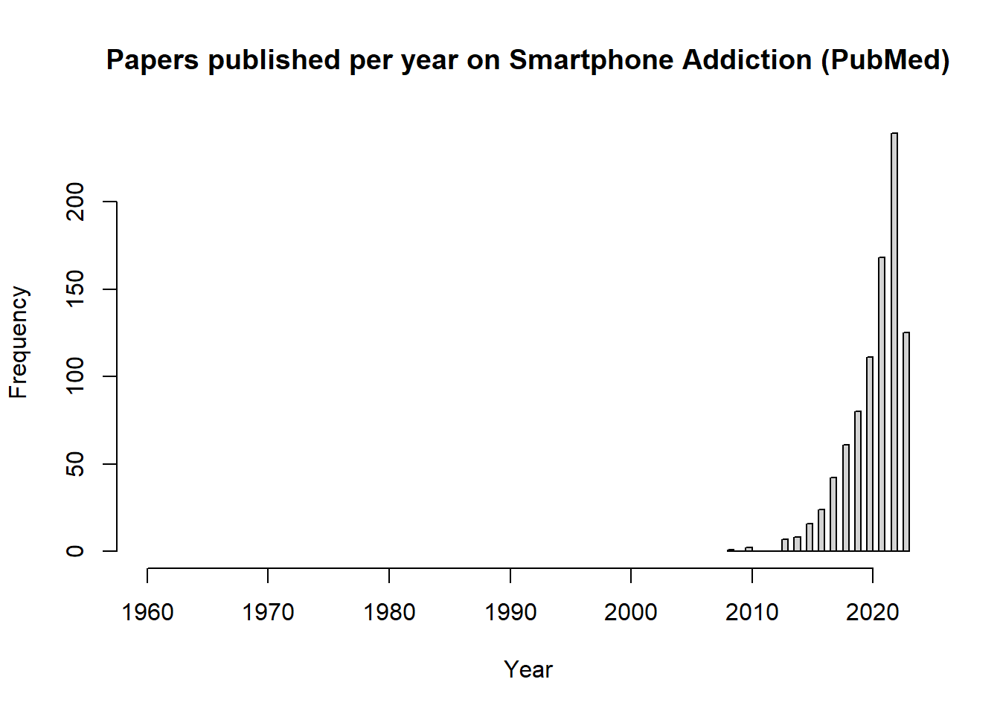
Show code
# Most popular journals:results_smart_phone2 %>%group_by(Journal_name_short) %>%summarise(n =n() ) %>%arrange(desc(n)) %>%print(n =20)# View(results_smart_phone2) # Visually inspect results# Now I need to add a label to all of these studies to signify that they Were returned from the smart_phone search so that we can distinguish them from other studies when we later joined the datasets together:Label_Smartphone <-rep("smart_phone", times =count(results_smart_phone2))results_smart_phone_final <- results_smart_phone2 %>%bind_cols(Label_Smartphone) %>%rename(Label =14)# View(results_smart_phone_final)# Now save the cleaned resultswrite.csv(results_smart_phone_final, "Data extraction/smart_phone_data_cleaned.csv", row.names=FALSE)
Cybersex addiction
Extract studies and perform a basic clean of dataset
Notes pre-search: There are no MeSH terms for this. Searching around the literature it seems like the most commonly Used term is “cybersex addiction”. “compulsive cybersex” It is also commonly used and seems to be consistently used to indicate an addiction (see https://www.ncbi.nlm.nih.gov/pmc/articles/PMC7044618/). “addictive cybersex” is also sometimes included in study abstracts.
Actual search used: “Cybersex addiction”[Title/Abstract] OR “Compulsive Cybersex”[Title/Abstract] OR “Addictive cybersex”[Title/Abstract]
Notes post-search: I manually inspected all of the results returned on PubMed (there aren’t too many this time). As far as I can see, all studies appeared relevant as of latest search date (see top of document).
Show code
# # Clean environment:# rm(list = ls())# # # Define the search term:# search_term_cybersex <- '"Cybersex addiction"[Title/Abstract] OR "Compulsive Cybersex"[Title/Abstract] OR "Addictive cybersex"[Title/Abstract]'# # # Use entrez_search to get the IDs of the articles:# search_results_cybersex <- entrez_search(db="pubmed", term=search_term_cybersex, retmax=20000)# id_list_cybersex <- search_results_cybersex$ids# # # Split id list into chunks of 100 for chunk/batches:# chunks <- split(id_list_cybersex, ceiling(seq_along(id_list_cybersex)/100))# # # Fetch details for each chunk of articles:# article_details_cybersex <- map_dfr(chunks, function(ids) {# # Fetch details of the articles:# articles <- entrez_fetch(db="pubmed", id=ids, rettype="medline", retmode="text")# # # Split the articles into individual articles:# articles <- strsplit(articles, "\n\n")[[1]]# # # Process each article:# map_dfr(articles, function(article) {# # Split the article into lines:# lines <- strsplit(article, "\n")[[1]]# # # Get the details we're interested in:# details_cybersex <- list(# PMID = if (any(grepl("^PMID", lines))) lines[grepl("^PMID", lines)] else NA,# DP = if (any(grepl("^DP", lines))) lines[grepl("^DP", lines)] else NA,# TI = if (any(grepl("^TI", lines))) lines[grepl("^TI", lines)] else NA,# LID = if (any(grepl("^LID", lines))) paste(lines[grepl("^LID", lines)], collapse="; ") else NA,# AB = if (any(grepl("^AB", lines))) paste(lines[grepl("^AB", lines)], collapse=" ") else NA,# FAU = if (any(grepl("^FAU", lines))) paste(lines[grepl("^FAU", lines)], collapse="; ") else NA,# AD = if (any(grepl("^AD", lines))) paste(lines[grepl("^AD", lines)], collapse="; ") else NA,# LA = if (any(grepl("^LA", lines))) paste(lines[grepl("^LA", lines)], collapse="; ") else NA,# PT = if (any(grepl("^PT", lines))) paste(lines[grepl("^PT", lines)], collapse="; ") else NA,# TA = if (any(grepl("^TA", lines))) lines[grepl("^TA", lines)] else NA,# COIS = if (any(grepl("^COIS", lines))) paste(lines[grepl("^COIS", lines)], collapse=" ") else NA,# JT = if (any(grepl("^JT", lines))) lines[grepl("^JT", lines)] else NA# )# # # Convert the list of details into a one-row data frame:# details_df_cybersex <- bind_rows(details_cybersex)# # return(details_df_cybersex)# })# })# # # Check the results:# article_details_cybersex %>%# as_tibble() %>%# print()# # # Let's remove the identifiers at the beginning of each data point:# rep_str <- c('PMID- ' = '', 'DP - ' = '', 'TI - ' = '', 'LID - ' = '', 'AB - ' = '',# 'FAU - ' = '', 'AD - ' = '', 'LA - ' = '', 'PT - ' = '', 'TA - ' = '',# 'COIS- ' = '', 'JT - ' = '')# # results_cybersex <- article_details_cybersex %>%# mutate(across(everything(), ~str_replace_all(., rep_str))) %>% # Remove identifiers# # Now separate the date year and month/day info:# separate(DP, c("Year", "Month"), sep = "\\ ") %>%# mutate(Year = as.numeric(Year)) %>% # Convert Year to numeric# rename(# Let's also provide more descriptive names for each of the columns# "Title" = "TI", # "DOI" = "LID", # "Abstract" = "AB", # "Full_Author_Name" = "FAU", # "Author_Address" = "AD", # "Language" = "LA", # "Publication_Type" = "PT", # "Journal_name_short" = "TA",# "Conflict_of_Interest_Statement" = "COIS",# "Journal_Title" = "JT") %>%# print()# # # Now save the initial results before proceeding so we can't lose them!# write.csv(results_cybersex, "Data extraction/cybersex_data.csv", row.names=FALSE)
Extract full title using rvest
Again, we’re going to use the rvest package to scrape the titles returned from the manual search in PubMed, then join the two datasets using the PMID, retaining the title from this new dataset.
Show code
# # Add search URL:# url_cybersex_rvest <- "https://pubmed.ncbi.nlm.nih.gov/?term=%22Cybersex+addiction%22%5BTitle%2FAbstract%5D+OR+%22Compulsive+Cybersex%22%5BTitle%2FAbstract%5D+OR+%22Addictive+cybersex%22%5BTitle%2FAbstract%5D&size=200" # 28 results returned on 19/08/2023# # # Read and parse the webpage# webpage_cybersex_rvest <- read_html(url_cybersex_rvest)# # # Get the total number of search results# results_count_cybersex <- webpage_cybersex_rvest %>%# html_node(".results-amount .value") %>%# html_text() %>%# str_replace(",", "") %>%# as.numeric()# # # Calculate the number of pages# results_per_page_cybersex <- 50# total_pages_cybersex <- ceiling(results_count_cybersex[1] / results_per_page_cybersex)# # Print results_count_cybersex and total_pages_cybersex# print(results_count_cybersex)# print(total_pages_cybersex)# # # # Initialize an empty data frame# results_cybersex_rvest <- data.frame()# # # Loop through each page and scrape the data# for (page in 0:(total_pages_cybersex - 1)) {# # Update the page parameter in the URL for the current page# current_url <- paste0(url_cybersex_rvest, "&page=", page + 1)# # # Read and parse the current webpage# current_page <- read_html(current_url)# # # Extract title# Title <- tryCatch({# current_page %>%# html_nodes(".docsum-title") %>%# html_text(trim = TRUE)# }, error = function(e) {# print(paste("Error extracting title info on page", page + 1))# rep(NA, length(Title)) # Return a vector of NAs with the same length as Title# })# # # Extract the PMID# pmid <- current_page %>%# html_nodes(".docsum-pmid") %>%# html_text(trim = TRUE)# # # Create a data frame with the extracted data# current_results_cybersex <- data.frame(Title = Title,# PMID = pmid)# # # Combine the current results with the previous results# results_cybersex_rvest <- rbind(results_cybersex_rvest, current_results_cybersex)# # # Introduce a delay to avoid overloading the server# sleep_time <- runif(1, min = 5, max = 15)# Sys.sleep(sleep_time)# }# # # Print the extracted data# print(as_tibble(results_cybersex_rvest))# # # # Now save the titles before proceeding so we can't lose them!# write.csv(results_cybersex_rvest, "Data extraction/cybersex_titles.csv", row.names=FALSE)
Refine dataset
Now we need to identify and remove any duplicates, irrelevant studies, or entries with any other issues (e.g., those that turn out to be erratums)
Show code
# Load in first dataset in case environment clean on knit (above sections not executed for render):results_cybersex<-read.csv("Data extraction/cybersex_data.csv") %>%as_tibble()# Load in second dataset in case environment clean on knit (above sections not executed for render):results_cybersex_rvest<-read.csv("Data extraction/cybersex_titles.csv") %>%as_tibble()# Merge our two datasetsresults_cybersex2 <- results_cybersex %>%as_tibble() %>%rename("Title_trunc"="Title") %>%# Designate the truncated title from our primary dataset so we can remove it once we get the full titlefull_join(results_cybersex_rvest, by ="PMID") %>%select(-Title_trunc) %>%# Bye truncated titlerelocate(Title) %>%# Place full title first for easeprint()# Check results:# View(results_cybersex2)# Total number with basic duplication removal based on title:Simple_duplicate_removal_n <- results_cybersex2 %>%distinct(Title) %>%count() %>%print() # n = 0 dupes (August 2023)# Total number with basic duplication removal based on PMID:Simple_duplicate_removal_n <- results_cybersex2 %>%distinct(PMID) %>%count() %>%print() # None# Summary of the year variable:summary(results_cybersex2$Year)# Number of publications per year:cybersex_hist<-hist(results_cybersex2$Year,xlim =c(1960,2023),breaks =20,main ="Papers published per year on Cybersex Addiction (PubMed)",xlab ="Year")
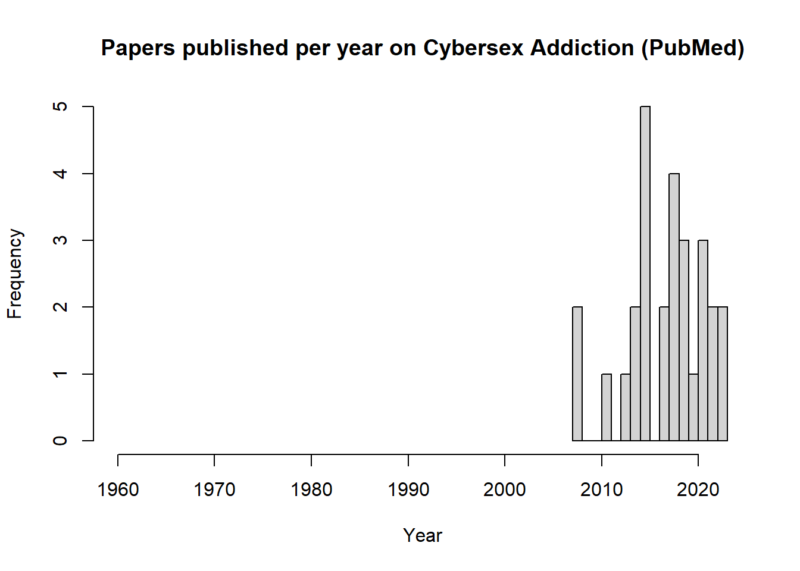
Show code
# Most popular journals:results_cybersex2 %>%group_by(Journal_name_short) %>%summarise(n =n() ) %>%arrange(desc(n)) %>%print(n =20)# View(results_cybersex2) # Visually inspect results# Now I need to add a label to all of these studies to signify that they Were returned from the cybersex search so that we can distinguish them from other studies when we later joined the datasets together:Label_Cybersex <-rep("cybersex", times =count(results_cybersex2))results_cybersex_final <- results_cybersex2 %>%bind_cols(Label_Cybersex) %>%rename(Label =14)# View(results_cybersex_final)# Now save the cleaned resultswrite.csv(results_cybersex_final, "Data extraction/cybersex_data_cleaned.csv", row.names=FALSE)
Sex addiction
Extract studies and perform a basic clean of dataset
Notes pre-search: MeSH terms: None available.
Actual search used: “sexual addiction”[Title/Abstract] OR “sex addiction”[Title/Abstract]
Originally included “sex dependence” as a search term, but it didn’t return anything related to sexual addiction and returned lots of studies that said the expression/presence of something e.g., a disease) was dependent on sex.
Notes post-search: # The manual search of results revealed that there were multiple irrelevant studies returned here. This is because there were several studies that listed sex and then addiction as variables of interest like “…, sex, addiction, …”. There is also one book called “Drug Addiction”. Here’s the full list of irrelevant studies that will need to be removed when refining the dataset:
The SCOPE study: health-care consumption related to patients with chronic obstructive pulmonary disease in France
Correlation of addictive factors, human papilloma virus infection and histopathology of oral submucous fibrosis
Serum malondialdehyde level: Surrogate stress marker in the Sikkimese diabetics
Design in topographical space of peptide and peptidomimetic ligands that affect behavior. A chemist’s glimpse at the mind–body problem
Tricyclic antidepressants intoxication in Tehran, Iran: epidemiology and associated factors
Biochemical aspects of effects of mesenchymal stem cell treatment in chronic wounds progressive healing
Drug Addiction
Show code
# # Clean environment:# rm(list = ls())# # # Define the search term:# search_term_sex <- '"sexual addiction"[Title/Abstract] OR "sex addiction"[Title/Abstract]'# # # Use entrez_search to get the IDs of the articles:# search_results_sex <- entrez_search(db="pubmed", term=search_term_sex, retmax=20000)# id_list_sex <- search_results_sex$ids# # # Split id list into chunks of 100 for chunk/batches:# chunks <- split(id_list_sex, ceiling(seq_along(id_list_sex)/100))# # # Fetch details for each chunk of articles:# article_details_sex <- map_dfr(chunks, function(ids) {# # Fetch details of the articles:# articles <- entrez_fetch(db="pubmed", id=ids, rettype="medline", retmode="text")# # # Split the articles into individual articles:# articles <- strsplit(articles, "\n\n")[[1]]# # # Process each article:# map_dfr(articles, function(article) {# # Split the article into lines:# lines <- strsplit(article, "\n")[[1]]# # # Get the details we're interested in:# details_sex <- list(# PMID = if (any(grepl("^PMID", lines))) lines[grepl("^PMID", lines)] else NA,# DP = if (any(grepl("^DP", lines))) lines[grepl("^DP", lines)] else NA,# TI = if (any(grepl("^TI", lines))) lines[grepl("^TI", lines)] else NA,# LID = if (any(grepl("^LID", lines))) paste(lines[grepl("^LID", lines)], collapse="; ") else NA,# AB = if (any(grepl("^AB", lines))) paste(lines[grepl("^AB", lines)], collapse=" ") else NA,# FAU = if (any(grepl("^FAU", lines))) paste(lines[grepl("^FAU", lines)], collapse="; ") else NA,# AD = if (any(grepl("^AD", lines))) paste(lines[grepl("^AD", lines)], collapse="; ") else NA,# LA = if (any(grepl("^LA", lines))) paste(lines[grepl("^LA", lines)], collapse="; ") else NA,# PT = if (any(grepl("^PT", lines))) paste(lines[grepl("^PT", lines)], collapse="; ") else NA,# TA = if (any(grepl("^TA", lines))) lines[grepl("^TA", lines)] else NA,# COIS = if (any(grepl("^COIS", lines))) paste(lines[grepl("^COIS", lines)], collapse=" ") else NA,# JT = if (any(grepl("^JT", lines))) lines[grepl("^JT", lines)] else NA# )# # # Convert the list of details into a one-row data frame:# details_df_sex <- bind_rows(details_sex)# # return(details_df_sex)# })# })# # # Check the results:# article_details_sex %>%# as_tibble() %>%# print()# # # Let's remove the identifiers at the beginning of each data point:# rep_str <- c('PMID- ' = '', 'DP - ' = '', 'TI - ' = '', 'LID - ' = '', 'AB - ' = '',# 'FAU - ' = '', 'AD - ' = '', 'LA - ' = '', 'PT - ' = '', 'TA - ' = '',# 'COIS- ' = '', 'JT - ' = '')# # results_sex <- article_details_sex %>%# mutate(across(everything(), ~str_replace_all(., rep_str))) %>% # Remove identifiers# # Now separate the date year and month/day info:# separate(DP, c("Year", "Month"), sep = "\\ ") %>%# mutate(Year = as.numeric(Year)) %>% # Convert Year to numeric# rename(# Let's also provide more descriptive names for each of the columns# "Title" = "TI", # "DOI" = "LID", # "Abstract" = "AB", # "Full_Author_Name" = "FAU", # "Author_Address" = "AD", # "Language" = "LA", # "Publication_Type" = "PT", # "Journal_name_short" = "TA",# "Conflict_of_Interest_Statement" = "COIS",# "Journal_Title" = "JT") %>%# print()# # # Now save the initial results before proceeding so we can't lose them!# write.csv(results_sex, "Data extraction/sex_data.csv", row.names=FALSE)
Extract full title using rvest
Again, we’re going to use the rvest package to scrape the titles returned from the manual search in PubMed, then join the two datasets using the PMID, retaining the title from this new dataset.
Show code
# # Add search URL:# url_sex_rvest <- "https://pubmed.ncbi.nlm.nih.gov/?term=%22sexual+addiction%22%5BTitle%2FAbstract%5D+OR+%22sex+addiction%22%5BTitle%2FAbstract%5D&size=200" # 275 results returned on 19/08/2023# # # Read and parse the webpage# webpage_sex_rvest <- read_html(url_sex_rvest)# # # Get the total number of search results# results_count_sex <- webpage_sex_rvest %>%# html_node(".results-amount .value") %>%# html_text() %>%# str_replace(",", "") %>%# as.numeric()# # # Calculate the number of pages# results_per_page_sex <- 50# total_pages_sex <- ceiling(results_count_sex[1] / results_per_page_sex)# # Print results_count_sex and total_pages_sex# print(results_count_sex)# print(total_pages_sex)# # # # Initialize an empty data frame# results_sex_rvest <- data.frame()# # # Loop through each page and scrape the data# for (page in 0:(total_pages_sex - 1)) {# # Update the page parameter in the URL for the current page# current_url <- paste0(url_sex_rvest, "&page=", page + 1)# # # Read and parse the current webpage# current_page <- read_html(current_url)# # # Extract title# Title <- tryCatch({# current_page %>%# html_nodes(".docsum-title") %>%# html_text(trim = TRUE)# }, error = function(e) {# print(paste("Error extracting title info on page", page + 1))# rep(NA, length(Title)) # Return a vector of NAs with the same length as Title# })# # # Extract the PMID# pmid <- current_page %>%# html_nodes(".docsum-pmid") %>%# html_text(trim = TRUE)# # # Create a data frame with the extracted data# current_results_sex <- data.frame(Title = Title,# PMID = pmid)# # # Combine the current results with the previous results# results_sex_rvest <- rbind(results_sex_rvest, current_results_sex)# # # Introduce a delay to avoid overloading the server# sleep_time <- runif(1, min = 5, max = 15)# Sys.sleep(sleep_time)# }# # # Print the extracted data# print(as_tibble(results_sex_rvest))# # # # Now save the titles before proceeding so we can't lose them!# write.csv(results_sex_rvest, "Data extraction/sex_titles.csv", row.names=FALSE)
Refine dataset
Now we need to identify and remove any duplicates, irrelevant studies, or entries with any other issues (e.g., those that turn out to be erratums)
Show code
# Load in first dataset in case environment clean on knit (above sections not executed for render):results_sex<-read.csv("Data extraction/sex_data.csv") %>%as_tibble()# Load in second dataset in case environment clean on knit (above sections not executed for render):results_sex_rvest<-read.csv("Data extraction/sex_titles.csv") %>%as_tibble()# Merge our two datasetsresults_sex2 <- results_sex %>%as_tibble() %>%rename("Title_trunc"="Title") %>%# Designate the truncated title from our primary dataset so we can remove it once we get the full titlefull_join(results_sex_rvest, by ="PMID") %>%select(-Title_trunc) %>%# Bye truncated titlerelocate(Title) %>%# Place full title first for easeprint()# Check results:# View(results_sex2)# Total number with basic duplication removal based on title:results_sex2 %>%distinct(Title) %>%count() %>%print() # n = 2 dupes (August 2023)# Inspect duplicates:# results_sex2 %>%# group_by(Title) %>% # filter(n()>1) %>% # View() # both duplicates appear to be genuine duplicates. Unsure why they are duplicated in pubmed, but there are some very minor differences in author initials which may explain it.# Total number with basic duplication removal based on PMID:results_sex2 %>%distinct(PMID) %>%count() %>%print() # None# Remove duplicates and irrelevant studies identified manually:results_sex3 <- results_sex2 %>%distinct(Title, .keep_all =TRUE) %>%filter(!(Title %in%c("The SCOPE study: health-care consumption related to patients with chronic obstructive pulmonary disease in France.","Correlation of addictive factors, human papilloma virus infection and histopathology of oral submucous fibrosis.","Serum malondialdehyde level: Surrogate stress marker in the Sikkimese diabetics.","Design in topographical space of peptide and peptidomimetic ligands that affect behavior. A chemist's glimpse at the mind--body problem.","Tricyclic antidepressants intoxication in Tehran, Iran: epidemiology and associated factors.","Biochemical aspects of effects of mesenchymal stem cell treatment in chronic wounds progressive healing.","Drug Addiction." )) )# Summary of the year variable:summary(results_sex3$Year)# Number of publications per year:sex_hist<-hist(results_sex3$Year,xlim =c(1960,2023),breaks =20,main ="Papers published per year on Sex Addiction (PubMed)",xlab ="Year")
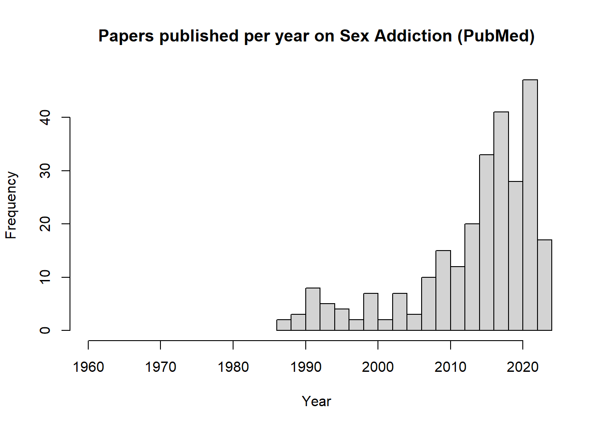
Show code
# Most popular journals:results_sex2 %>%group_by(Journal_name_short) %>%summarise(n =n() ) %>%arrange(desc(n)) %>%print(n =20)# View(results_sex2) # Visually inspect results# Now I need to add a label to all of these studies to signify that they Were returned from the sex search so that we can distinguish them from other studies when we later joined the datasets together:Label_Sex <-rep("sex", times =count(results_sex2))results_sex_final <- results_sex2 %>%bind_cols(Label_Sex) %>%rename(Label =14)# View(results_sex_final)# Now save the cleaned resultswrite.csv(results_sex_final, "Data extraction/sex_data_cleaned.csv", row.names=FALSE)
Pornography addiction
Extract studies and perform a basic clean of dataset
Notes pre-search: No MeSH terms available. Pornography-use disorder is the term used in https://doi.org/10.1556/2006.2020.00035. Cybersex addiction refers to a more broad focus on internet-related sexual stimulation (E.g., chat rooms and VR), but it seems like there is definitely some overlap between the search returns.
Actual search used: “pornography-use disorder”[Title/Abstract] OR “pornography addiction”[Title/Abstract]
Not found so removed from search terms: “pornography dependence”, “addiction to pornography”, “cybersex dependence”
Notes post-search: I manually inspected all of the results returned on PubMed. As far as I can see, all studies appeared relevant as of latest search date (see top of document).
Show code
# # Clean environment:# rm(list = ls())# # # Define the search term:# search_term_pornography <- '"pornography-use disorder"[Title/Abstract] OR "pornography addiction"[Title/Abstract]'# # # Use entrez_search to get the IDs of the articles:# search_results_pornography <- entrez_search(db="pubmed", term=search_term_pornography, retmax=20000)# id_list_pornography <- search_results_pornography$ids# # # Split id list into chunks of 100 for chunk/batches:# chunks <- split(id_list_pornography, ceiling(seq_along(id_list_pornography)/100))# # # Fetch details for each chunk of articles:# article_details_pornography <- map_dfr(chunks, function(ids) {# # Fetch details of the articles:# articles <- entrez_fetch(db="pubmed", id=ids, rettype="medline", retmode="text")# # # Split the articles into individual articles:# articles <- strsplit(articles, "\n\n")[[1]]# # # Process each article:# map_dfr(articles, function(article) {# # Split the article into lines:# lines <- strsplit(article, "\n")[[1]]# # # Get the details we're interested in:# details_pornography <- list(# PMID = if (any(grepl("^PMID", lines))) lines[grepl("^PMID", lines)] else NA,# DP = if (any(grepl("^DP", lines))) lines[grepl("^DP", lines)] else NA,# TI = if (any(grepl("^TI", lines))) lines[grepl("^TI", lines)] else NA,# LID = if (any(grepl("^LID", lines))) paste(lines[grepl("^LID", lines)], collapse="; ") else NA,# AB = if (any(grepl("^AB", lines))) paste(lines[grepl("^AB", lines)], collapse=" ") else NA,# FAU = if (any(grepl("^FAU", lines))) paste(lines[grepl("^FAU", lines)], collapse="; ") else NA,# AD = if (any(grepl("^AD", lines))) paste(lines[grepl("^AD", lines)], collapse="; ") else NA,# LA = if (any(grepl("^LA", lines))) paste(lines[grepl("^LA", lines)], collapse="; ") else NA,# PT = if (any(grepl("^PT", lines))) paste(lines[grepl("^PT", lines)], collapse="; ") else NA,# TA = if (any(grepl("^TA", lines))) lines[grepl("^TA", lines)] else NA,# COIS = if (any(grepl("^COIS", lines))) paste(lines[grepl("^COIS", lines)], collapse=" ") else NA,# JT = if (any(grepl("^JT", lines))) lines[grepl("^JT", lines)] else NA# )# # # Convert the list of details into a one-row data frame:# details_df_pornography <- bind_rows(details_pornography)# # return(details_df_pornography)# })# })# # # Check the results:# article_details_pornography %>%# as_tibble() %>%# print()# # # Let's remove the identifiers at the beginning of each data point:# rep_str <- c('PMID- ' = '', 'DP - ' = '', 'TI - ' = '', 'LID - ' = '', 'AB - ' = '',# 'FAU - ' = '', 'AD - ' = '', 'LA - ' = '', 'PT - ' = '', 'TA - ' = '',# 'COIS- ' = '', 'JT - ' = '')# # results_pornography <- article_details_pornography %>%# mutate(across(everything(), ~str_replace_all(., rep_str))) %>% # Remove identifiers# # Now separate the date year and month/day info:# separate(DP, c("Year", "Month"), sep = "\\ ") %>%# mutate(Year = as.numeric(Year)) %>% # Convert Year to numeric# rename(# Let's also provide more descriptive names for each of the columns# "Title" = "TI", # "DOI" = "LID", # "Abstract" = "AB", # "Full_Author_Name" = "FAU", # "Author_Address" = "AD", # "Language" = "LA", # "Publication_Type" = "PT", # "Journal_name_short" = "TA",# "Conflict_of_Interest_Statement" = "COIS",# "Journal_Title" = "JT") %>%# print()# # # Now save the initial results before proceeding so we can't lose them!# write.csv(results_pornography, "Data extraction/pornography_data.csv", row.names=FALSE)
Extract full title using rvest
Again, we’re going to use the rvest package to scrape the titles returned from the manual search in PubMed, then join the two datasets using the PMID, retaining the title from this new dataset.
Show code
# # Add search URL:# url_pornography_rvest <- "https://pubmed.ncbi.nlm.nih.gov/?term=%22pornography-use+disorder%22%5BTitle%2FAbstract%5D+OR+%22pornography+addiction%22%5BTitle%2FAbstract%5D+&size=200" # 71 results returned on 19/08/2023# # # Read and parse the webpage# webpage_pornography_rvest <- read_html(url_pornography_rvest)# # # Get the total number of search results# results_count_pornography <- webpage_pornography_rvest %>%# html_node(".results-amount .value") %>%# html_text() %>%# str_replace(",", "") %>%# as.numeric()# # # Calculate the number of pages# results_per_page_pornography <- 50# total_pages_pornography <- ceiling(results_count_pornography[1] / results_per_page_pornography)# # Print results_count_pornography and total_pages_pornography# print(results_count_pornography)# print(total_pages_pornography)# # # # Initialize an empty data frame# results_pornography_rvest <- data.frame()# # # Loop through each page and scrape the data# for (page in 0:(total_pages_pornography - 1)) {# # Update the page parameter in the URL for the current page# current_url <- paste0(url_pornography_rvest, "&page=", page + 1)# # # Read and parse the current webpage# current_page <- read_html(current_url)# # # Extract title# Title <- tryCatch({# current_page %>%# html_nodes(".docsum-title") %>%# html_text(trim = TRUE)# }, error = function(e) {# print(paste("Error extracting title info on page", page + 1))# rep(NA, length(Title)) # Return a vector of NAs with the same length as Title# })# # # Extract the PMID# pmid <- current_page %>%# html_nodes(".docsum-pmid") %>%# html_text(trim = TRUE)# # # Create a data frame with the extracted data# current_results_pornography <- data.frame(Title = Title,# PMID = pmid)# # # Combine the current results with the previous results# results_pornography_rvest <- rbind(results_pornography_rvest, current_results_pornography)# # # Introduce a delay to avoid overloading the server# sleep_time <- runif(1, min = 5, max = 15)# Sys.sleep(sleep_time)# }# # # Print the extracted data# print(as_tibble(results_pornography_rvest))# # # # Now save the titles before proceeding so we can't lose them!# write.csv(results_pornography_rvest, "Data extraction/pornography_titles.csv", row.names=FALSE)
Refine dataset
Now we need to identify and remove any duplicates, irrelevant studies, or entries with any other issues (e.g., those that turn out to be erratums)
Show code
# Load in first dataset in case environment clean on knit (above sections not executed for render):results_pornography<-read.csv("Data extraction/pornography_data.csv") %>%as_tibble()# Load in second dataset in case environment clean on knit (above sections not executed for render):results_pornography_rvest<-read.csv("Data extraction/pornography_titles.csv") %>%as_tibble()# Merge our two datasetsresults_pornography2 <- results_pornography %>%as_tibble() %>%rename("Title_trunc"="Title") %>%# Designate the truncated title from our primary dataset so we can remove it once we get the full titlefull_join(results_pornography_rvest, by ="PMID") %>%select(-Title_trunc) %>%# Bye truncated titlerelocate(Title) %>%# Place full title first for easeprint()# Check results:# View(results_pornography2)# Total number with basic duplication removal based on title:results_pornography2 %>%distinct(Title) %>%count() %>%print() # n = 1 dupes (August 2023)# Check duplicate:# results_pornography2 %>%# group_by(Title) %>% # filter(n()>1) %>% # View()# **This is a genuine duplicate.The PMID for removal is: 34400111# Total number with basic duplication removal based on PMID:results_pornography2 %>%distinct(PMID) %>%count() %>%print() # None# Filter out duplicate:results_pornography3 <- results_pornography2 %>%filter(PMID !="34400111")# Summary of the year variable:summary(results_pornography3$Year)# Number of publications per year:pornography_hist<-hist(results_pornography3$Year,xlim =c(1960,2023),breaks =15,main ="Papers published per year on Pornography Addiction (PubMed)",xlab ="Year")
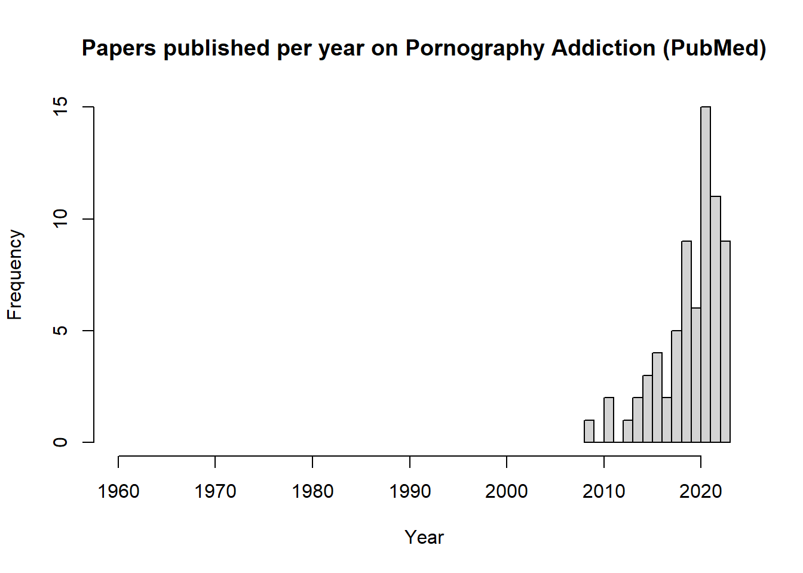
Show code
# Most popular journals:results_pornography3 %>%group_by(Journal_name_short) %>%summarise(n =n() ) %>%arrange(desc(n)) %>%print(n =20)# View(results_pornography2) # Visually inspect results# Now I need to add a label to all of these studies to signify that they Were returned from the pornography search so that we can distinguish them from other studies when we later joined the datasets together:Label_Pornography <-rep("pornography", times =count(results_pornography3))results_pornography_final <- results_pornography3 %>%bind_cols(Label_Pornography) %>%rename(Label =14)# View(results_pornography_final)# Now save the cleaned resultswrite.csv(results_pornography_final, "Data extraction/pornography_data_cleaned.csv", row.names=FALSE)
Tanning addiction
Extract studies and perform a basic clean of dataset
Notes pre-search: There are obviously no MeSH terms for this.The few studies are confined on this scene to either call it “excessive tanning” or, more commonly, “tanning addiction”
Actual search used: “Tanning addiction”[Title/Abstract] - Not found so removed from search terms: “Addicted to tanning”[Title/Abstract] AND “Tanning disorder”[Title/Abstract]
Notes post-search: I manually inspected all of the results returned on PubMed. As far as I can see, all studies appeared relevant as of latest search date (see top of document).
Show code
# # Clean environment:# rm(list = ls())# # # Define the search term:# search_term_tanning <- '"Tanning addiction"[Title/Abstract]'# # # Use entrez_search to get the IDs of the articles:# search_results_tanning <- entrez_search(db="pubmed", term=search_term_tanning, retmax=20000)# id_list_tanning <- search_results_tanning$ids# # # Split id list into chunks of 100 for chunk/batches:# chunks <- split(id_list_tanning, ceiling(seq_along(id_list_tanning)/100))# # # Fetch details for each chunk of articles:# article_details_tanning <- map_dfr(chunks, function(ids) {# # Fetch details of the articles:# articles <- entrez_fetch(db="pubmed", id=ids, rettype="medline", retmode="text")# # # Split the articles into individual articles:# articles <- strsplit(articles, "\n\n")[[1]]# # # Process each article:# map_dfr(articles, function(article) {# # Split the article into lines:# lines <- strsplit(article, "\n")[[1]]# # # Get the details we're interested in:# details_tanning <- list(# PMID = if (any(grepl("^PMID", lines))) lines[grepl("^PMID", lines)] else NA,# DP = if (any(grepl("^DP", lines))) lines[grepl("^DP", lines)] else NA,# TI = if (any(grepl("^TI", lines))) lines[grepl("^TI", lines)] else NA,# LID = if (any(grepl("^LID", lines))) paste(lines[grepl("^LID", lines)], collapse="; ") else NA,# AB = if (any(grepl("^AB", lines))) paste(lines[grepl("^AB", lines)], collapse=" ") else NA,# FAU = if (any(grepl("^FAU", lines))) paste(lines[grepl("^FAU", lines)], collapse="; ") else NA,# AD = if (any(grepl("^AD", lines))) paste(lines[grepl("^AD", lines)], collapse="; ") else NA,# LA = if (any(grepl("^LA", lines))) paste(lines[grepl("^LA", lines)], collapse="; ") else NA,# PT = if (any(grepl("^PT", lines))) paste(lines[grepl("^PT", lines)], collapse="; ") else NA,# TA = if (any(grepl("^TA", lines))) lines[grepl("^TA", lines)] else NA,# COIS = if (any(grepl("^COIS", lines))) paste(lines[grepl("^COIS", lines)], collapse=" ") else NA,# JT = if (any(grepl("^JT", lines))) lines[grepl("^JT", lines)] else NA# )# # # Convert the list of details into a one-row data frame:# details_df_tanning <- bind_rows(details_tanning)# # return(details_df_tanning)# })# })# # # Check the results:# article_details_tanning %>%# as_tibble() %>%# print()# # # Let's remove the identifiers at the beginning of each data point:# rep_str <- c('PMID- ' = '', 'DP - ' = '', 'TI - ' = '', 'LID - ' = '', 'AB - ' = '',# 'FAU - ' = '', 'AD - ' = '', 'LA - ' = '', 'PT - ' = '', 'TA - ' = '',# 'COIS- ' = '', 'JT - ' = '')# # results_tanning <- article_details_tanning %>%# mutate(across(everything(), ~str_replace_all(., rep_str))) %>% # Remove identifiers# # Now separate the date year and month/day info:# separate(DP, c("Year", "Month"), sep = "\\ ") %>%# mutate(Year = as.numeric(Year)) %>% # Convert Year to numeric# rename(# Let's also provide more descriptive names for each of the columns# "Title" = "TI", # "DOI" = "LID", # "Abstract" = "AB", # "Full_Author_Name" = "FAU", # "Author_Address" = "AD", # "Language" = "LA", # "Publication_Type" = "PT", # "Journal_name_short" = "TA",# "Conflict_of_Interest_Statement" = "COIS",# "Journal_Title" = "JT") %>%# print()# # # Now save the initial results before proceeding so we can't lose them!# write.csv(results_tanning, "Data extraction/tanning_data.csv", row.names=FALSE)
Extract full title using rvest
Again, we’re going to use the rvest package to scrape the titles returned from the manual search in PubMed, then join the two datasets using the PMID, retaining the title from this new dataset.
Show code
# # Add search URL:# url_tanning_rvest <- "https://pubmed.ncbi.nlm.nih.gov/?term=%22Tanning+addiction%22%5BTitle%2FAbstract%5D&size=200" # 29 results returned on 19/08/2023# # # Read and parse the webpage# webpage_tanning_rvest <- read_html(url_tanning_rvest)# # # Get the total number of search results# results_count_tanning <- webpage_tanning_rvest %>%# html_node(".results-amount .value") %>%# html_text() %>%# str_replace(",", "") %>%# as.numeric()# # # Calculate the number of pages# results_per_page_tanning <- 50# total_pages_tanning <- ceiling(results_count_tanning[1] / results_per_page_tanning)# # Print results_count_tanning and total_pages_tanning# print(results_count_tanning)# print(total_pages_tanning)# # # # Initialize an empty data frame# results_tanning_rvest <- data.frame()# # # Loop through each page and scrape the data# for (page in 0:(total_pages_tanning - 1)) {# # Update the page parameter in the URL for the current page# current_url <- paste0(url_tanning_rvest, "&page=", page + 1)# # # Read and parse the current webpage# current_page <- read_html(current_url)# # # Extract title# Title <- tryCatch({# current_page %>%# html_nodes(".docsum-title") %>%# html_text(trim = TRUE)# }, error = function(e) {# print(paste("Error extracting title info on page", page + 1))# rep(NA, length(Title)) # Return a vector of NAs with the same length as Title# })# # # Extract the PMID# pmid <- current_page %>%# html_nodes(".docsum-pmid") %>%# html_text(trim = TRUE)# # # Create a data frame with the extracted data# current_results_tanning <- data.frame(Title = Title,# PMID = pmid)# # # Combine the current results with the previous results# results_tanning_rvest <- rbind(results_tanning_rvest, current_results_tanning)# # # Introduce a delay to avoid overloading the server# sleep_time <- runif(1, min = 5, max = 15)# Sys.sleep(sleep_time)# }# # # Print the extracted data# print(as_tibble(results_tanning_rvest))# # # # Now save the titles before proceeding so we can't lose them!# write.csv(results_tanning_rvest, "Data extraction/tanning_titles.csv", row.names=FALSE)
Refine dataset
Now we need to identify and remove any duplicates, irrelevant studies, or entries with any other issues (e.g., those that turn out to be erratums)
Show code
# Load in first dataset in case environment clean on knit (above sections not executed for render):results_tanning<-read.csv("Data extraction/tanning_data.csv") %>%as_tibble()# Load in second dataset in case environment clean on knit (above sections not executed for render):results_tanning_rvest<-read.csv("Data extraction/tanning_titles.csv") %>%as_tibble()# Merge our two datasetsresults_tanning2 <- results_tanning %>%as_tibble() %>%rename("Title_trunc"="Title") %>%# Designate the truncated title from our primary dataset so we can remove it once we get the full titlefull_join(results_tanning_rvest, by ="PMID") %>%select(-Title_trunc) %>%# Bye truncated titlerelocate(Title) %>%# Place full title first for easeprint()# Check results:# View(results_tanning2)# Total number with basic duplication removal based on title:Simple_duplicate_removal_n <- results_tanning2 %>%distinct(Title) %>%count() %>%print() # n = 0 dupes (August 2023)# Total number with basic duplication removal based on PMID:Simple_duplicate_removal_n <- results_tanning2 %>%distinct(PMID) %>%count() %>%print() # None# Summary of the year variable:summary(results_tanning2$Year)# Number of publications per year:tanning_hist<-hist(results_tanning2$Year,xlim =c(1960,2023),breaks =15,main ="Papers published per year on Tanning Addiction (PubMed)",xlab ="Year")
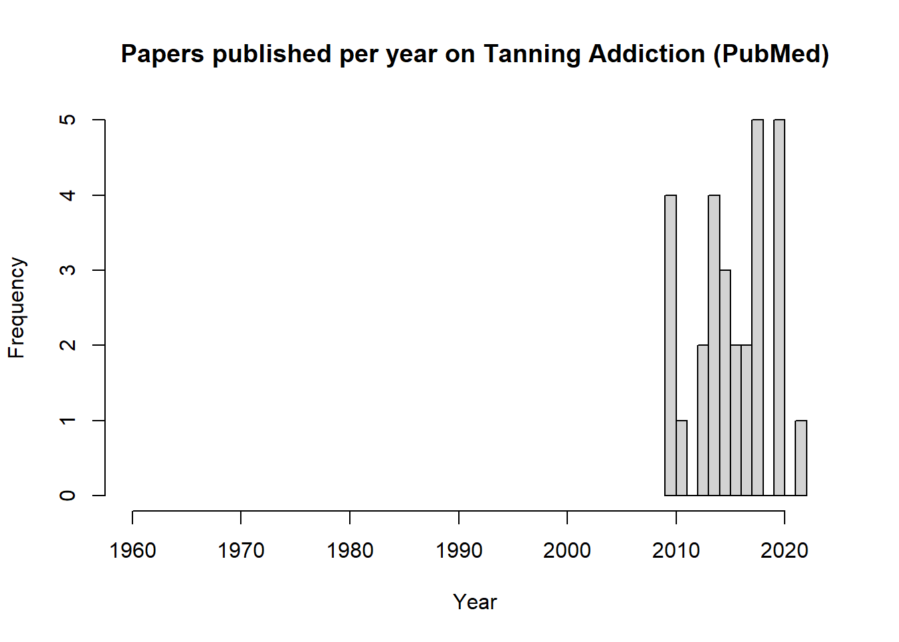
Show code
# Most popular journals:results_tanning2 %>%group_by(Journal_name_short) %>%summarise(n =n() ) %>%arrange(desc(n)) %>%print(n =20)# View(results_tanning2) # Visually inspect results# Now I need to add a label to all of these studies to signify that they Were returned from the tanning search so that we can distinguish them from other studies when we later joined the datasets together:Label_tanning <-rep("tanning", times =count(results_tanning2))results_tanning_final <- results_tanning2 %>%bind_cols(Label_tanning) %>%rename(Label =14)# View(results_tanning_final)# Now save the cleaned resultswrite.csv(results_tanning_final, "Data extraction/tanning_data_cleaned.csv", row.names=FALSE)
Hair pulling addiction
Extract studies and perform a basic clean of dataset
Notes pre-search: MeSH terms: The only term used here is the official diagnostic term, trichotillomania (see: here).
Actual search used: “Hair pulling addiction” OR “trichotillomania addiction” - Searching just trichotillomania led to many relevant studies (see notes post-search).
Notes post-search: The strategy here was very different as many people consider here pulling/trichotillomania to be a form of impulse control disorder, rather than behavioural addiction. So, I varied the search terms to get as many studies as possible that discuss it within the context of addiction, and as few studies as possible that do not. Then, from the 68 studies returned in this initial sample, I manually inspected all of them to see which discussed this condition as a behavioural addiction to some extent. The following studies were identified as being relevant and will be removed when refining the dataset:
The neurobiology and genetics of impulse control disorders: relationships to drug addictions
Behavioural addiction-A rising tide?
Compulsivity in obsessive-compulsive disorder and addictions
Naltrexone in the Treatment of Broadly Defined Behavioral Addictions: A Review and Meta-Analysis of Randomized Controlled Trials
An A-B-C model of habit disorders: hair-pulling, skin-picking, and other stereotypic conditions
Co-occurrences of substance use and other potentially addictive behaviors: Epidemiological results from the Psychological and Genetic Factors of the Addictive Behaviors (PGA) Study
Epidemiology of behavioral dependence: literature review and results of original studies
Opioid antagonists in broadly defined behavioral addictions: a narrative review
Addicted to hair pulling? How an alternate model of trichotillomania may improve treatment outcome
Tricotillomania: pathopsychology theories and treatment possibilities
[Trichotillomania and comorbidity–lamotrigine in a new perspective]
# # Clean environment:# rm(list = ls())# # # Define the search term:# search_term_hair_pulling <- '"Hair pulling addiction" OR "trichotillomania addiction"'# # # Use entrez_search to get the IDs of the articles:# search_results_hair_pulling <- entrez_search(db="pubmed", term=search_term_hair_pulling, retmax=20000)# id_list_hair_pulling <- search_results_hair_pulling$ids# # # Split id list into chunks of 100 for chunk/batches:# chunks <- split(id_list_hair_pulling, ceiling(seq_along(id_list_hair_pulling)/100))# # # Fetch details for each chunk of articles:# article_details_hair_pulling <- map_dfr(chunks, function(ids) {# # Fetch details of the articles:# articles <- entrez_fetch(db="pubmed", id=ids, rettype="medline", retmode="text")# # # Split the articles into individual articles:# articles <- strsplit(articles, "\n\n")[[1]]# # # Process each article:# map_dfr(articles, function(article) {# # Split the article into lines:# lines <- strsplit(article, "\n")[[1]]# # # Get the details we're interested in:# details_hair_pulling <- list(# PMID = if (any(grepl("^PMID", lines))) lines[grepl("^PMID", lines)] else NA,# DP = if (any(grepl("^DP", lines))) lines[grepl("^DP", lines)] else NA,# TI = if (any(grepl("^TI", lines))) lines[grepl("^TI", lines)] else NA,# LID = if (any(grepl("^LID", lines))) paste(lines[grepl("^LID", lines)], collapse="; ") else NA,# AB = if (any(grepl("^AB", lines))) paste(lines[grepl("^AB", lines)], collapse=" ") else NA,# FAU = if (any(grepl("^FAU", lines))) paste(lines[grepl("^FAU", lines)], collapse="; ") else NA,# AD = if (any(grepl("^AD", lines))) paste(lines[grepl("^AD", lines)], collapse="; ") else NA,# LA = if (any(grepl("^LA", lines))) paste(lines[grepl("^LA", lines)], collapse="; ") else NA,# PT = if (any(grepl("^PT", lines))) paste(lines[grepl("^PT", lines)], collapse="; ") else NA,# TA = if (any(grepl("^TA", lines))) lines[grepl("^TA", lines)] else NA,# COIS = if (any(grepl("^COIS", lines))) paste(lines[grepl("^COIS", lines)], collapse=" ") else NA,# JT = if (any(grepl("^JT", lines))) lines[grepl("^JT", lines)] else NA# )# # # Convert the list of details into a one-row data frame:# details_df_hair_pulling <- bind_rows(details_hair_pulling)# # return(details_df_hair_pulling)# })# })# # # Check the results:# article_details_hair_pulling %>%# as_tibble() %>%# print()# # # Let's remove the identifiers at the beginning of each data point:# rep_str <- c('PMID- ' = '', 'DP - ' = '', 'TI - ' = '', 'LID - ' = '', 'AB - ' = '',# 'FAU - ' = '', 'AD - ' = '', 'LA - ' = '', 'PT - ' = '', 'TA - ' = '',# 'COIS- ' = '', 'JT - ' = '')# # results_hair_pulling <- article_details_hair_pulling %>%# mutate(across(everything(), ~str_replace_all(., rep_str))) %>% # Remove identifiers# # Now separate the date year and month/day info:# separate(DP, c("Year", "Month"), sep = "\\ ") %>%# mutate(Year = as.numeric(Year)) %>% # Convert Year to numeric# rename(# Let's also provide more descriptive names for each of the columns# "Title" = "TI", # "DOI" = "LID", # "Abstract" = "AB", # "Full_Author_Name" = "FAU", # "Author_Address" = "AD", # "Language" = "LA", # "Publication_Type" = "PT", # "Journal_name_short" = "TA",# "Conflict_of_Interest_Statement" = "COIS",# "Journal_Title" = "JT") %>%# print()# # # Now save the initial results before proceeding so we can't lose them!# write.csv(results_hair_pulling, "Data extraction/hair_pulling_data.csv", row.names=FALSE)
Extract full title using rvest
Again, we’re going to use the rvest package to scrape the titles returned from the manual search in PubMed, then join the two datasets using the PMID, retaining the title from this new dataset.
Show code
# # Add search URL:# url_hair_pulling_rvest <- "https://pubmed.ncbi.nlm.nih.gov/?term=%22Hair+pulling+addiction%22+OR+%22trichotillomania+addiction%22&size=200" # 68 results returned on 20/08/2023# # # Read and parse the webpage# webpage_hair_pulling_rvest <- read_html(url_hair_pulling_rvest)# # # Get the total number of search results# results_count_hair_pulling <- webpage_hair_pulling_rvest %>%# html_node(".results-amount .value") %>%# html_text() %>%# str_replace(",", "") %>%# as.numeric()# # # Calculate the number of pages# results_per_page_hair_pulling <- 50# total_pages_hair_pulling <- ceiling(results_count_hair_pulling[1] / results_per_page_hair_pulling)# # Print results_count_hair_pulling and total_pages_hair_pulling# print(results_count_hair_pulling)# print(total_pages_hair_pulling)# # # # Initialize an empty data frame# results_hair_pulling_rvest <- data.frame()# # # Loop through each page and scrape the data# for (page in 0:(total_pages_hair_pulling - 1)) {# # Update the page parameter in the URL for the current page# current_url <- paste0(url_hair_pulling_rvest, "&page=", page + 1)# # # Read and parse the current webpage# current_page <- read_html(current_url)# # # Extract title# Title <- tryCatch({# current_page %>%# html_nodes(".docsum-title") %>%# html_text(trim = TRUE)# }, error = function(e) {# print(paste("Error extracting title info on page", page + 1))# rep(NA, length(Title)) # Return a vector of NAs with the same length as Title# })# # # Extract the PMID# pmid <- current_page %>%# html_nodes(".docsum-pmid") %>%# html_text(trim = TRUE)# # # Create a data frame with the extracted data# current_results_hair_pulling <- data.frame(Title = Title,# PMID = pmid)# # # Combine the current results with the previous results# results_hair_pulling_rvest <- rbind(results_hair_pulling_rvest, current_results_hair_pulling)# # # Introduce a delay to avoid overloading the server# sleep_time <- runif(1, min = 5, max = 15)# Sys.sleep(sleep_time)# }# # # Print the extracted data# print(as_tibble(results_hair_pulling_rvest))# # # # Now save the titles before proceeding so we can't lose them!# write.csv(results_hair_pulling_rvest, "Data extraction/hair_pulling_titles.csv", row.names=FALSE)
Refine dataset
Now we need to identify and remove any duplicates, irrelevant studies, or entries with any other issues (e.g., those that turn out to be erratums)
Show code
# Load in first dataset in case environment clean on knit (above sections not executed for render):results_hair_pulling<-read.csv("Data extraction/hair_pulling_data.csv") %>%as_tibble()# Load in second dataset in case environment clean on knit (above sections not executed for render):results_hair_pulling_rvest<-read.csv("Data extraction/hair_pulling_titles.csv") %>%as_tibble()# Merge our two datasetsresults_hair_pulling2 <- results_hair_pulling %>%as_tibble() %>%rename("Title_trunc"="Title") %>%# Designate the truncated title from our primary dataset so we can remove it once we get the full titlefull_join(results_hair_pulling_rvest, by ="PMID") %>%select(-Title_trunc) %>%# Bye truncated titlerelocate(Title) %>%# Place full title first for easeprint()# Check results:# View(results_hair_pulling2)# Total number with basic duplication removal based on title:results_hair_pulling2 %>%distinct(Title) %>%count() %>%print() # n = 0 dupes (August 2023)# Total number with basic duplication removal based on PMID:results_hair_pulling2 %>%distinct(PMID) %>%count() %>%print() # None# Now isolate the relevant studies:results_hair_pulling3 <- results_hair_pulling2 %>%filter(Title %in%c("The neurobiology and genetics of impulse control disorders: relationships to drug addictions.","Behavioural addiction-A rising tide?","Compulsivity in obsessive-compulsive disorder and addictions.","Naltrexone in the Treatment of Broadly Defined Behavioral Addictions: A Review and Meta-Analysis of Randomized Controlled Trials.","An A-B-C model of habit disorders: hair-pulling, skin-picking, and other stereotypic conditions.","Co-occurrences of substance use and other potentially addictive behaviors: Epidemiological results from the Psychological and Genetic Factors of the Addictive Behaviors (PGA) Study.","Epidemiology of behavioral dependence: literature review and results of original studies.","Opioid antagonists in broadly defined behavioral addictions: a narrative review.","Addicted to hair pulling? How an alternate model of trichotillomania may improve treatment outcome.","Tricotillomania: pathopsychology theories and treatment possibilities.","[Trichotillomania and comorbidity--lamotrigine in a new perspective].","[Internet addiction].","Naltrexone: A Pan-Addiction Treatment?"))# Summary of the year variable:summary(results_hair_pulling3$Year)# Number of publications per year:hair_pulling_hist<-hist(results_hair_pulling3$Year,xlim =c(1960,2023),breaks =15,main ="Papers published per year on Hair Pulling Addiction (PubMed)",xlab ="Year")
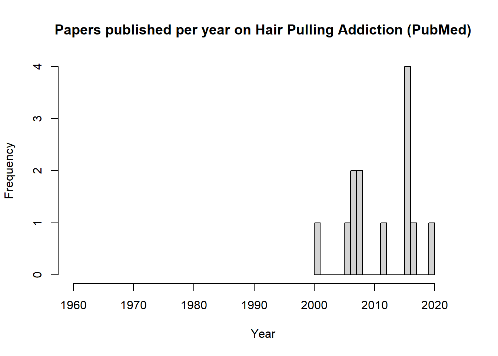
Show code
# Most popular journals:results_hair_pulling3 %>%group_by(Journal_name_short) %>%summarise(n =n() ) %>%arrange(desc(n)) %>%print(n =20)# View(results_hair_pulling2) # Visually inspect results# Now I need to add a label to all of these studies to signify that they Were returned from the hair_pulling search so that we can distinguish them from other studies when we later joined the datasets together:Label_hair_pulling <-rep("hair_pulling", times =count(results_hair_pulling3))results_hair_pulling_final <- results_hair_pulling3 %>%bind_cols(Label_hair_pulling) %>%rename(Label =14)# View(results_hair_pulling_final)# Now save the cleaned resultswrite.csv(results_hair_pulling_final, "Data extraction/hair_pulling_data_cleaned.csv", row.names=FALSE)
Love addiction
Extract studies and perform a basic clean of dataset
Notes pre-search: There are no MeSH termsunsurprisingly.
Actual search used: “Love addiction”[Title/Abstract]
Not found so removed from search terms: “Love Passion addiction”[Title/Abstract]
Notes post-search: I manually inspected all of the results returned on PubMed. The following study is not relevant to include and will be removed when refining the dataset:
The sexual response as exercise. A brief review and theoretical proposal
Show code
# # Clean environment:# rm(list = ls())# # # Define the search term:# search_term_love <- '"Love addiction"[Title/Abstract]'# # # Use entrez_search to get the IDs of the articles:# search_results_love <- entrez_search(db="pubmed", term=search_term_love, retmax=20000)# id_list_love <- search_results_love$ids# # # Split id list into chunks of 100 for chunk/batches:# chunks <- split(id_list_love, ceiling(seq_along(id_list_love)/100))# # # Fetch details for each chunk of articles:# article_details_love <- map_dfr(chunks, function(ids) {# # Fetch details of the articles:# articles <- entrez_fetch(db="pubmed", id=ids, rettype="medline", retmode="text")# # # Split the articles into individual articles:# articles <- strsplit(articles, "\n\n")[[1]]# # # Process each article:# map_dfr(articles, function(article) {# # Split the article into lines:# lines <- strsplit(article, "\n")[[1]]# # # Get the details we're interested in:# details_love <- list(# PMID = if (any(grepl("^PMID", lines))) lines[grepl("^PMID", lines)] else NA,# DP = if (any(grepl("^DP", lines))) lines[grepl("^DP", lines)] else NA,# TI = if (any(grepl("^TI", lines))) lines[grepl("^TI", lines)] else NA,# LID = if (any(grepl("^LID", lines))) paste(lines[grepl("^LID", lines)], collapse="; ") else NA,# AB = if (any(grepl("^AB", lines))) paste(lines[grepl("^AB", lines)], collapse=" ") else NA,# FAU = if (any(grepl("^FAU", lines))) paste(lines[grepl("^FAU", lines)], collapse="; ") else NA,# AD = if (any(grepl("^AD", lines))) paste(lines[grepl("^AD", lines)], collapse="; ") else NA,# LA = if (any(grepl("^LA", lines))) paste(lines[grepl("^LA", lines)], collapse="; ") else NA,# PT = if (any(grepl("^PT", lines))) paste(lines[grepl("^PT", lines)], collapse="; ") else NA,# TA = if (any(grepl("^TA", lines))) lines[grepl("^TA", lines)] else NA,# COIS = if (any(grepl("^COIS", lines))) paste(lines[grepl("^COIS", lines)], collapse=" ") else NA,# JT = if (any(grepl("^JT", lines))) lines[grepl("^JT", lines)] else NA# )# # # Convert the list of details into a one-row data frame:# details_df_love <- bind_rows(details_love)# # return(details_df_love)# })# })# # # Check the results:# article_details_love %>%# as_tibble() %>%# print()# # # Let's remove the identifiers at the beginning of each data point:# rep_str <- c('PMID- ' = '', 'DP - ' = '', 'TI - ' = '', 'LID - ' = '', 'AB - ' = '',# 'FAU - ' = '', 'AD - ' = '', 'LA - ' = '', 'PT - ' = '', 'TA - ' = '',# 'COIS- ' = '', 'JT - ' = '')# # results_love <- article_details_love %>%# mutate(across(everything(), ~str_replace_all(., rep_str))) %>% # Remove identifiers# # Now separate the date year and month/day info:# separate(DP, c("Year", "Month"), sep = "\\ ") %>%# mutate(Year = as.numeric(Year)) %>% # Convert Year to numeric# rename(# Let's also provide more descriptive names for each of the columns# "Title" = "TI", # "DOI" = "LID", # "Abstract" = "AB", # "Full_Author_Name" = "FAU", # "Author_Address" = "AD", # "Language" = "LA", # "Publication_Type" = "PT", # "Journal_name_short" = "TA",# "Conflict_of_Interest_Statement" = "COIS",# "Journal_Title" = "JT") %>%# print()# # # Now save the initial results before proceeding so we can't lose them!# write.csv(results_love, "Data extraction/love_data.csv", row.names=FALSE)
Extract full title using rvest
Again, we’re going to use the rvest package to scrape the titles returned from the manual search in PubMed, then join the two datasets using the PMID, retaining the title from this new dataset.
Show code
# # Add search URL:# url_love_rvest <- "https://pubmed.ncbi.nlm.nih.gov/?term=%22Love+addiction%22%5BTitle%2FAbstract%5D&size=200" # 12 results returned on 20/08/2023# # # Read and parse the webpage# webpage_love_rvest <- read_html(url_love_rvest)# # # Get the total number of search results# results_count_love <- webpage_love_rvest %>%# html_node(".results-amount .value") %>%# html_text() %>%# str_replace(",", "") %>%# as.numeric()# # # Calculate the number of pages# results_per_page_love <- 50# total_pages_love <- ceiling(results_count_love[1] / results_per_page_love)# # Print results_count_love and total_pages_love# print(results_count_love)# print(total_pages_love)# # # # Initialize an empty data frame# results_love_rvest <- data.frame()# # # Loop through each page and scrape the data# for (page in 0:(total_pages_love - 1)) {# # Update the page parameter in the URL for the current page# current_url <- paste0(url_love_rvest, "&page=", page + 1)# # # Read and parse the current webpage# current_page <- read_html(current_url)# # # Extract title# Title <- tryCatch({# current_page %>%# html_nodes(".docsum-title") %>%# html_text(trim = TRUE)# }, error = function(e) {# print(paste("Error extracting title info on page", page + 1))# rep(NA, length(Title)) # Return a vector of NAs with the same length as Title# })# # # Extract the PMID# pmid <- current_page %>%# html_nodes(".docsum-pmid") %>%# html_text(trim = TRUE)# # # Create a data frame with the extracted data# current_results_love <- data.frame(Title = Title,# PMID = pmid)# # # Combine the current results with the previous results# results_love_rvest <- rbind(results_love_rvest, current_results_love)# # # Introduce a delay to avoid overloading the server# sleep_time <- runif(1, min = 5, max = 15)# Sys.sleep(sleep_time)# }# # # Print the extracted data# print(as_tibble(results_love_rvest))# # # # Now save the titles before proceeding so we can't lose them!# write.csv(results_love_rvest, "Data extraction/love_titles.csv", row.names=FALSE)
Refine dataset
Now we need to identify and remove any duplicates, irrelevant studies, or entries with any other issues (e.g., those that turn out to be erratums)
Show code
# Load in first dataset in case environment clean on knit (above sections not executed for render):results_love<-read.csv("Data extraction/love_data.csv") %>%as_tibble()# Load in second dataset in case environment clean on knit (above sections not executed for render):results_love_rvest<-read.csv("Data extraction/love_titles.csv") %>%as_tibble()# Merge our two datasetsresults_love2 <- results_love %>%as_tibble() %>%rename("Title_trunc"="Title") %>%# Designate the truncated title from our primary dataset so we can remove it once we get the full titlefull_join(results_love_rvest, by ="PMID") %>%select(-Title_trunc) %>%# Bye truncated titlerelocate(Title) %>%# Place full title first for easeprint()# Check results:# View(results_love2)# Total number with basic duplication removal based on title:results_love2 %>%distinct(Title) %>%count() %>%print() # n = 0 dupes (August 2023)# Total number with basic duplication removal based on PMID:results_love2 %>%distinct(PMID) %>%count() %>%print() # None# Now remove the irrelevant study:results_love3 <- results_love2 %>%filter(Title !="The sexual response as exercise. A brief review and theoretical proposal.")# Summary of the year variable:summary(results_love3$Year)# Number of publications per year:love_hist<-hist(results_love3$Year,xlim =c(1960,2023),breaks =10,main ="Papers published per year on Love Addiction (PubMed)",xlab ="Year")
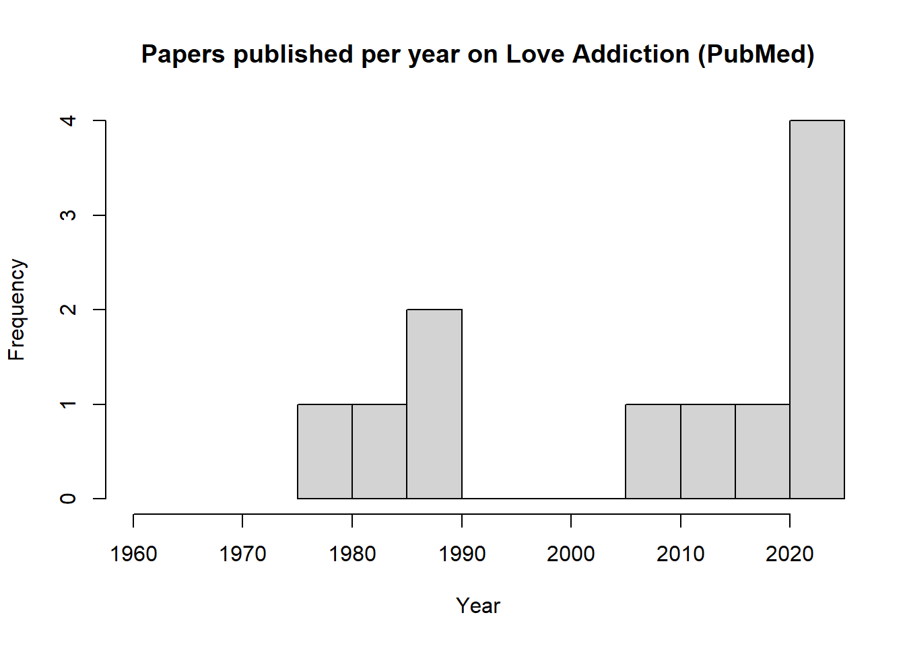
Show code
# Most popular journals:results_love3 %>%group_by(Journal_name_short) %>%summarise(n =n() ) %>%arrange(desc(n)) %>%print(n =20)# View(results_love3) # Visually inspect results# Now I need to add a label to all of these studies to signify that they Were returned from the love search so that we can distinguish them from other studies when we later joined the datasets together:Label_Love <-rep("love", times =count(results_love3))results_love_final <- results_love3 %>%bind_cols(Label_Love) %>%rename(Label =14)# View(results_love_final)# Now save the cleaned resultswrite.csv(results_love_final, "Data extraction/love_data_cleaned.csv", row.names=FALSE)
Selfie addiction
Extract studies and perform a basic clean of dataset
Notes pre-search: No available MeSH terms. The term “selfitis” is included in the title of some studies, the reason it seems like this actually came from a hoax perpetrated by the media who claimed that selfie addiction was a new craze… an now genuine academic research on this has been done!
Actual search used: “selfie addiction”
Including the “[Title/Abstract]” indicator in PubMed did not return any studies, for some reason, so I removed it from the search string.
Notes post-search: I manually inspected all of the results returned on PubMed. The following studies are not relevant to include and will be removed when refining the dataset:
Selfie-engagement on social media: Pathological narcissism, positive expectation, and body objectification - Which is more influential?
Association between physiological oscillations in self-esteem, narcissism and internet addiction: A cross-sectional study
The Influence of Social Media on Addictive Behaviors in College Students
Social Media Interventions for Risky Drinking Among Adolescents and Emerging Adults: Protocol for a Randomized Controlled Trial
Show code
# # Clean environment:# rm(list = ls())# # # Define the search term:# search_term_selfie <- '"selfie addiction"'# # # Use entrez_search to get the IDs of the articles:# search_results_selfie <- entrez_search(db="pubmed", term=search_term_selfie, retmax=20000)# id_list_selfie <- search_results_selfie$ids# # # Split id list into chunks of 100 for chunk/batches:# chunks <- split(id_list_selfie, ceiling(seq_along(id_list_selfie)/100))# # # Fetch details for each chunk of articles:# article_details_selfie <- map_dfr(chunks, function(ids) {# # Fetch details of the articles:# articles <- entrez_fetch(db="pubmed", id=ids, rettype="medline", retmode="text")# # # Split the articles into individual articles:# articles <- strsplit(articles, "\n\n")[[1]]# # # Process each article:# map_dfr(articles, function(article) {# # Split the article into lines:# lines <- strsplit(article, "\n")[[1]]# # # Get the details we're interested in:# details_selfie <- list(# PMID = if (any(grepl("^PMID", lines))) lines[grepl("^PMID", lines)] else NA,# DP = if (any(grepl("^DP", lines))) lines[grepl("^DP", lines)] else NA,# TI = if (any(grepl("^TI", lines))) lines[grepl("^TI", lines)] else NA,# LID = if (any(grepl("^LID", lines))) paste(lines[grepl("^LID", lines)], collapse="; ") else NA,# AB = if (any(grepl("^AB", lines))) paste(lines[grepl("^AB", lines)], collapse=" ") else NA,# FAU = if (any(grepl("^FAU", lines))) paste(lines[grepl("^FAU", lines)], collapse="; ") else NA,# AD = if (any(grepl("^AD", lines))) paste(lines[grepl("^AD", lines)], collapse="; ") else NA,# LA = if (any(grepl("^LA", lines))) paste(lines[grepl("^LA", lines)], collapse="; ") else NA,# PT = if (any(grepl("^PT", lines))) paste(lines[grepl("^PT", lines)], collapse="; ") else NA,# TA = if (any(grepl("^TA", lines))) lines[grepl("^TA", lines)] else NA,# COIS = if (any(grepl("^COIS", lines))) paste(lines[grepl("^COIS", lines)], collapse=" ") else NA,# JT = if (any(grepl("^JT", lines))) lines[grepl("^JT", lines)] else NA# )# # # Convert the list of details into a one-row data frame:# details_df_selfie <- bind_rows(details_selfie)# # return(details_df_selfie)# })# })# # # Check the results:# article_details_selfie %>%# as_tibble() %>%# print()# # # Let's remove the identifiers at the beginning of each data point:# rep_str <- c('PMID- ' = '', 'DP - ' = '', 'TI - ' = '', 'LID - ' = '', 'AB - ' = '',# 'FAU - ' = '', 'AD - ' = '', 'LA - ' = '', 'PT - ' = '', 'TA - ' = '',# 'COIS- ' = '', 'JT - ' = '')# # results_selfie <- article_details_selfie %>%# mutate(across(everything(), ~str_replace_all(., rep_str))) %>% # Remove identifiers# # Now separate the date year and month/day info:# separate(DP, c("Year", "Month"), sep = "\\ ") %>%# mutate(Year = as.numeric(Year)) %>% # Convert Year to numeric# rename(# Let's also provide more descriptive names for each of the columns# "Title" = "TI", # "DOI" = "LID", # "Abstract" = "AB", # "Full_Author_Name" = "FAU", # "Author_Address" = "AD", # "Language" = "LA", # "Publication_Type" = "PT", # "Journal_name_short" = "TA",# "Conflict_of_Interest_Statement" = "COIS",# "Journal_Title" = "JT") %>%# print()# # # Now save the initial results before proceeding so we can't lose them!# write.csv(results_selfie, "Data extraction/selfie_data.csv", row.names=FALSE)
Extract full title using rvest
Again, we’re going to use the rvest package to scrape the titles returned from the manual search in PubMed, then join the two datasets using the PMID, retaining the title from this new dataset.
Show code
# # Add search URL:# url_selfie_rvest <- "https://pubmed.ncbi.nlm.nih.gov/?term=%22selfie+addiction%22&size=200" # 13 results returned on 20/08/2023# # # Read and parse the webpage# webpage_selfie_rvest <- read_html(url_selfie_rvest)# # # Get the total number of search results# results_count_selfie <- webpage_selfie_rvest %>%# html_node(".results-amount .value") %>%# html_text() %>%# str_replace(",", "") %>%# as.numeric()# # # Calculate the number of pages# results_per_page_selfie <- 50# total_pages_selfie <- ceiling(results_count_selfie[1] / results_per_page_selfie)# # Print results_count_selfie and total_pages_selfie# print(results_count_selfie)# print(total_pages_selfie)# # # # Initialize an empty data frame# results_selfie_rvest <- data.frame()# # # Loop through each page and scrape the data# for (page in 0:(total_pages_selfie - 1)) {# # Update the page parameter in the URL for the current page# current_url <- paste0(url_selfie_rvest, "&page=", page + 1)# # # Read and parse the current webpage# current_page <- read_html(current_url)# # # Extract title# Title <- tryCatch({# current_page %>%# html_nodes(".docsum-title") %>%# html_text(trim = TRUE)# }, error = function(e) {# print(paste("Error extracting title info on page", page + 1))# rep(NA, length(Title)) # Return a vector of NAs with the same length as Title# })# # # Extract the PMID# pmid <- current_page %>%# html_nodes(".docsum-pmid") %>%# html_text(trim = TRUE)# # # Create a data frame with the extracted data# current_results_selfie <- data.frame(Title = Title,# PMID = pmid)# # # Combine the current results with the previous results# results_selfie_rvest <- rbind(results_selfie_rvest, current_results_selfie)# # # Introduce a delay to avoid overloading the server# sleep_time <- runif(1, min = 5, max = 15)# Sys.sleep(sleep_time)# }# # # Print the extracted data# print(as_tibble(results_selfie_rvest))# # # # Now save the titles before proceeding so we can't lose them!# write.csv(results_selfie_rvest, "Data extraction/selfie_titles.csv", row.names=FALSE)
Refine dataset
Now we need to identify and remove any duplicates, irrelevant studies, or entries with any other issues (e.g., those that turn out to be erratums)
Show code
# Load in first dataset in case environment clean on knit (above sections not executed for render):results_selfie<-read.csv("Data extraction/selfie_data.csv") %>%as_tibble()# Load in second dataset in case environment clean on knit (above sections not executed for render):results_selfie_rvest<-read.csv("Data extraction/selfie_titles.csv") %>%as_tibble()# Merge our two datasetsresults_selfie2 <- results_selfie %>%as_tibble() %>%rename("Title_trunc"="Title") %>%# Designate the truncated title from our primary dataset so we can remove it once we get the full titlefull_join(results_selfie_rvest, by ="PMID") %>%select(-Title_trunc) %>%# Bye truncated titlerelocate(Title) %>%# Place full title first for easeprint()# Check results:# View(results_selfie2)# Total number with basic duplication removal based on title:results_selfie2 %>%distinct(Title) %>%count() %>%print() # n = 0 dupes (August 2023)# Total number with basic duplication removal based on PMID:results_selfie2 %>%distinct(PMID) %>%count() %>%print() # None# Now remove the irrelevant studies:results_selfie3 <- results_selfie2 %>%filter(!(Title %in%c("Selfie-engagement on social media: Pathological narcissism, positive expectation, and body objectification - Which is more influential?","Association between physiological oscillations in self-esteem, narcissism and internet addiction: A cross-sectional study.","The Influence of Social Media on Addictive Behaviors in College Students.","Social Media Interventions for Risky Drinking Among Adolescents and Emerging Adults: Protocol for a Randomized Controlled Trial." )))# Summary of the year variable:summary(results_selfie3$Year)# Number of publications per year:selfie_hist<-hist(results_selfie3$Year,xlim =c(1960,2023),breaks =5,main ="Papers published per year on Selfie Addiction (PubMed)",xlab ="Year")
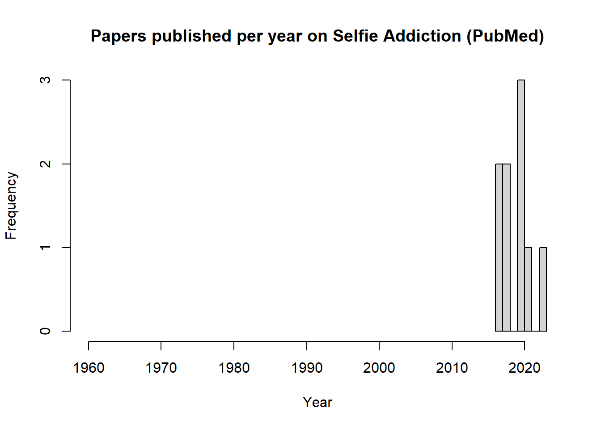
Show code
# Most popular journals:results_selfie3 %>%group_by(Journal_name_short) %>%summarise(n =n() ) %>%arrange(desc(n)) %>%print(n =20)# View(results_selfie2) # Visually inspect results# Now I need to add a label to all of these studies to signify that they Were returned from the selfie search so that we can distinguish them from other studies when we later joined the datasets together:Label_Selfie <-rep("selfie", times =count(results_selfie3))results_selfie_final <- results_selfie3 %>%bind_cols(Label_Selfie) %>%rename(Label =14)# View(results_selfie_final)# Now save the cleaned resultswrite.csv(results_selfie_final, "Data extraction/selfie_data_cleaned.csv", row.names=FALSE)
Extreme sport addiction
Extract studies and perform a basic clean of dataset
Notes pre-search: No available MeSH terms. Used my own knowledge of this research area to develop the range of terms, most of which were ultimately removed for a simple search strategy brackets see below).
Actual search used: “extreme sports addiction” OR “Adventure sports addiction”
My original search strategy was extensive and complex, but PubMed did not seem to like it at all and so I opted to simplify it to the above selection and then manually search the outcomes: (((((((((((“extreme sports addiction”[Title/Abstract]) OR (“addicted to extreme sports”[Title/Abstract])) OR (“addiction to extreme sports”[Title/Abstract])) OR (“adventure sports addiction”[Title/Abstract])) OR (“addicted to adventure sports”[Title/Abstract])) OR (“addiction to adventure sports”[Title/Abstract])) OR (“skydiving addiction”[Title/Abstract])) OR (“addicted to skydiving”[Title/Abstract])) OR (“addiction to skydiving”[Title/Abstract])) OR (“rock climbing addiction”[Title/Abstract])) OR (“addicted to rock climbing”[Title/Abstract])) OR (“addiction to rock climbing”[Title/Abstract])
Notes post-search: I manually inspected all of the results returned on PubMed. The following studies are relevant to include and will be isolated when refining the dataset:
“Addiction in Extreme Sports: An Exploration of Withdrawal States in Rock Climbers.”,
“Commentary on: Addiction in extreme sports: An exploration of withdrawal states in rock climbers.”,
“[Social-psychological characteristics of different types addictive behavior].”,
“Why do we climb mountains? An exploration of features of behavioural addiction in mountaineering and the association with stress-related psychiatric disorders.”,
“Response to”Nature fix: Addiction to outdoor activities”R. C. Buckley’s commentary on Heirene, R. M., Shearer, D., Roderique-Davies, G., & Mellalieu, S. D. (2016). Addiction in extreme sports: An exploration of withdrawal states in rock climbers. Journal of Behavioral Addictions, 5, 332-341.”,
“Adventure Thrills are Addictive.”,
“Development and Initial Validation of a Rock Climbing Craving Questionnaire (RCCQ).” ))
Show code
# # Clean environment:# rm(list = ls())# # # Define the search term:# search_term_extreme_sport <- '"extreme sports addiction" OR "Adventure sports addiction"'# # # Use entrez_search to get the IDs of the articles:# search_results_extreme_sport <- entrez_search(db="pubmed", term=search_term_extreme_sport, retmax=20000)# id_list_extreme_sport <- search_results_extreme_sport$ids# # # Split id list into chunks of 100 for chunk/batches:# chunks <- split(id_list_extreme_sport, ceiling(seq_along(id_list_extreme_sport)/100))# # # Fetch details for each chunk of articles:# article_details_extreme_sport <- map_dfr(chunks, function(ids) {# # Fetch details of the articles:# articles <- entrez_fetch(db="pubmed", id=ids, rettype="medline", retmode="text")# # # Split the articles into individual articles:# articles <- strsplit(articles, "\n\n")[[1]]# # # Process each article:# map_dfr(articles, function(article) {# # Split the article into lines:# lines <- strsplit(article, "\n")[[1]]# # # Get the details we're interested in:# details_extreme_sport <- list(# PMID = if (any(grepl("^PMID", lines))) lines[grepl("^PMID", lines)] else NA,# DP = if (any(grepl("^DP", lines))) lines[grepl("^DP", lines)] else NA,# TI = if (any(grepl("^TI", lines))) lines[grepl("^TI", lines)] else NA,# LID = if (any(grepl("^LID", lines))) paste(lines[grepl("^LID", lines)], collapse="; ") else NA,# AB = if (any(grepl("^AB", lines))) paste(lines[grepl("^AB", lines)], collapse=" ") else NA,# FAU = if (any(grepl("^FAU", lines))) paste(lines[grepl("^FAU", lines)], collapse="; ") else NA,# AD = if (any(grepl("^AD", lines))) paste(lines[grepl("^AD", lines)], collapse="; ") else NA,# LA = if (any(grepl("^LA", lines))) paste(lines[grepl("^LA", lines)], collapse="; ") else NA,# PT = if (any(grepl("^PT", lines))) paste(lines[grepl("^PT", lines)], collapse="; ") else NA,# TA = if (any(grepl("^TA", lines))) lines[grepl("^TA", lines)] else NA,# COIS = if (any(grepl("^COIS", lines))) paste(lines[grepl("^COIS", lines)], collapse=" ") else NA,# JT = if (any(grepl("^JT", lines))) lines[grepl("^JT", lines)] else NA# )# # # Convert the list of details into a one-row data frame:# details_df_extreme_sport <- bind_rows(details_extreme_sport)# # return(details_df_extreme_sport)# })# })# # # Check the results:# article_details_extreme_sport %>%# as_tibble() %>%# print()# # # Let's remove the identifiers at the beginning of each data point:# rep_str <- c('PMID- ' = '', 'DP - ' = '', 'TI - ' = '', 'LID - ' = '', 'AB - ' = '',# 'FAU - ' = '', 'AD - ' = '', 'LA - ' = '', 'PT - ' = '', 'TA - ' = '',# 'COIS- ' = '', 'JT - ' = '')# # results_extreme_sport <- article_details_extreme_sport %>%# mutate(across(everything(), ~str_replace_all(., rep_str))) %>% # Remove identifiers# # Now separate the date year and month/day info:# separate(DP, c("Year", "Month"), sep = "\\ ") %>%# mutate(Year = as.numeric(Year)) %>% # Convert Year to numeric# rename(# Let's also provide more descriptive names for each of the columns# "Title" = "TI", # "DOI" = "LID", # "Abstract" = "AB", # "Full_Author_Name" = "FAU", # "Author_Address" = "AD", # "Language" = "LA", # "Publication_Type" = "PT", # "Journal_name_short" = "TA",# "Conflict_of_Interest_Statement" = "COIS",# "Journal_Title" = "JT") %>%# print()# # # Now save the initial results before proceeding so we can't lose them!# write.csv(results_extreme_sport, "Data extraction/extreme_sport_data.csv", row.names=FALSE)
Extract full title using rvest
Again, we’re going to use the rvest package to scrape the titles returned from the manual search in PubMed, then join the two datasets using the PMID, retaining the title from this new dataset.
Show code
# # Add search URL:# url_extreme_sport_rvest <- "https://pubmed.ncbi.nlm.nih.gov/?term=%E2%80%9Cextreme+sports+addiction%E2%80%9D+OR+%E2%80%9CAdventure+sports+addiction%E2%80%9D+&size=200" # 50 results returned on 20/08/2023# # # Read and parse the webpage# webpage_extreme_sport_rvest <- read_html(url_extreme_sport_rvest)# # # Get the total number of search results# results_count_extreme_sport <- webpage_extreme_sport_rvest %>%# html_node(".results-amount .value") %>%# html_text() %>%# str_replace(",", "") %>%# as.numeric()# # # Calculate the number of pages# results_per_page_extreme_sport <- 50# total_pages_extreme_sport <- ceiling(results_count_extreme_sport[1] / results_per_page_extreme_sport)# # Print results_count_extreme_sport and total_pages_extreme_sport# print(results_count_extreme_sport)# print(total_pages_extreme_sport)# # # # Initialize an empty data frame# results_extreme_sport_rvest <- data.frame()# # # Loop through each page and scrape the data# for (page in 0:(total_pages_extreme_sport - 1)) {# # Update the page parameter in the URL for the current page# current_url <- paste0(url_extreme_sport_rvest, "&page=", page + 1)# # # Read and parse the current webpage# current_page <- read_html(current_url)# # # Extract title# Title <- tryCatch({# current_page %>%# html_nodes(".docsum-title") %>%# html_text(trim = TRUE)# }, error = function(e) {# print(paste("Error extracting title info on page", page + 1))# rep(NA, length(Title)) # Return a vector of NAs with the same length as Title# })# # # Extract the PMID# pmid <- current_page %>%# html_nodes(".docsum-pmid") %>%# html_text(trim = TRUE)# # # Create a data frame with the extracted data# current_results_extreme_sport <- data.frame(Title = Title,# PMID = pmid)# # # Combine the current results with the previous results# results_extreme_sport_rvest <- rbind(results_extreme_sport_rvest, current_results_extreme_sport)# # # Introduce a delay to avoid overloading the server# sleep_time <- runif(1, min = 5, max = 15)# Sys.sleep(sleep_time)# }# # # Print the extracted data# print(as_tibble(results_extreme_sport_rvest))# # # # Now save the titles before proceeding so we can't lose them!# write.csv(results_extreme_sport_rvest, "Data extraction/extreme_sport_titles.csv", row.names=FALSE)
Refine dataset
Now we need to identify and remove any duplicates, irrelevant studies, or entries with any other issues (e.g., those that turn out to be erratums)
Show code
# Load in first dataset in case environment clean on knit (above sections not executed for render):results_extreme_sport<-read.csv("Data extraction/extreme_sport_data.csv") %>%as_tibble()# Load in second dataset in case environment clean on knit (above sections not executed for render):results_extreme_sport_rvest<-read.csv("Data extraction/extreme_sport_titles.csv") %>%as_tibble()# Merge our two datasetsresults_extreme_sport2 <- results_extreme_sport %>%as_tibble() %>%rename("Title_trunc"="Title") %>%# Designate the truncated title from our primary dataset so we can remove it once we get the full titlefull_join(results_extreme_sport_rvest, by ="PMID") %>%select(-Title_trunc) %>%# Bye truncated titlerelocate(Title) %>%# Place full title first for easeprint()# Check results:# View(results_extreme_sport2)# Total number with basic duplication removal based on title:results_extreme_sport2 %>%distinct(Title) %>%count() %>%print() # n = 0 dupes (August 2023)# Total number with basic duplication removal based on PMID:results_extreme_sport2 %>%distinct(PMID) %>%count() %>%print() # None# Now isolate the relevant studies:results_extreme_sport3 <- results_extreme_sport2 %>%filter(Title %in%c("Addiction in Extreme Sports: An Exploration of Withdrawal States in Rock Climbers.","Commentary on: Addiction in extreme sports: An exploration of withdrawal states in rock climbers.","[Social-psychological characteristics of different types addictive behavior].","Why do we climb mountains? An exploration of features of behavioural addiction in mountaineering and the association with stress-related psychiatric disorders.","Response to \"Nature fix: Addiction to outdoor activities\"R. C. Buckley's commentary on Heirene, R. M., Shearer, D., Roderique-Davies, G., & Mellalieu, S. D. (2016). Addiction in extreme sports: An exploration of withdrawal states in rock climbers. Journal of Behavioral Addictions, 5, 332-341.","Adventure Thrills are Addictive.","Development and Initial Validation of a Rock Climbing Craving Questionnaire (RCCQ)."))# Summary of the year variable:summary(results_extreme_sport3$Year)# Number of publications per year:extreme_sport_hist<-hist(results_extreme_sport3$Year,xlim =c(1960,2023),breaks =5,main ="Papers published per year on Extreme Sport Addiction (PubMed)",xlab ="Year")
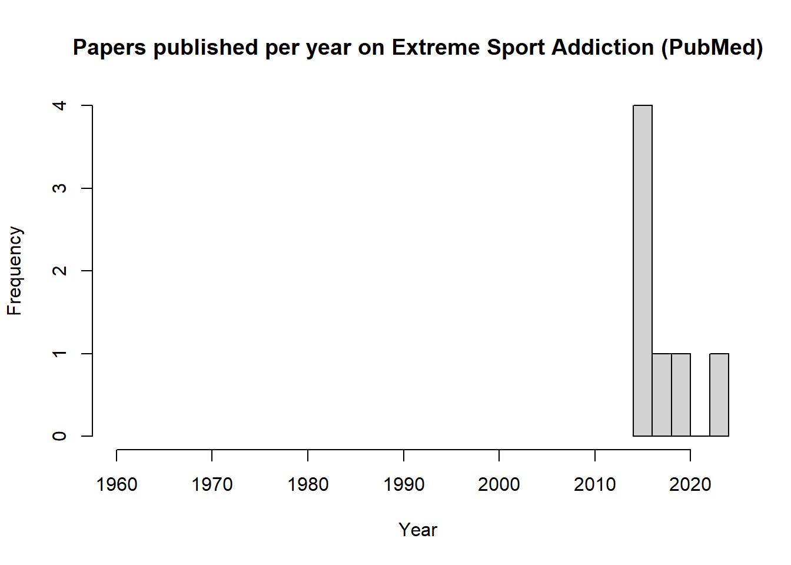
Show code
# Most popular journals:results_extreme_sport3 %>%group_by(Journal_name_short) %>%summarise(n =n() ) %>%arrange(desc(n)) %>%print(n =20)# View(results_extreme_sport2) # Visually inspect results# Now I need to add a label to all of these studies to signify that they Were returned from the extreme_sport search so that we can distinguish them from other studies when we later joined the datasets together:Label_Extreme_sport <-rep("extreme_sport", times =count(results_extreme_sport3))results_extreme_sport_final <- results_extreme_sport3 %>%bind_cols(Label_Extreme_sport) %>%rename(Label =14)# View(results_extreme_sport_final)# Now save the cleaned resultswrite.csv(results_extreme_sport_final, "Data extraction/extreme_sport_data_cleaned.csv", row.names=FALSE)
Running addiction
Extract studies and perform a basic clean of dataset
Notes pre-search: No available MeSH terms. The simple phrase “running addiction” seems to be most commonly used.
Actual search used: “Running addiction”[Title/Abstract]
Removed as it did not return any results: “addiction to running”[Title/Abstract]
Notes post-search: I manually inspected all of the results returned on PubMed. As far as I can see, all studies appeared relevant as of latest search date (see top of document).
Show code
# # Clean environment:# rm(list = ls())# # # Define the search term:# search_term_running <- '"Running addiction"[Title/Abstract]'# # # Use entrez_search to get the IDs of the articles:# search_results_running <- entrez_search(db="pubmed", term=search_term_running, retmax=20000)# id_list_running <- search_results_running$ids# # # Split id list into chunks of 100 for chunk/batches:# chunks <- split(id_list_running, ceiling(seq_along(id_list_running)/100))# # # Fetch details for each chunk of articles:# article_details_running <- map_dfr(chunks, function(ids) {# # Fetch details of the articles:# articles <- entrez_fetch(db="pubmed", id=ids, rettype="medline", retmode="text")# # # Split the articles into individual articles:# articles <- strsplit(articles, "\n\n")[[1]]# # # Process each article:# map_dfr(articles, function(article) {# # Split the article into lines:# lines <- strsplit(article, "\n")[[1]]# # # Get the details we're interested in:# details_running <- list(# PMID = if (any(grepl("^PMID", lines))) lines[grepl("^PMID", lines)] else NA,# DP = if (any(grepl("^DP", lines))) lines[grepl("^DP", lines)] else NA,# TI = if (any(grepl("^TI", lines))) lines[grepl("^TI", lines)] else NA,# LID = if (any(grepl("^LID", lines))) paste(lines[grepl("^LID", lines)], collapse="; ") else NA,# AB = if (any(grepl("^AB", lines))) paste(lines[grepl("^AB", lines)], collapse=" ") else NA,# FAU = if (any(grepl("^FAU", lines))) paste(lines[grepl("^FAU", lines)], collapse="; ") else NA,# AD = if (any(grepl("^AD", lines))) paste(lines[grepl("^AD", lines)], collapse="; ") else NA,# LA = if (any(grepl("^LA", lines))) paste(lines[grepl("^LA", lines)], collapse="; ") else NA,# PT = if (any(grepl("^PT", lines))) paste(lines[grepl("^PT", lines)], collapse="; ") else NA,# TA = if (any(grepl("^TA", lines))) lines[grepl("^TA", lines)] else NA,# COIS = if (any(grepl("^COIS", lines))) paste(lines[grepl("^COIS", lines)], collapse=" ") else NA,# JT = if (any(grepl("^JT", lines))) lines[grepl("^JT", lines)] else NA# )# # # Convert the list of details into a one-row data frame:# details_df_running <- bind_rows(details_running)# # return(details_df_running)# })# })# # # Check the results:# article_details_running %>%# as_tibble() %>%# print()# # # Let's remove the identifiers at the beginning of each data point:# rep_str <- c('PMID- ' = '', 'DP - ' = '', 'TI - ' = '', 'LID - ' = '', 'AB - ' = '',# 'FAU - ' = '', 'AD - ' = '', 'LA - ' = '', 'PT - ' = '', 'TA - ' = '',# 'COIS- ' = '', 'JT - ' = '')# # results_running <- article_details_running %>%# mutate(across(everything(), ~str_replace_all(., rep_str))) %>% # Remove identifiers# # Now separate the date year and month/day info:# separate(DP, c("Year", "Month"), sep = "\\ ") %>%# mutate(Year = as.numeric(Year)) %>% # Convert Year to numeric# rename(# Let's also provide more descriptive names for each of the columns# "Title" = "TI", # "DOI" = "LID", # "Abstract" = "AB", # "Full_Author_Name" = "FAU", # "Author_Address" = "AD", # "Language" = "LA", # "Publication_Type" = "PT", # "Journal_name_short" = "TA",# "Conflict_of_Interest_Statement" = "COIS",# "Journal_Title" = "JT") %>%# print()# # # Now save the initial results before proceeding so we can't lose them!# write.csv(results_running, "Data extraction/running_data.csv", row.names=FALSE)
Extract full title using rvest
Again, we’re going to use the rvest package to scrape the titles returned from the manual search in PubMed, then join the two datasets using the PMID, retaining the title from this new dataset.
Show code
# # Add search URL:# url_running_rvest <- "https://pubmed.ncbi.nlm.nih.gov/?term=%22Running+addiction%22%5BTitle%2FAbstract%5D&size=200" # 11 results returned on 20/08/2023# # # Read and parse the webpage# webpage_running_rvest <- read_html(url_running_rvest)# # # Get the total number of search results# results_count_running <- webpage_running_rvest %>%# html_node(".results-amount .value") %>%# html_text() %>%# str_replace(",", "") %>%# as.numeric()# # # Calculate the number of pages# results_per_page_running <- 50# total_pages_running <- ceiling(results_count_running[1] / results_per_page_running)# # Print results_count_running and total_pages_running# print(results_count_running)# print(total_pages_running)# # # # Initialize an empty data frame# results_running_rvest <- data.frame()# # # Loop through each page and scrape the data# for (page in 0:(total_pages_running - 1)) {# # Update the page parameter in the URL for the current page# current_url <- paste0(url_running_rvest, "&page=", page + 1)# # # Read and parse the current webpage# current_page <- read_html(current_url)# # # Extract title# Title <- tryCatch({# current_page %>%# html_nodes(".docsum-title") %>%# html_text(trim = TRUE)# }, error = function(e) {# print(paste("Error extracting title info on page", page + 1))# rep(NA, length(Title)) # Return a vector of NAs with the same length as Title# })# # # Extract the PMID# pmid <- current_page %>%# html_nodes(".docsum-pmid") %>%# html_text(trim = TRUE)# # # Create a data frame with the extracted data# current_results_running <- data.frame(Title = Title,# PMID = pmid)# # # Combine the current results with the previous results# results_running_rvest <- rbind(results_running_rvest, current_results_running)# # # Introduce a delay to avoid overloading the server# sleep_time <- runif(1, min = 5, max = 15)# Sys.sleep(sleep_time)# }# # # Print the extracted data# print(as_tibble(results_running_rvest))# # # # Now save the titles before proceeding so we can't lose them!# write.csv(results_running_rvest, "Data extraction/running_titles.csv", row.names=FALSE)
Refine dataset
Now we need to identify and remove any duplicates, irrelevant studies, or entries with any other issues (e.g., those that turn out to be erratums)
Show code
# Load in first dataset in case environment clean on knit (above sections not executed for render):results_running<-read.csv("Data extraction/running_data.csv") %>%as_tibble()# Load in second dataset in case environment clean on knit (above sections not executed for render):results_running_rvest<-read.csv("Data extraction/running_titles.csv") %>%as_tibble()# Merge our two datasetsresults_running2 <- results_running %>%as_tibble() %>%rename("Title_trunc"="Title") %>%# Designate the truncated title from our primary dataset so we can remove it once we get the full titlefull_join(results_running_rvest, by ="PMID") %>%select(-Title_trunc) %>%# Bye truncated titlerelocate(Title) %>%# Place full title first for easeprint()# Check results:# View(results_running2)# Total number with basic duplication removal based on title:results_running2 %>%distinct(Title) %>%count() %>%print() # n = 1 dupes: This is to studies of the title "running addiction" which are clearly distinct (different year, author, and journal)# Total number with basic duplication removal based on PMID:results_running2 %>%distinct(PMID) %>%count() %>%print() # None# Summary of the year variable:summary(results_running2$Year)# Number of publications per year:running_hist<-hist(results_running2$Year,xlim =c(1960,2023),breaks =15,main ="Papers published per year on Running Addiction (PubMed)",xlab ="Year")
Show code
# Most popular journals:results_running2 %>%group_by(Journal_name_short) %>%summarise(n =n() ) %>%arrange(desc(n)) %>%print(n =20)# View(results_running2) # Visually inspect results# Now I need to add a label to all of these studies to signify that they Were returned from the running search so that we can distinguish them from other studies when we later joined the datasets together:Label_Running <-rep("running", times =count(results_running2))results_running_final <- results_running2 %>%bind_cols(Label_Running) %>%rename(Label =14)# View(results_running_final)# Now save the cleaned resultswrite.csv(results_running_final, "Data extraction/running_data_cleaned.csv", row.names=FALSE)
Dance addiction
Extract studies and perform a basic clean of dataset
Notes pre-search: No available MeSH terms. The simple phrase “dance addiction” seems to be most commonly used. Adding in the [Title/Abstract] filter resulted in no results and so it was removed.
Actual search used: “dance addiction”
Removed as it did not return any results: “Dancing addiction” OR “addiction to dancing”
Notes post-search: I manually inspected all of the results returned on PubMed. Only the following studies appeared relevant and will be isolated when refining the dataset:
An empirical investigation of dance addiction
Argentine tango: Another behavioral addiction?
Show code
# # Clean environment:# rm(list = ls())# # # Define the search term:# search_term_dance <- '"dance addiction"'# # # Use entrez_search to get the IDs of the articles:# search_results_dance <- entrez_search(db="pubmed", term=search_term_dance, retmax=20000)# id_list_dance <- search_results_dance$ids# # # Split id list into chunks of 100 for chunk/batches:# chunks <- split(id_list_dance, ceiling(seq_along(id_list_dance)/100))# # # Fetch details for each chunk of articles:# article_details_dance <- map_dfr(chunks, function(ids) {# # Fetch details of the articles:# articles <- entrez_fetch(db="pubmed", id=ids, rettype="medline", retmode="text")# # # Split the articles into individual articles:# articles <- strsplit(articles, "\n\n")[[1]]# # # Process each article:# map_dfr(articles, function(article) {# # Split the article into lines:# lines <- strsplit(article, "\n")[[1]]# # # Get the details we're interested in:# details_dance <- list(# PMID = if (any(grepl("^PMID", lines))) lines[grepl("^PMID", lines)] else NA,# DP = if (any(grepl("^DP", lines))) lines[grepl("^DP", lines)] else NA,# TI = if (any(grepl("^TI", lines))) lines[grepl("^TI", lines)] else NA,# LID = if (any(grepl("^LID", lines))) paste(lines[grepl("^LID", lines)], collapse="; ") else NA,# AB = if (any(grepl("^AB", lines))) paste(lines[grepl("^AB", lines)], collapse=" ") else NA,# FAU = if (any(grepl("^FAU", lines))) paste(lines[grepl("^FAU", lines)], collapse="; ") else NA,# AD = if (any(grepl("^AD", lines))) paste(lines[grepl("^AD", lines)], collapse="; ") else NA,# LA = if (any(grepl("^LA", lines))) paste(lines[grepl("^LA", lines)], collapse="; ") else NA,# PT = if (any(grepl("^PT", lines))) paste(lines[grepl("^PT", lines)], collapse="; ") else NA,# TA = if (any(grepl("^TA", lines))) lines[grepl("^TA", lines)] else NA,# COIS = if (any(grepl("^COIS", lines))) paste(lines[grepl("^COIS", lines)], collapse=" ") else NA,# JT = if (any(grepl("^JT", lines))) lines[grepl("^JT", lines)] else NA# )# # # Convert the list of details into a one-row data frame:# details_df_dance <- bind_rows(details_dance)# # return(details_df_dance)# })# })# # # Check the results:# article_details_dance %>%# as_tibble() %>%# print()# # # Let's remove the identifiers at the beginning of each data point:# rep_str <- c('PMID- ' = '', 'DP - ' = '', 'TI - ' = '', 'LID - ' = '', 'AB - ' = '',# 'FAU - ' = '', 'AD - ' = '', 'LA - ' = '', 'PT - ' = '', 'TA - ' = '',# 'COIS- ' = '', 'JT - ' = '')# # results_dance <- article_details_dance %>%# mutate(across(everything(), ~str_replace_all(., rep_str))) %>% # Remove identifiers# # Now separate the date year and month/day info:# separate(DP, c("Year", "Month"), sep = "\\ ") %>%# mutate(Year = as.numeric(Year)) %>% # Convert Year to numeric# rename(# Let's also provide more descriptive names for each of the columns# "Title" = "TI", # "DOI" = "LID", # "Abstract" = "AB", # "Full_Author_Name" = "FAU", # "Author_Address" = "AD", # "Language" = "LA", # "Publication_Type" = "PT", # "Journal_name_short" = "TA",# "Conflict_of_Interest_Statement" = "COIS",# "Journal_Title" = "JT") %>%# print()# # # Now save the initial results before proceeding so we can't lose them!# write.csv(results_dance, "Data extraction/dance_data.csv", row.names=FALSE)
Extract full title using rvest
Again, we’re going to use the rvest package to scrape the titles returned from the manual search in PubMed, then join the two datasets using the PMID, retaining the title from this new dataset.
Show code
# # Add search URL:# url_dance_rvest <- "https://pubmed.ncbi.nlm.nih.gov/?term=%22dance+addiction%22+&size=200" # 103 results returned on 20/08/2023# # # Read and parse the webpage# webpage_dance_rvest <- read_html(url_dance_rvest)# # # Get the total number of search results# results_count_dance <- webpage_dance_rvest %>%# html_node(".results-amount .value") %>%# html_text() %>%# str_replace(",", "") %>%# as.numeric()# # # Calculate the number of pages# results_per_page_dance <- 50# total_pages_dance <- ceiling(results_count_dance[1] / results_per_page_dance)# # Print results_count_dance and total_pages_dance# print(results_count_dance)# print(total_pages_dance)# # # # Initialize an empty data frame# results_dance_rvest <- data.frame()# # # Loop through each page and scrape the data# for (page in 0:(total_pages_dance - 1)) {# # Update the page parameter in the URL for the current page# current_url <- paste0(url_dance_rvest, "&page=", page + 1)# # # Read and parse the current webpage# current_page <- read_html(current_url)# # # Extract title# Title <- tryCatch({# current_page %>%# html_nodes(".docsum-title") %>%# html_text(trim = TRUE)# }, error = function(e) {# print(paste("Error extracting title info on page", page + 1))# rep(NA, length(Title)) # Return a vector of NAs with the same length as Title# })# # # Extract the PMID# pmid <- current_page %>%# html_nodes(".docsum-pmid") %>%# html_text(trim = TRUE)# # # Create a data frame with the extracted data# current_results_dance <- data.frame(Title = Title,# PMID = pmid)# # # Combine the current results with the previous results# results_dance_rvest <- rbind(results_dance_rvest, current_results_dance)# # # Introduce a delay to avoid overloading the server# sleep_time <- runif(1, min = 5, max = 15)# Sys.sleep(sleep_time)# }# # # Print the extracted data# print(as_tibble(results_dance_rvest))# # # # Now save the titles before proceeding so we can't lose them!# write.csv(results_dance_rvest, "Data extraction/dance_titles.csv", row.names=FALSE)
Refine dataset
Now we need to identify and remove any duplicates, irrelevant studies, or entries with any other issues (e.g., those that turn out to be erratums)
Show code
# Load in first dataset in case environment clean on knit (above sections not executed for render):results_dance<-read.csv("Data extraction/dance_data.csv") %>%as_tibble()# Load in second dataset in case environment clean on knit (above sections not executed for render):results_dance_rvest<-read.csv("Data extraction/dance_titles.csv") %>%as_tibble()# Merge our two datasetsresults_dance2 <- results_dance %>%as_tibble() %>%rename("Title_trunc"="Title") %>%# Designate the truncated title from our primary dataset so we can remove it once we get the full titlefull_join(results_dance_rvest, by ="PMID") %>%select(-Title_trunc) %>%# Bye truncated titlerelocate(Title) %>%# Place full title first for easeprint()# Check results:# View(results_dance2)# Total number with basic duplication removal based on title:results_dance2 %>%distinct(Title) %>%count() %>%print() # n = 1 dupes: This is to studies of the title "dance addiction" which are clearly distinct (different year, author, and journal)# Total number with basic duplication removal based on PMID:results_dance2 %>%distinct(PMID) %>%count() %>%print() # None# Now isolate the relevant studies:results_dance3 <- results_dance2 %>%filter(Title %in%c("An empirical investigation of dance addiction.","Argentine tango: Another behavioral addiction?"))# Summary of the year variable:summary(results_dance3$Year)# Number of publications per year:dance_hist<-hist(results_dance3$Year,xlim =c(1960,2023),breaks =2,main ="Papers published per year on dance Addiction (PubMed)",xlab ="Year")
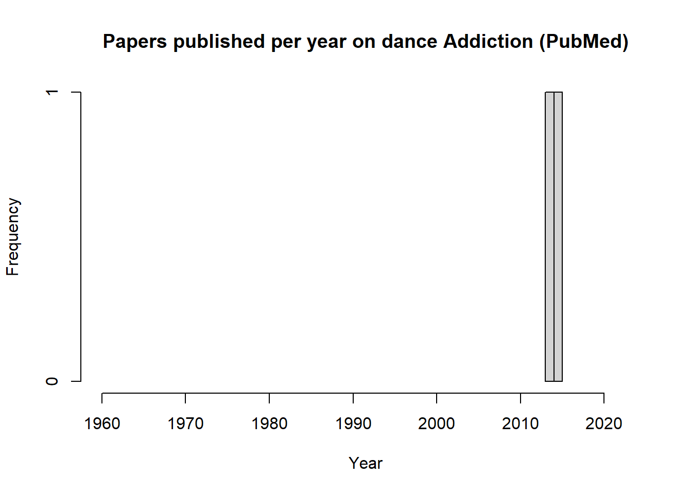
Show code
# Most popular journals:results_dance3 %>%group_by(Journal_name_short) %>%summarise(n =n() ) %>%arrange(desc(n)) %>%print(n =20)# View(results_dance2) # Visually inspect results# Now I need to add a label to all of these studies to signify that they Were returned from the dance search so that we can distinguish them from other studies when we later joined the datasets together:Label_dance <-rep("dance", times =count(results_dance3))results_dance_final <- results_dance3 %>%bind_cols(Label_dance) %>%rename(Label =14)# View(results_dance_final)# Now save the cleaned resultswrite.csv(results_dance_final, "Data extraction/dance_data_cleaned.csv", row.names=FALSE)
Joy riding addiction
Extract studies and perform a basic clean of dataset
Notes pre-search: No available MeSH terms. The simple phrase “joy riding addiction” seems to be used in the literature. Adding in the [Title/Abstract] filter resulted in no results and so it was removed.
Notes post-search: I manually inspected all of the results returned on PubMed. Only two studies are returned and they both appear relevant
Show code
# # Clean environment:# rm(list = ls())# # # Define the search term:# search_term_joyriding <- '"joy riding addiction"'# # # Use entrez_search to get the IDs of the articles:# search_results_joyriding <- entrez_search(db="pubmed", term=search_term_joyriding, retmax=20000)# id_list_joyriding <- search_results_joyriding$ids# # # Split id list into chunks of 100 for chunk/batches:# chunks <- split(id_list_joyriding, ceiling(seq_along(id_list_joyriding)/100))# # # Fetch details for each chunk of articles:# article_details_joyriding <- map_dfr(chunks, function(ids) {# # Fetch details of the articles:# articles <- entrez_fetch(db="pubmed", id=ids, rettype="medline", retmode="text")# # # Split the articles into individual articles:# articles <- strsplit(articles, "\n\n")[[1]]# # # Process each article:# map_dfr(articles, function(article) {# # Split the article into lines:# lines <- strsplit(article, "\n")[[1]]# # # Get the details we're interested in:# details_joyriding <- list(# PMID = if (any(grepl("^PMID", lines))) lines[grepl("^PMID", lines)] else NA,# DP = if (any(grepl("^DP", lines))) lines[grepl("^DP", lines)] else NA,# TI = if (any(grepl("^TI", lines))) lines[grepl("^TI", lines)] else NA,# LID = if (any(grepl("^LID", lines))) paste(lines[grepl("^LID", lines)], collapse="; ") else NA,# AB = if (any(grepl("^AB", lines))) paste(lines[grepl("^AB", lines)], collapse=" ") else NA,# FAU = if (any(grepl("^FAU", lines))) paste(lines[grepl("^FAU", lines)], collapse="; ") else NA,# AD = if (any(grepl("^AD", lines))) paste(lines[grepl("^AD", lines)], collapse="; ") else NA,# LA = if (any(grepl("^LA", lines))) paste(lines[grepl("^LA", lines)], collapse="; ") else NA,# PT = if (any(grepl("^PT", lines))) paste(lines[grepl("^PT", lines)], collapse="; ") else NA,# TA = if (any(grepl("^TA", lines))) lines[grepl("^TA", lines)] else NA,# COIS = if (any(grepl("^COIS", lines))) paste(lines[grepl("^COIS", lines)], collapse=" ") else NA,# JT = if (any(grepl("^JT", lines))) lines[grepl("^JT", lines)] else NA# )# # # Convert the list of details into a one-row data frame:# details_df_joyriding <- bind_rows(details_joyriding)# # return(details_df_joyriding)# })# })# # # Check the results:# article_details_joyriding %>%# as_tibble() %>%# print()# # # Let's remove the identifiers at the beginning of each data point:# rep_str <- c('PMID- ' = '', 'DP - ' = '', 'TI - ' = '', 'LID - ' = '', 'AB - ' = '',# 'FAU - ' = '', 'AD - ' = '', 'LA - ' = '', 'PT - ' = '', 'TA - ' = '',# 'COIS- ' = '', 'JT - ' = '')# # results_joyriding <- article_details_joyriding %>%# mutate(across(everything(), ~str_replace_all(., rep_str))) %>% # Remove identifiers# # Now separate the date year and month/day info:# separate(DP, c("Year", "Month"), sep = "\\ ") %>%# mutate(Year = as.numeric(Year)) %>% # Convert Year to numeric# rename(# Let's also provide more descriptive names for each of the columns# "Title" = "TI", # "DOI" = "LID", # "Abstract" = "AB", # "Full_Author_Name" = "FAU", # "Author_Address" = "AD", # "Language" = "LA", # "Publication_Type" = "PT", # "Journal_name_short" = "TA",# "Conflict_of_Interest_Statement" = "COIS",# "Journal_Title" = "JT") %>%# print()# # # Now save the initial results before proceeding so we can't lose them!# write.csv(results_joyriding, "Data extraction/joyriding_data.csv", row.names=FALSE)
Extract full title using rvest
Again, we’re going to use the rvest package to scrape the titles returned from the manual search in PubMed, then join the two datasets using the PMID, retaining the title from this new dataset.
Show code
# # Add search URL:# url_joyriding_rvest <- "https://pubmed.ncbi.nlm.nih.gov/?term=%22joy+riding+addiction%22&size=200" # 2 results returned on 20/08/2023# # # Read and parse the webpage# webpage_joyriding_rvest <- read_html(url_joyriding_rvest)# # # Get the total number of search results# results_count_joyriding <- webpage_joyriding_rvest %>%# html_node(".results-amount .value") %>%# html_text() %>%# str_replace(",", "") %>%# as.numeric()# # # Calculate the number of pages# results_per_page_joyriding <- 50# total_pages_joyriding <- ceiling(results_count_joyriding[1] / results_per_page_joyriding)# # Print results_count_joyriding and total_pages_joyriding# print(results_count_joyriding)# print(total_pages_joyriding)# # # # Initialize an empty data frame# results_joyriding_rvest <- data.frame()# # # Loop through each page and scrape the data# for (page in 0:(total_pages_joyriding - 1)) {# # Update the page parameter in the URL for the current page# current_url <- paste0(url_joyriding_rvest, "&page=", page + 1)# # # Read and parse the current webpage# current_page <- read_html(current_url)# # # Extract title# Title <- tryCatch({# current_page %>%# html_nodes(".docsum-title") %>%# html_text(trim = TRUE)# }, error = function(e) {# print(paste("Error extracting title info on page", page + 1))# rep(NA, length(Title)) # Return a vector of NAs with the same length as Title# })# # # Extract the PMID# pmid <- current_page %>%# html_nodes(".docsum-pmid") %>%# html_text(trim = TRUE)# # # Create a data frame with the extracted data# current_results_joyriding <- data.frame(Title = Title,# PMID = pmid)# # # Combine the current results with the previous results# results_joyriding_rvest <- rbind(results_joyriding_rvest, current_results_joyriding)# # # Introduce a delay to avoid overloading the server# sleep_time <- runif(1, min = 5, max = 15)# Sys.sleep(sleep_time)# }# # # Print the extracted data# print(as_tibble(results_joyriding_rvest))# # # # Now save the titles before proceeding so we can't lose them!# write.csv(results_joyriding_rvest, "Data extraction/joyriding_titles.csv", row.names=FALSE)
Refine dataset
Now we need to identify and remove any duplicates, irrelevant studies, or entries with any other issues (e.g., those that turn out to be erratums)
Show code
# Load in first dataset in case environment clean on knit (above sections not executed for render):results_joyriding<-read.csv("Data extraction/joyriding_data.csv") %>%as_tibble()# Load in second dataset in case environment clean on knit (above sections not executed for render):results_joyriding_rvest<-read.csv("Data extraction/joyriding_titles.csv") %>%as_tibble()# Merge our two datasetsresults_joyriding2 <- results_joyriding %>%as_tibble() %>%rename("Title_trunc"="Title") %>%# Designate the truncated title from our primary dataset so we can remove it once we get the full titlefull_join(results_joyriding_rvest, by ="PMID") %>%select(-Title_trunc) %>%# Bye truncated titlerelocate(Title) %>%# Place full title first for easeprint()# Check results:# View(results_joyriding2)# We know there's no duplicate so no point even checking.# Summary of the year variable:summary(results_joyriding2$Year)# Number of publications per year:joyriding_hist<-hist(results_joyriding2$Year,xlim =c(1960,2023),breaks =5,main ="Papers published per year on joyriding Addiction (PubMed)",xlab ="Year")
Show code
# Most popular journals:results_joyriding2 %>%group_by(Journal_name_short) %>%summarise(n =n() ) %>%arrange(desc(n)) %>%print(n =20)# View(results_joyriding2) # Visually inspect results# Now I need to add a label to all of these studies to signify that they Were returned from the joyriding search so that we can distinguish them from other studies when we later joined the datasets together:Label_joyriding <-rep("joyriding", times =count(results_joyriding2))results_joyriding_final <- results_joyriding2 %>%bind_cols(Label_joyriding) %>%rename(Label =14)# View(results_joyriding_final)# Now save the cleaned resultswrite.csv(results_joyriding_final, "Data extraction/joyriding_data_cleaned.csv", row.names=FALSE)
Crime addiction
Extract studies and perform a basic clean of dataset
Notes pre-search: No available MeSH terms. The simple phrase “Crime addiction” seems to be used in the literature.
Actual search used: “crime addiction”[Title/Abstract]
Notes post-search: I manually inspected all of the results returned on PubMed. Only 3 studies are returned and two appear relevant. The one irrelevant study is listed below and will be removed when refining this dataset:
The Politics of Tackling Inequalities: The Rise of Psychological Fundamentalism in Public Health and Welfare Reform.
Show code
# Clean environment:# rm(list = ls())# # # Define the search term:# search_term_crime <- '"Crime addiction"[Title/Abstract]'# # # Use entrez_search to get the IDs of the articles:# search_results_crime <- entrez_search(db="pubmed", term=search_term_crime, retmax=20000)# id_list_crime <- search_results_crime$ids# # # Split id list into chunks of 100 for chunk/batches:# chunks <- split(id_list_crime, ceiling(seq_along(id_list_crime)/100))# # # Fetch details for each chunk of articles:# article_details_crime <- map_dfr(chunks, function(ids) {# # Fetch details of the articles:# articles <- entrez_fetch(db="pubmed", id=ids, rettype="medline", retmode="text")# # # Split the articles into individual articles:# articles <- strsplit(articles, "\n\n")[[1]]# # # Process each article:# map_dfr(articles, function(article) {# # Split the article into lines:# lines <- strsplit(article, "\n")[[1]]# # # Get the details we're interested in:# details_crime <- list(# PMID = if (any(grepl("^PMID", lines))) lines[grepl("^PMID", lines)] else NA,# DP = if (any(grepl("^DP", lines))) lines[grepl("^DP", lines)] else NA,# TI = if (any(grepl("^TI", lines))) lines[grepl("^TI", lines)] else NA,# LID = if (any(grepl("^LID", lines))) paste(lines[grepl("^LID", lines)], collapse="; ") else NA,# AB = if (any(grepl("^AB", lines))) paste(lines[grepl("^AB", lines)], collapse=" ") else NA,# FAU = if (any(grepl("^FAU", lines))) paste(lines[grepl("^FAU", lines)], collapse="; ") else NA,# AD = if (any(grepl("^AD", lines))) paste(lines[grepl("^AD", lines)], collapse="; ") else NA,# LA = if (any(grepl("^LA", lines))) paste(lines[grepl("^LA", lines)], collapse="; ") else NA,# PT = if (any(grepl("^PT", lines))) paste(lines[grepl("^PT", lines)], collapse="; ") else NA,# TA = if (any(grepl("^TA", lines))) lines[grepl("^TA", lines)] else NA,# COIS = if (any(grepl("^COIS", lines))) paste(lines[grepl("^COIS", lines)], collapse=" ") else NA,# JT = if (any(grepl("^JT", lines))) lines[grepl("^JT", lines)] else NA# )# # # Convert the list of details into a one-row data frame:# details_df_crime <- bind_rows(details_crime)# # return(details_df_crime)# })# })# # # Check the results:# article_details_crime %>%# as_tibble() %>%# print()# # # Let's remove the identifiers at the beginning of each data point:# rep_str <- c('PMID- ' = '', 'DP - ' = '', 'TI - ' = '', 'LID - ' = '', 'AB - ' = '',# 'FAU - ' = '', 'AD - ' = '', 'LA - ' = '', 'PT - ' = '', 'TA - ' = '',# 'COIS- ' = '', 'JT - ' = '')# # results_crime <- article_details_crime %>%# mutate(across(everything(), ~str_replace_all(., rep_str))) %>% # Remove identifiers# # Now separate the date year and month/day info:# separate(DP, c("Year", "Month"), sep = "\\ ") %>%# mutate(Year = as.numeric(Year)) %>% # Convert Year to numeric# rename(# Let's also provide more descriptive names for each of the columns# "Title" = "TI", # "DOI" = "LID", # "Abstract" = "AB", # "Full_Author_Name" = "FAU", # "Author_Address" = "AD", # "Language" = "LA", # "Publication_Type" = "PT", # "Journal_name_short" = "TA",# "Conflict_of_Interest_Statement" = "COIS",# "Journal_Title" = "JT") %>%# print()# # # Now save the initial results before proceeding so we can't lose them!# write.csv(results_crime, "Data extraction/crime_data.csv", row.names=FALSE)
Extract full title using rvest
Again, we’re going to use the rvest package to scrape the titles returned from the manual search in PubMed, then join the two datasets using the PMID, retaining the title from this new dataset.
Show code
# # Add search URL:# url_crime_rvest <- "https://pubmed.ncbi.nlm.nih.gov/?term=%22crime+addiction%22%5BTitle%2FAbstract%5D&size=200" # 3 results returned on 20/08/2023# # # Read and parse the webpage# webpage_crime_rvest <- read_html(url_crime_rvest)# # # Get the total number of search results# results_count_crime <- webpage_crime_rvest %>%# html_node(".results-amount .value") %>%# html_text() %>%# str_replace(",", "") %>%# as.numeric()# # # Calculate the number of pages# results_per_page_crime <- 50# total_pages_crime <- ceiling(results_count_crime[1] / results_per_page_crime)# # Print results_count_crime and total_pages_crime# print(results_count_crime)# print(total_pages_crime)# # # # Initialize an empty data frame# results_crime_rvest <- data.frame()# # # Loop through each page and scrape the data# for (page in 0:(total_pages_crime - 1)) {# # Update the page parameter in the URL for the current page# current_url <- paste0(url_crime_rvest, "&page=", page + 1)# # # Read and parse the current webpage# current_page <- read_html(current_url)# # # Extract title# Title <- tryCatch({# current_page %>%# html_nodes(".docsum-title") %>%# html_text(trim = TRUE)# }, error = function(e) {# print(paste("Error extracting title info on page", page + 1))# rep(NA, length(Title)) # Return a vector of NAs with the same length as Title# })# # # Extract the PMID# pmid <- current_page %>%# html_nodes(".docsum-pmid") %>%# html_text(trim = TRUE)# # # Create a data frame with the extracted data# current_results_crime <- data.frame(Title = Title,# PMID = pmid)# # # Combine the current results with the previous results# results_crime_rvest <- rbind(results_crime_rvest, current_results_crime)# # # Introduce a delay to avoid overloading the server# sleep_time <- runif(1, min = 5, max = 15)# Sys.sleep(sleep_time)# }# # # Print the extracted data# print(as_tibble(results_crime_rvest))# # # # Now save the titles before proceeding so we can't lose them!# write.csv(results_crime_rvest, "Data extraction/crime_titles.csv", row.names=FALSE)
Refine dataset
Now we need to identify and remove any duplicates, irrelevant studies, or entries with any other issues (e.g., those that turn out to be erratums)
Show code
# Load in first dataset in case environment clean on knit (above sections not executed for render):results_crime<-read.csv("Data extraction/crime_data.csv") %>%as_tibble()# Load in second dataset in case environment clean on knit (above sections not executed for render):results_crime_rvest<-read.csv("Data extraction/crime_titles.csv") %>%as_tibble()# Merge our two datasetsresults_crime2 <- results_crime %>%as_tibble() %>%rename("Title_trunc"="Title") %>%# Designate the truncated title from our primary dataset so we can remove it once we get the full titlefull_join(results_crime_rvest, by ="PMID") %>%select(-Title_trunc) %>%# Bye truncated titlerelocate(Title) %>%# Place full title first for easeprint()# Check results:# View(results_crime2)# We know there's no duplicate so no point even checking.# Remove irrelevant study:results_crime3 <- results_crime2 %>%filter(Title !="The Politics of Tackling Inequalities: The Rise of Psychological Fundamentalism in Public Health and Welfare Reform.")# Summary of the year variable:summary(results_crime3$Year)# Number of publications per year:crime_hist<-hist(results_crime3$Year,xlim =c(1960,2023),breaks =5,main ="Papers published per year on Crime Addiction (PubMed)",xlab ="Year")
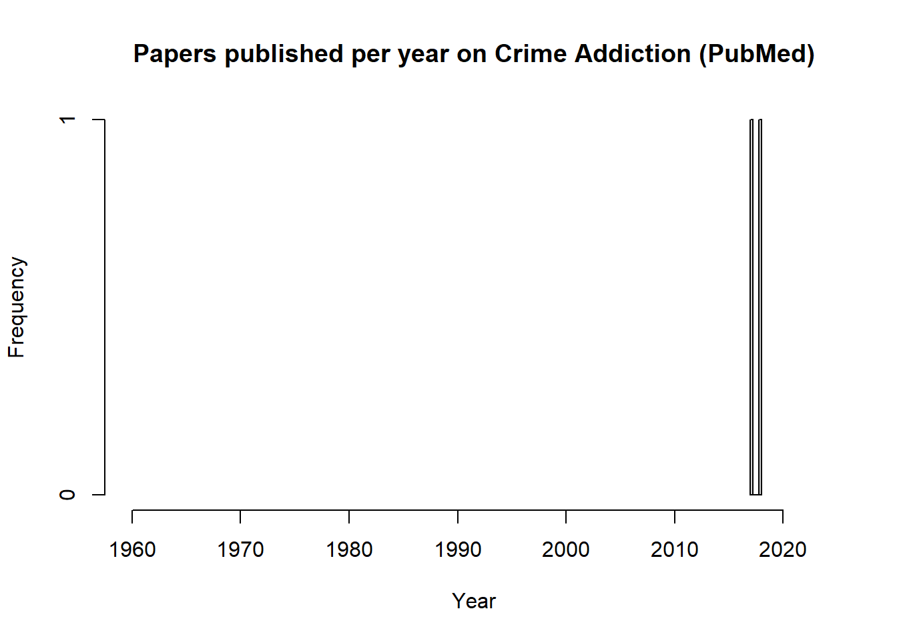
Show code
# Most popular journals:results_crime3 %>%group_by(Journal_name_short) %>%summarise(n =n() ) %>%arrange(desc(n)) %>%print(n =20)# View(results_crime2) # Visually inspect results# Now I need to add a label to all of these studies to signify that they Were returned from the crime search so that we can distinguish them from other studies when we later joined the datasets together:Label_crime <-rep("crime", times =count(results_crime3))results_crime_final <- results_crime3 %>%bind_cols(Label_crime) %>%rename(Label =14)# View(results_crime_final)# Now save the cleaned resultswrite.csv(results_crime_final, "Data extraction/crime_data_cleaned.csv", row.names=FALSE)
Polysurgical addiction
Extract studies and perform a basic clean of dataset
Notes pre-search: No available MeSH terms. The simple phrase “polysurgical addiction” seems to be used in the literature. Adding in the [Title/Abstract] filter resulted in no results and so it was removed.
Actual search used: “polysurgical addiction”
“pathomimia” and “Factitious disorder” are used similarly sometimes, but only returned irrelevant studies.
Notes post-search: I manually inspected all of the results returned on PubMed. Only 3 studies are returned and two appear relevant. The one irrelevant study is listed below and will be removed when refining this dataset:
Hypnosis in living systems theory: a living systems autopsy in a polysurgical, polymedical, polypsychiatric patient addicted to talwin.
Show code
# # Clean environment:# rm(list = ls())# # # Define the search term:# search_term_polysurgical <- '"polysurgical addiction'# # # Use entrez_search to get the IDs of the articles:# search_results_polysurgical <- entrez_search(db="pubmed", term=search_term_polysurgical, retmax=20000)# id_list_polysurgical <- search_results_polysurgical$ids# # # Split id list into chunks of 100 for chunk/batches:# chunks <- split(id_list_polysurgical, ceiling(seq_along(id_list_polysurgical)/100))# # # Fetch details for each chunk of articles:# article_details_polysurgical <- map_dfr(chunks, function(ids) {# # Fetch details of the articles:# articles <- entrez_fetch(db="pubmed", id=ids, rettype="medline", retmode="text")# # # Split the articles into individual articles:# articles <- strsplit(articles, "\n\n")[[1]]# # # Process each article:# map_dfr(articles, function(article) {# # Split the article into lines:# lines <- strsplit(article, "\n")[[1]]# # # Get the details we're interested in:# details_polysurgical <- list(# PMID = if (any(grepl("^PMID", lines))) lines[grepl("^PMID", lines)] else NA,# DP = if (any(grepl("^DP", lines))) lines[grepl("^DP", lines)] else NA,# TI = if (any(grepl("^TI", lines))) lines[grepl("^TI", lines)] else NA,# LID = if (any(grepl("^LID", lines))) paste(lines[grepl("^LID", lines)], collapse="; ") else NA,# AB = if (any(grepl("^AB", lines))) paste(lines[grepl("^AB", lines)], collapse=" ") else NA,# FAU = if (any(grepl("^FAU", lines))) paste(lines[grepl("^FAU", lines)], collapse="; ") else NA,# AD = if (any(grepl("^AD", lines))) paste(lines[grepl("^AD", lines)], collapse="; ") else NA,# LA = if (any(grepl("^LA", lines))) paste(lines[grepl("^LA", lines)], collapse="; ") else NA,# PT = if (any(grepl("^PT", lines))) paste(lines[grepl("^PT", lines)], collapse="; ") else NA,# TA = if (any(grepl("^TA", lines))) lines[grepl("^TA", lines)] else NA,# COIS = if (any(grepl("^COIS", lines))) paste(lines[grepl("^COIS", lines)], collapse=" ") else NA,# JT = if (any(grepl("^JT", lines))) lines[grepl("^JT", lines)] else NA# )# # # Convert the list of details into a one-row data frame:# details_df_polysurgical <- bind_rows(details_polysurgical)# # return(details_df_polysurgical)# })# })# # # Check the results:# article_details_polysurgical %>%# as_tibble() %>%# print()# # # Let's remove the identifiers at the beginning of each data point:# rep_str <- c('PMID- ' = '', 'DP - ' = '', 'TI - ' = '', 'LID - ' = '', 'AB - ' = '',# 'FAU - ' = '', 'AD - ' = '', 'LA - ' = '', 'PT - ' = '', 'TA - ' = '',# 'COIS- ' = '', 'JT - ' = '')# # results_polysurgical <- article_details_polysurgical %>%# mutate(across(everything(), ~str_replace_all(., rep_str))) %>% # Remove identifiers# # Now separate the date year and month/day info:# separate(DP, c("Year", "Month"), sep = "\\ ") %>%# mutate(Year = as.numeric(Year)) %>% # Convert Year to numeric# rename(# Let's also provide more descriptive names for each of the columns# "Title" = "TI", # "DOI" = "LID", # "Abstract" = "AB", # "Full_Author_Name" = "FAU", # "Author_Address" = "AD", # "Language" = "LA", # "Publication_Type" = "PT", # "Journal_name_short" = "TA",# "Conflict_of_Interest_Statement" = "COIS",# "Journal_Title" = "JT") %>%# print()# # # Now save the initial results before proceeding so we can't lose them!# write.csv(results_polysurgical, "Data extraction/polysurgical_data.csv", row.names=FALSE)
Extract full title using rvest
Again, we’re going to use the rvest package to scrape the titles returned from the manual search in PubMed, then join the two datasets using the PMID, retaining the title from this new dataset.
Show code
# # Add search URL:# url_polysurgical_rvest <- "https://pubmed.ncbi.nlm.nih.gov/?term=%22Polysurgical+addiction%22&size=200" # 3 results returned on 20/08/2023# # # Read and parse the webpage# webpage_polysurgical_rvest <- read_html(url_polysurgical_rvest)# # # Get the total number of search results# results_count_polysurgical <- webpage_polysurgical_rvest %>%# html_node(".results-amount .value") %>%# html_text() %>%# str_replace(",", "") %>%# as.numeric()# # # Calculate the number of pages# results_per_page_polysurgical <- 50# total_pages_polysurgical <- ceiling(results_count_polysurgical[1] / results_per_page_polysurgical)# # Print results_count_polysurgical and total_pages_polysurgical# print(results_count_polysurgical)# print(total_pages_polysurgical)# # # # Initialize an empty data frame# results_polysurgical_rvest <- data.frame()# # # Loop through each page and scrape the data# for (page in 0:(total_pages_polysurgical - 1)) {# # Update the page parameter in the URL for the current page# current_url <- paste0(url_polysurgical_rvest, "&page=", page + 1)# # # Read and parse the current webpage# current_page <- read_html(current_url)# # # Extract title# Title <- tryCatch({# current_page %>%# html_nodes(".docsum-title") %>%# html_text(trim = TRUE)# }, error = function(e) {# print(paste("Error extracting title info on page", page + 1))# rep(NA, length(Title)) # Return a vector of NAs with the same length as Title# })# # # Extract the PMID# pmid <- current_page %>%# html_nodes(".docsum-pmid") %>%# html_text(trim = TRUE)# # # Create a data frame with the extracted data# current_results_polysurgical <- data.frame(Title = Title,# PMID = pmid)# # # Combine the current results with the previous results# results_polysurgical_rvest <- rbind(results_polysurgical_rvest, current_results_polysurgical)# # # Introduce a delay to avoid overloading the server# sleep_time <- runif(1, min = 5, max = 15)# Sys.sleep(sleep_time)# }# # # Print the extracted data# print(as_tibble(results_polysurgical_rvest))# # # # Now save the titles before proceeding so we can't lose them!# write.csv(results_polysurgical_rvest, "Data extraction/polysurgical_titles.csv", row.names=FALSE)
Refine dataset
Now we need to identify and remove any duplicates, irrelevant studies, or entries with any other issues (e.g., those that turn out to be erratums)
Show code
# Load in first dataset in case environment clean on knit (above sections not executed for render):results_polysurgical<-read.csv("Data extraction/polysurgical_data.csv") %>%as_tibble()# Load in second dataset in case environment clean on knit (above sections not executed for render):results_polysurgical_rvest<-read.csv("Data extraction/polysurgical_titles.csv") %>%as_tibble()# Merge our two datasetsresults_polysurgical2 <- results_polysurgical %>%as_tibble() %>%rename("Title_trunc"="Title") %>%# Designate the truncated title from our primary dataset so we can remove it once we get the full titlefull_join(results_polysurgical_rvest, by ="PMID") %>%select(-Title_trunc) %>%# Bye truncated titlerelocate(Title) %>%# Place full title first for easeprint()# Check results:# View(results_polysurgical2)# We know there's no duplicate so no point even checking.# Remove irrelevant study:results_polysurgical3 <- results_polysurgical2 %>%filter(Title !="Hypnosis in living systems theory: a living systems autopsy in a polysurgical, polymedical, polypsychiatric patient addicted to talwin.")# Summary of the year variable:summary(results_polysurgical3$Year)# Number of publications per year:polysurgical_hist<-hist(results_polysurgical3$Year,xlim =c(1960,2023),breaks =10,main ="Papers published per year on Polysurgical Addiction (PubMed)",xlab ="Year")
Show code
# Most popular journals:results_polysurgical3 %>%group_by(Journal_name_short) %>%summarise(n =n() ) %>%arrange(desc(n)) %>%print(n =20)# View(results_polysurgical3) # Visually inspect results# Now I need to add a label to all of these studies to signify that they Were returned from the polysurgical search so that we can distinguish them from other studies when we later joined the datasets together:Label_polysurgical <-rep("polysurgical", times =count(results_polysurgical3))results_polysurgical_final <- results_polysurgical3 %>%bind_cols(Label_polysurgical) %>%rename(Label =14)# View(results_polysurgical_final)# Now save the cleaned resultswrite.csv(results_polysurgical_final, "Data extraction/polysurgical_data_cleaned.csv", row.names=FALSE)
Fortune telling addiction
Extract studies and perform a basic clean of dataset
Notes pre-search: No available MeSH terms. The simple phrase “fortune telling addiction” seems to be used in the literature.
Actual search used: “fortune telling addiction”[Title/Abstract]
Notes post-search: I manually inspected all of the results returned on PubMed. Only 3 studies are returned and all appear relevant.
Show code
# # Clean environment:# rm(list = ls())# # # Define the search term:# search_term_fortune_telling <- 'fortune telling addiction"[Title/Abstract]'# # # Use entrez_search to get the IDs of the articles:# search_results_fortune_telling <- entrez_search(db="pubmed", term=search_term_fortune_telling, retmax=20000)# id_list_fortune_telling <- search_results_fortune_telling$ids# # # Split id list into chunks of 100 for chunk/batches:# chunks <- split(id_list_fortune_telling, ceiling(seq_along(id_list_fortune_telling)/100))# # # Fetch details for each chunk of articles:# article_details_fortune_telling <- map_dfr(chunks, function(ids) {# # Fetch details of the articles:# articles <- entrez_fetch(db="pubmed", id=ids, rettype="medline", retmode="text")# # # Split the articles into individual articles:# articles <- strsplit(articles, "\n\n")[[1]]# # # Process each article:# map_dfr(articles, function(article) {# # Split the article into lines:# lines <- strsplit(article, "\n")[[1]]# # # Get the details we're interested in:# details_fortune_telling <- list(# PMID = if (any(grepl("^PMID", lines))) lines[grepl("^PMID", lines)] else NA,# DP = if (any(grepl("^DP", lines))) lines[grepl("^DP", lines)] else NA,# TI = if (any(grepl("^TI", lines))) lines[grepl("^TI", lines)] else NA,# LID = if (any(grepl("^LID", lines))) paste(lines[grepl("^LID", lines)], collapse="; ") else NA,# AB = if (any(grepl("^AB", lines))) paste(lines[grepl("^AB", lines)], collapse=" ") else NA,# FAU = if (any(grepl("^FAU", lines))) paste(lines[grepl("^FAU", lines)], collapse="; ") else NA,# AD = if (any(grepl("^AD", lines))) paste(lines[grepl("^AD", lines)], collapse="; ") else NA,# LA = if (any(grepl("^LA", lines))) paste(lines[grepl("^LA", lines)], collapse="; ") else NA,# PT = if (any(grepl("^PT", lines))) paste(lines[grepl("^PT", lines)], collapse="; ") else NA,# TA = if (any(grepl("^TA", lines))) lines[grepl("^TA", lines)] else NA,# COIS = if (any(grepl("^COIS", lines))) paste(lines[grepl("^COIS", lines)], collapse=" ") else NA,# JT = if (any(grepl("^JT", lines))) lines[grepl("^JT", lines)] else NA# )# # # Convert the list of details into a one-row data frame:# details_df_fortune_telling <- bind_rows(details_fortune_telling)# # return(details_df_fortune_telling)# })# })# # # Check the results:# article_details_fortune_telling %>%# as_tibble() %>%# print()# # # Let's remove the identifiers at the beginning of each data point:# rep_str <- c('PMID- ' = '', 'DP - ' = '', 'TI - ' = '', 'LID - ' = '', 'AB - ' = '',# 'FAU - ' = '', 'AD - ' = '', 'LA - ' = '', 'PT - ' = '', 'TA - ' = '',# 'COIS- ' = '', 'JT - ' = '')# # results_fortune_telling <- article_details_fortune_telling %>%# mutate(across(everything(), ~str_replace_all(., rep_str))) %>% # Remove identifiers# # Now separate the date year and month/day info:# separate(DP, c("Year", "Month"), sep = "\\ ") %>%# mutate(Year = as.numeric(Year)) %>% # Convert Year to numeric# rename(# Let's also provide more descriptive names for each of the columns# "Title" = "TI", # "DOI" = "LID", # "Abstract" = "AB", # "Full_Author_Name" = "FAU", # "Author_Address" = "AD", # "Language" = "LA", # "Publication_Type" = "PT", # "Journal_name_short" = "TA",# "Conflict_of_Interest_Statement" = "COIS",# "Journal_Title" = "JT") %>%# print()# # # Now save the initial results before proceeding so we can't lose them!# write.csv(results_fortune_telling, "Data extraction/fortune_telling_data.csv", row.names=FALSE)
Extract full title using rvest
Again, we’re going to use the rvest package to scrape the titles returned from the manual search in PubMed, then join the two datasets using the PMID, retaining the title from this new dataset.
Show code
# # Add search URL:# url_fortune_telling_rvest <- "https://pubmed.ncbi.nlm.nih.gov/?term=%22fortune+telling+addiction%22%5BTitle%2FAbstract%5D&size=200" # 3 results returned on 20/08/2023# # # Read and parse the webpage# webpage_fortune_telling_rvest <- read_html(url_fortune_telling_rvest)# # # Get the total number of search results# results_count_fortune_telling <- webpage_fortune_telling_rvest %>%# html_node(".results-amount .value") %>%# html_text() %>%# str_replace(",", "") %>%# as.numeric()# # # Calculate the number of pages# results_per_page_fortune_telling <- 50# total_pages_fortune_telling <- ceiling(results_count_fortune_telling[1] / results_per_page_fortune_telling)# # Print results_count_fortune_telling and total_pages_fortune_telling# print(results_count_fortune_telling)# print(total_pages_fortune_telling)# # # # Initialize an empty data frame# results_fortune_telling_rvest <- data.frame()# # # Loop through each page and scrape the data# for (page in 0:(total_pages_fortune_telling - 1)) {# # Update the page parameter in the URL for the current page# current_url <- paste0(url_fortune_telling_rvest, "&page=", page + 1)# # # Read and parse the current webpage# current_page <- read_html(current_url)# # # Extract title# Title <- tryCatch({# current_page %>%# html_nodes(".docsum-title") %>%# html_text(trim = TRUE)# }, error = function(e) {# print(paste("Error extracting title info on page", page + 1))# rep(NA, length(Title)) # Return a vector of NAs with the same length as Title# })# # # Extract the PMID# pmid <- current_page %>%# html_nodes(".docsum-pmid") %>%# html_text(trim = TRUE)# # # Create a data frame with the extracted data# current_results_fortune_telling <- data.frame(Title = Title,# PMID = pmid)# # # Combine the current results with the previous results# results_fortune_telling_rvest <- rbind(results_fortune_telling_rvest, current_results_fortune_telling)# # # Introduce a delay to avoid overloading the server# sleep_time <- runif(1, min = 5, max = 15)# Sys.sleep(sleep_time)# }# # # Print the extracted data# print(as_tibble(results_fortune_telling_rvest))# # # # Now save the titles before proceeding so we can't lose them!# write.csv(results_fortune_telling_rvest, "Data extraction/fortune_telling_titles.csv", row.names=FALSE)
Refine dataset
Now we need to identify and remove any duplicates, irrelevant studies, or entries with any other issues (e.g., those that turn out to be erratums)
Show code
# Load in first dataset in case environment clean on knit (above sections not executed for render):results_fortune_telling<-read.csv("Data extraction/fortune_telling_data.csv") %>%as_tibble()# Load in second dataset in case environment clean on knit (above sections not executed for render):results_fortune_telling_rvest<-read.csv("Data extraction/fortune_telling_titles.csv") %>%as_tibble()# Merge our two datasetsresults_fortune_telling2 <- results_fortune_telling %>%as_tibble() %>%rename("Title_trunc"="Title") %>%# Designate the truncated title from our primary dataset so we can remove it once we get the full titlefull_join(results_fortune_telling_rvest, by ="PMID") %>%select(-Title_trunc) %>%# Bye truncated titlerelocate(Title) %>%# Place full title first for easeprint()# Check results:# View(results_fortune_telling2)# We know there's no duplicate so no point even checking.# Summary of the year variable:summary(results_fortune_telling2$Year)# Number of publications per year:fortune_telling_hist<-hist(results_fortune_telling2$Year,xlim =c(1960,2023),breaks =5,main ="Papers published per year on Fortune Telling Addiction (PubMed)",xlab ="Year")
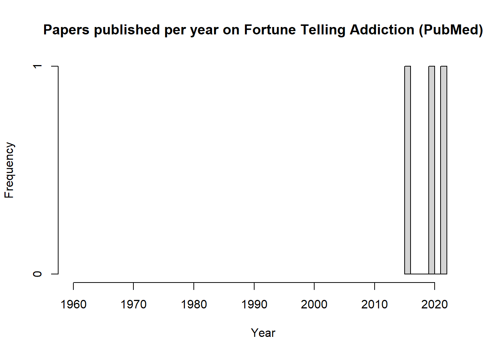
Show code
# Most popular journals:results_fortune_telling2 %>%group_by(Journal_name_short) %>%summarise(n =n() ) %>%arrange(desc(n)) %>%print(n =20)# View(results_fortune_telling2) # Visually inspect results# Now I need to add a label to all of these studies to signify that they Were returned from the fortune_telling search so that we can distinguish them from other studies when we later joined the datasets together:Label_fortune_telling <-rep("fortune_telling", times =count(results_fortune_telling2))results_fortune_telling_final <- results_fortune_telling2 %>%bind_cols(Label_fortune_telling) %>%rename(Label =14)# View(results_fortune_telling_final)# Now save the cleaned resultswrite.csv(results_fortune_telling_final, "Data extraction/fortune_telling_data_cleaned.csv", row.names=FALSE)
YouTube addiction
Extract studies and perform a basic clean of dataset
Notes pre-search: No available MeSH terms. The simple phrase “YouTube addiction” seems to be used in the only study I can find on this. Including the phrase inside quotation marks only returns one study, and so the link return from this search doesn’t work with the rvest package. As such, I removed the quotation marks and naturally found a couple of other studies that seem relevant.
Notes post-search: I manually inspected all of the results returned on PubMed. Of the approximately 64 results, 3 appeared relevant and will be isolated when refining this dataset:
YouTube™ as an effective but potentially addictive distraction tool for paediatric phlebotomy
YouTube™ as an effective but potentially addictive distraction tool for paediatric phlebotomy
Short Video Addiction on the Interaction of Creative Self-Efficacy and Career Interest to Innovative Design Profession Students
Show code
# # Clean environment:# rm(list = ls())# # # Define the search term:# search_term_YouTube <- 'YouTube addiction'# # # Use entrez_search to get the IDs of the articles:# search_results_YouTube <- entrez_search(db="pubmed", term=search_term_YouTube, retmax=20000)# id_list_YouTube <- search_results_YouTube$ids# # # Split id list into chunks of 100 for chunk/batches:# chunks <- split(id_list_YouTube, ceiling(seq_along(id_list_YouTube)/100))# # # Fetch details for each chunk of articles:# article_details_YouTube <- map_dfr(chunks, function(ids) {# # Fetch details of the articles:# articles <- entrez_fetch(db="pubmed", id=ids, rettype="medline", retmode="text")# # # Split the articles into individual articles:# articles <- strsplit(articles, "\n\n")[[1]]# # # Process each article:# map_dfr(articles, function(article) {# # Split the article into lines:# lines <- strsplit(article, "\n")[[1]]# # # Get the details we're interested in:# details_YouTube <- list(# PMID = if (any(grepl("^PMID", lines))) lines[grepl("^PMID", lines)] else NA,# DP = if (any(grepl("^DP", lines))) lines[grepl("^DP", lines)] else NA,# TI = if (any(grepl("^TI", lines))) lines[grepl("^TI", lines)] else NA,# LID = if (any(grepl("^LID", lines))) paste(lines[grepl("^LID", lines)], collapse="; ") else NA,# AB = if (any(grepl("^AB", lines))) paste(lines[grepl("^AB", lines)], collapse=" ") else NA,# FAU = if (any(grepl("^FAU", lines))) paste(lines[grepl("^FAU", lines)], collapse="; ") else NA,# AD = if (any(grepl("^AD", lines))) paste(lines[grepl("^AD", lines)], collapse="; ") else NA,# LA = if (any(grepl("^LA", lines))) paste(lines[grepl("^LA", lines)], collapse="; ") else NA,# PT = if (any(grepl("^PT", lines))) paste(lines[grepl("^PT", lines)], collapse="; ") else NA,# TA = if (any(grepl("^TA", lines))) lines[grepl("^TA", lines)] else NA,# COIS = if (any(grepl("^COIS", lines))) paste(lines[grepl("^COIS", lines)], collapse=" ") else NA,# JT = if (any(grepl("^JT", lines))) lines[grepl("^JT", lines)] else NA# )# # # Convert the list of details into a one-row data frame:# details_df_YouTube <- bind_rows(details_YouTube)# # return(details_df_YouTube)# })# })# # # Check the results:# article_details_YouTube %>%# as_tibble() %>%# print()# # # Let's remove the identifiers at the beginning of each data point:# rep_str <- c('PMID- ' = '', 'DP - ' = '', 'TI - ' = '', 'LID - ' = '', 'AB - ' = '',# 'FAU - ' = '', 'AD - ' = '', 'LA - ' = '', 'PT - ' = '', 'TA - ' = '',# 'COIS- ' = '', 'JT - ' = '')# # results_YouTube <- article_details_YouTube %>%# mutate(across(everything(), ~str_replace_all(., rep_str))) %>% # Remove identifiers# # Now separate the date year and month/day info:# separate(DP, c("Year", "Month"), sep = "\\ ") %>%# mutate(Year = as.numeric(Year)) %>% # Convert Year to numeric# rename(# Let's also provide more descriptive names for each of the columns# "Title" = "TI", # "DOI" = "LID", # "Abstract" = "AB", # "Full_Author_Name" = "FAU", # "Author_Address" = "AD", # "Language" = "LA", # "Publication_Type" = "PT", # "Journal_name_short" = "TA",# "Conflict_of_Interest_Statement" = "COIS",# "Journal_Title" = "JT") %>%# print()# # # Now save the initial results before proceeding so we can't lose them!# write.csv(results_YouTube, "Data extraction/YouTube_data.csv", row.names=FALSE)
Extract full title using rvest
Again, we’re going to use the rvest package to scrape the titles returned from the manual search in PubMed, then join the two datasets using the PMID, retaining the title from this new dataset.
Show code
# # Add search URL:# url_YouTube_rvest <- "https://pubmed.ncbi.nlm.nih.gov/?term=YouTube+addiction&size=200" # 64 results returned on 20/08/2023# # # Read and parse the webpage# webpage_YouTube_rvest <- read_html(url_YouTube_rvest)# # # Get the total number of search results# results_count_YouTube <- webpage_YouTube_rvest %>%# html_node(".results-amount .value") %>%# html_text() %>%# str_replace(",", "") %>%# as.numeric()# # # Calculate the number of pages# results_per_page_YouTube <- 50# total_pages_YouTube <- ceiling(results_count_YouTube[1] / results_per_page_YouTube)# # Print results_count_YouTube and total_pages_YouTube# print(results_count_YouTube)# print(total_pages_YouTube)# # # # Initialize an empty data frame# results_YouTube_rvest <- data.frame()# # # Loop through each page and scrape the data# for (page in 0:(total_pages_YouTube - 1)) {# # Update the page parameter in the URL for the current page# current_url <- paste0(url_YouTube_rvest, "&page=", page + 1)# # # Read and parse the current webpage# current_page <- read_html(current_url)# # # Extract title# Title <- tryCatch({# current_page %>%# html_nodes(".docsum-title") %>%# html_text(trim = TRUE)# }, error = function(e) {# print(paste("Error extracting title info on page", page + 1))# rep(NA, length(Title)) # Return a vector of NAs with the same length as Title# })# # # Extract the PMID# pmid <- current_page %>%# html_nodes(".docsum-pmid") %>%# html_text(trim = TRUE)# # # Create a data frame with the extracted data# current_results_YouTube <- data.frame(Title = Title,# PMID = pmid)# # # Combine the current results with the previous results# results_YouTube_rvest <- rbind(results_YouTube_rvest, current_results_YouTube)# # # Introduce a delay to avoid overloading the server# sleep_time <- runif(1, min = 5, max = 15)# Sys.sleep(sleep_time)# }# # # Print the extracted data# print(as_tibble(results_YouTube_rvest))# # # # Now save the titles before proceeding so we can't lose them!# write.csv(results_YouTube_rvest, "Data extraction/YouTube_titles.csv", row.names=FALSE)
Refine dataset
Now we need to identify and remove any duplicates, irrelevant studies, or entries with any other issues (e.g., those that turn out to be erratums)
Show code
# Load in first dataset in case environment clean on knit (above sections not executed for render):results_YouTube<-read.csv("Data extraction/YouTube_data.csv") %>%as_tibble()# Load in second dataset in case environment clean on knit (above sections not executed for render):results_YouTube_rvest<-read.csv("Data extraction/YouTube_titles.csv") %>%as_tibble()# Merge our two datasetsresults_YouTube2 <- results_YouTube %>%as_tibble() %>%rename("Title_trunc"="Title") %>%# Designate the truncated title from our primary dataset so we can remove it once we get the full titlefull_join(results_YouTube_rvest, by ="PMID") %>%select(-Title_trunc) %>%# Bye truncated titlerelocate(Title) %>%# Place full title first for easeprint()# Check results:# View(results_YouTube2)# Total number with basic duplication removal based on title:results_YouTube2 %>%distinct(Title) %>%count() %>%print() # n = 0 (August, 2023)# Total number with basic duplication removal based on PMID:results_YouTube2 %>%distinct(PMID) %>%count() %>%print() # None# Isolate relevant studies:results_YouTube3 <- results_YouTube2 %>%filter(Title %in%c("YouTube™ as an effective but potentially addictive distraction tool for paediatric phlebotomy.","Social media addiction: What is the role of content in YouTube?","Short Video Addiction on the Interaction of Creative Self-Efficacy and Career Interest to Innovative Design Profession Students." ))# Summary of the year variable:summary(results_YouTube3$Year)# Number of publications per year:YouTube_hist<-hist(results_YouTube3$Year,xlim =c(1960,2023),breaks =5,main ="Papers published per year on YouTube Addiction (PubMed)",xlab ="Year")
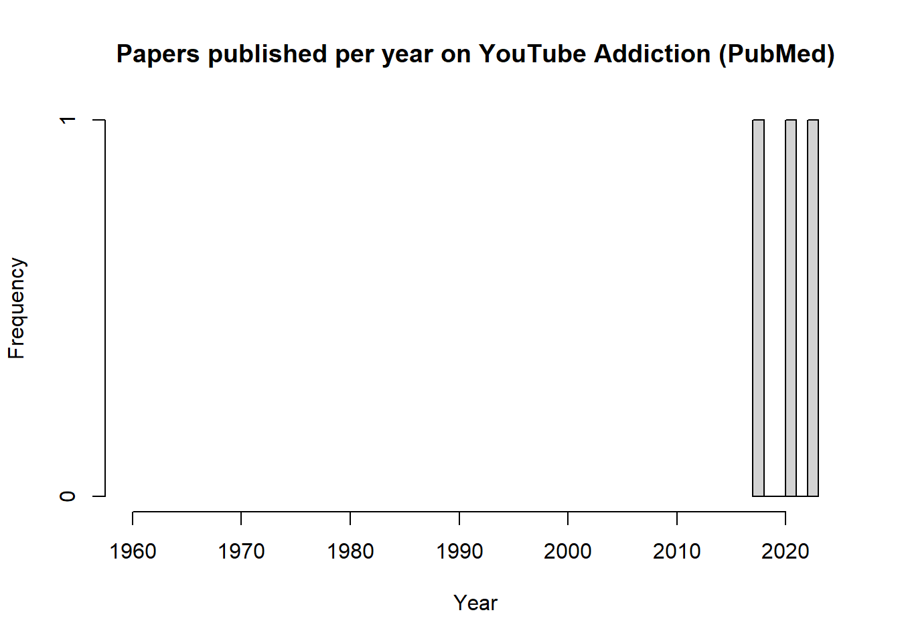
Show code
# Most popular journals:results_YouTube3 %>%group_by(Journal_name_short) %>%summarise(n =n() ) %>%arrange(desc(n)) %>%print(n =20)# View(results_YouTube2) # Visually inspect results# Now I need to add a label to all of these studies to signify that they Were returned from the YouTube search so that we can distinguish them from other studies when we later joined the datasets together:Label_YouTube <-rep("YouTube", times =count(results_YouTube3))results_YouTube_final <- results_YouTube3 %>%bind_cols(Label_YouTube) %>%rename(Label =14)# View(results_YouTube_final)# Now save the cleaned resultswrite.csv(results_YouTube_final, "Data extraction/YouTube_data_cleaned.csv", row.names=FALSE)
Death addiction
Extract studies and perform a basic clean of dataset
Notes pre-search: No available MeSH terms. There is only one study on this that I can find and it’s called “Addiction to death”. I played around with the search string to try and isolate this study, but I can only get it down to a minimum of 134 results using the below search string.
Actual search used: Addiction to death[Title/Abstract]
Notes post-search: As mentioned above, the only relevant study returned here is called: “Addiction to death.”. This will be isolated later when I refine the dataset.
Show code
# # Clean environment:# rm(list = ls())# # # Define the search term:# search_term_death <- 'Addiction to death[Title/Abstract]'# # # Use entrez_search to get the IDs of the articles:# search_results_death <- entrez_search(db="pubmed", term=search_term_death, retmax=20000)# id_list_death <- search_results_death$ids# # # Split id list into chunks of 100 for chunk/batches:# chunks <- split(id_list_death, ceiling(seq_along(id_list_death)/100))# # # Fetch details for each chunk of articles:# article_details_death <- map_dfr(chunks, function(ids) {# # Fetch details of the articles:# articles <- entrez_fetch(db="pubmed", id=ids, rettype="medline", retmode="text")# # # Split the articles into individual articles:# articles <- strsplit(articles, "\n\n")[[1]]# # # Process each article:# map_dfr(articles, function(article) {# # Split the article into lines:# lines <- strsplit(article, "\n")[[1]]# # # Get the details we're interested in:# details_death <- list(# PMID = if (any(grepl("^PMID", lines))) lines[grepl("^PMID", lines)] else NA,# DP = if (any(grepl("^DP", lines))) lines[grepl("^DP", lines)] else NA,# TI = if (any(grepl("^TI", lines))) lines[grepl("^TI", lines)] else NA,# LID = if (any(grepl("^LID", lines))) paste(lines[grepl("^LID", lines)], collapse="; ") else NA,# AB = if (any(grepl("^AB", lines))) paste(lines[grepl("^AB", lines)], collapse=" ") else NA,# FAU = if (any(grepl("^FAU", lines))) paste(lines[grepl("^FAU", lines)], collapse="; ") else NA,# AD = if (any(grepl("^AD", lines))) paste(lines[grepl("^AD", lines)], collapse="; ") else NA,# LA = if (any(grepl("^LA", lines))) paste(lines[grepl("^LA", lines)], collapse="; ") else NA,# PT = if (any(grepl("^PT", lines))) paste(lines[grepl("^PT", lines)], collapse="; ") else NA,# TA = if (any(grepl("^TA", lines))) lines[grepl("^TA", lines)] else NA,# COIS = if (any(grepl("^COIS", lines))) paste(lines[grepl("^COIS", lines)], collapse=" ") else NA,# JT = if (any(grepl("^JT", lines))) lines[grepl("^JT", lines)] else NA# )# # # Convert the list of details into a one-row data frame:# details_df_death <- bind_rows(details_death)# # return(details_df_death)# })# })# # # Check the results:# article_details_death %>%# as_tibble() %>%# print()# # # Let's remove the identifiers at the beginning of each data point:# rep_str <- c('PMID- ' = '', 'DP - ' = '', 'TI - ' = '', 'LID - ' = '', 'AB - ' = '',# 'FAU - ' = '', 'AD - ' = '', 'LA - ' = '', 'PT - ' = '', 'TA - ' = '',# 'COIS- ' = '', 'JT - ' = '')# # results_death <- article_details_death %>%# mutate(across(everything(), ~str_replace_all(., rep_str))) %>% # Remove identifiers# # Now separate the date year and month/day info:# separate(DP, c("Year", "Month"), sep = "\\ ") %>%# mutate(Year = as.numeric(Year)) %>% # Convert Year to numeric# rename(# Let's also provide more descriptive names for each of the columns# "Title" = "TI", # "DOI" = "LID", # "Abstract" = "AB", # "Full_Author_Name" = "FAU", # "Author_Address" = "AD", # "Language" = "LA", # "Publication_Type" = "PT", # "Journal_name_short" = "TA",# "Conflict_of_Interest_Statement" = "COIS",# "Journal_Title" = "JT") %>%# print()# # # Now save the initial results before proceeding so we can't lose them!# write.csv(results_death, "Data extraction/death_data.csv", row.names=FALSE)
Extract full title using rvest
Again, we’re going to use the rvest package to scrape the titles returned from the manual search in PubMed, then join the two datasets using the PMID, retaining the title from this new dataset.
Show code
# # Add search URL:# url_death_rvest <- "https://pubmed.ncbi.nlm.nih.gov/?term=Addiction+to+death%5BTitle%2FAbstract%5D&size=200" # 103 results returned on 20/08/2023# # # Read and parse the webpage# webpage_death_rvest <- read_html(url_death_rvest)# # # Get the total number of search results# results_count_death <- webpage_death_rvest %>%# html_node(".results-amount .value") %>%# html_text() %>%# str_replace(",", "") %>%# as.numeric()# # # Calculate the number of pages# results_per_page_death <- 50# total_pages_death <- ceiling(results_count_death[1] / results_per_page_death)# # Print results_count_death and total_pages_death# print(results_count_death)# print(total_pages_death)# # # # Initialize an empty data frame# results_death_rvest <- data.frame()# # # Loop through each page and scrape the data# for (page in 0:(total_pages_death - 1)) {# # Update the page parameter in the URL for the current page# current_url <- paste0(url_death_rvest, "&page=", page + 1)# # # Read and parse the current webpage# current_page <- read_html(current_url)# # # Extract title# Title <- tryCatch({# current_page %>%# html_nodes(".docsum-title") %>%# html_text(trim = TRUE)# }, error = function(e) {# print(paste("Error extracting title info on page", page + 1))# rep(NA, length(Title)) # Return a vector of NAs with the same length as Title# })# # # Extract the PMID# pmid <- current_page %>%# html_nodes(".docsum-pmid") %>%# html_text(trim = TRUE)# # # Create a data frame with the extracted data# current_results_death <- data.frame(Title = Title,# PMID = pmid)# # # Combine the current results with the previous results# results_death_rvest <- rbind(results_death_rvest, current_results_death)# # # Introduce a delay to avoid overloading the server# sleep_time <- runif(1, min = 5, max = 15)# Sys.sleep(sleep_time)# }# # # Print the extracted data# print(as_tibble(results_death_rvest))# # # # Now save the titles before proceeding so we can't lose them!# write.csv(results_death_rvest, "Data extraction/death_titles.csv", row.names=FALSE)
Refine dataset
Now we need to identify and remove any duplicates, irrelevant studies, or entries with any other issues (e.g., those that turn out to be erratums)
Show code
# Load in first dataset in case environment clean on knit (above sections not executed for render):results_death<-read.csv("Data extraction/death_data.csv") %>%as_tibble()# Load in second dataset in case environment clean on knit (above sections not executed for render):results_death_rvest<-read.csv("Data extraction/death_titles.csv") %>%as_tibble()# Merge our two datasetsresults_death2 <- results_death %>%as_tibble() %>%rename("Title_trunc"="Title") %>%# Designate the truncated title from our primary dataset so we can remove it once we get the full titlefull_join(results_death_rvest, by ="PMID") %>%select(-Title_trunc) %>%# Bye truncated titlerelocate(Title) %>%# Place full title first for easeprint()# Check results:# View(results_death2)# Total number with basic duplication removal based on title:results_death2 %>%distinct(Title) %>%count() %>%print() # n = 0 (August, 2023)# Total number with basic duplication removal based on PMID:results_death2 %>%distinct(PMID) %>%count() %>%print() # None# Isolate relevant study:results_death3 <- results_death2 %>%filter(Title =="Addiction to death." )# Summary of the year variable:summary(results_death3$Year)# Number of publications per year:death_hist<-hist(results_death3$Year,xlim =c(1960,2023),breaks =100,main ="Papers published per year on Death Addiction (PubMed)",xlab ="Year")
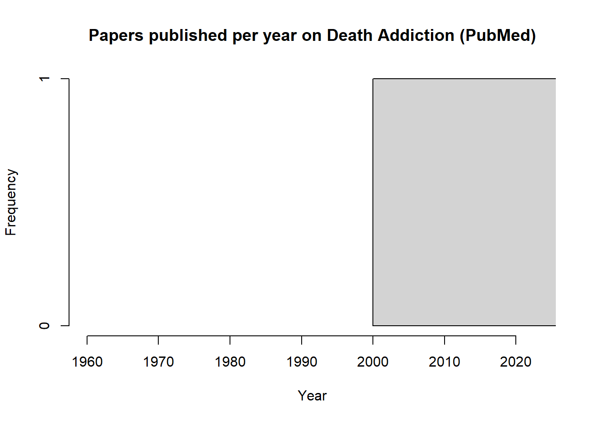
Show code
# Most popular journals:results_death3 %>%group_by(Journal_name_short) %>%summarise(n =n() ) %>%arrange(desc(n)) %>%print(n =20)# View(results_death2) # Visually inspect results# Now I need to add a label to all of these studies to signify that they Were returned from the death search so that we can distinguish them from other studies when we later joined the datasets together:Label_death <-rep("death", times =count(results_death3))results_death_final <- results_death3 %>%bind_cols(Label_death) %>%rename(Label =14)# View(results_death_final)# Now save the cleaned resultswrite.csv(results_death_final, "Data extraction/death_data_cleaned.csv", row.names=FALSE)
Near death addiction
Extract studies and perform a basic clean of dataset
Notes pre-search: No available MeSH terms. There is only one study on this that I can find and it’s called “Addiction to near-death”. I played around with the search string to try and isolate this study, but I can only get it down to a minimum of 7 results using the below search string.
Notes post-search: As mentioned above, the only relevant study returned here is called: “Addiction to near-death.”. This will be isolated later when I refine the dataset.
Show code
# # Clean environment:# rm(list = ls())# # # Define the search term:# search_term_near_death <- '"Addiction to near-death"'# # # Use entrez_search to get the IDs of the articles:# search_results_near_death <- entrez_search(db="pubmed", term=search_term_near_death, retmax=20000)# id_list_near_death <- search_results_near_death$ids# # # Split id list into chunks of 100 for chunk/batches:# chunks <- split(id_list_near_death, ceiling(seq_along(id_list_near_death)/100))# # # Fetch details for each chunk of articles:# article_details_near_death <- map_dfr(chunks, function(ids) {# # Fetch details of the articles:# articles <- entrez_fetch(db="pubmed", id=ids, rettype="medline", retmode="text")# # # Split the articles into individual articles:# articles <- strsplit(articles, "\n\n")[[1]]# # # Process each article:# map_dfr(articles, function(article) {# # Split the article into lines:# lines <- strsplit(article, "\n")[[1]]# # # Get the details we're interested in:# details_near_death <- list(# PMID = if (any(grepl("^PMID", lines))) lines[grepl("^PMID", lines)] else NA,# DP = if (any(grepl("^DP", lines))) lines[grepl("^DP", lines)] else NA,# TI = if (any(grepl("^TI", lines))) lines[grepl("^TI", lines)] else NA,# LID = if (any(grepl("^LID", lines))) paste(lines[grepl("^LID", lines)], collapse="; ") else NA,# AB = if (any(grepl("^AB", lines))) paste(lines[grepl("^AB", lines)], collapse=" ") else NA,# FAU = if (any(grepl("^FAU", lines))) paste(lines[grepl("^FAU", lines)], collapse="; ") else NA,# AD = if (any(grepl("^AD", lines))) paste(lines[grepl("^AD", lines)], collapse="; ") else NA,# LA = if (any(grepl("^LA", lines))) paste(lines[grepl("^LA", lines)], collapse="; ") else NA,# PT = if (any(grepl("^PT", lines))) paste(lines[grepl("^PT", lines)], collapse="; ") else NA,# TA = if (any(grepl("^TA", lines))) lines[grepl("^TA", lines)] else NA,# COIS = if (any(grepl("^COIS", lines))) paste(lines[grepl("^COIS", lines)], collapse=" ") else NA,# JT = if (any(grepl("^JT", lines))) lines[grepl("^JT", lines)] else NA# )# # # Convert the list of details into a one-row data frame:# details_df_near_death <- bind_rows(details_near_death)# # return(details_df_near_death)# })# })# # # Check the results:# article_details_near_death %>%# as_tibble() %>%# print()# # # Let's remove the identifiers at the beginning of each data point:# rep_str <- c('PMID- ' = '', 'DP - ' = '', 'TI - ' = '', 'LID - ' = '', 'AB - ' = '',# 'FAU - ' = '', 'AD - ' = '', 'LA - ' = '', 'PT - ' = '', 'TA - ' = '',# 'COIS- ' = '', 'JT - ' = '')# # results_near_death <- article_details_near_death %>%# mutate(across(everything(), ~str_replace_all(., rep_str))) %>% # Remove identifiers# # Now separate the date year and month/day info:# separate(DP, c("Year", "Month"), sep = "\\ ") %>%# mutate(Year = as.numeric(Year)) %>% # Convert Year to numeric# rename(# Let's also provide more descriptive names for each of the columns# "Title" = "TI", # "DOI" = "LID", # "Abstract" = "AB", # "Full_Author_Name" = "FAU", # "Author_Address" = "AD", # "Language" = "LA", # "Publication_Type" = "PT", # "Journal_name_short" = "TA",# "Conflict_of_Interest_Statement" = "COIS",# "Journal_Title" = "JT") %>%# print()# # # Now save the initial results before proceeding so we can't lose them!# write.csv(results_near_death, "Data extraction/near_death_data.csv", row.names=FALSE)
Extract full title using rvest
Again, we’re going to use the rvest package to scrape the titles returned from the manual search in PubMed, then join the two datasets using the PMID, retaining the title from this new dataset.
Show code
# # Add search URL:# url_near_death_rvest <- "https://pubmed.ncbi.nlm.nih.gov/?term=%22Addiction+to+near-death%22&size=200" # 103 results returned on 20/08/2023# # # Read and parse the webpage# webpage_near_death_rvest <- read_html(url_near_death_rvest)# # # Get the total number of search results# results_count_near_death <- webpage_near_death_rvest %>%# html_node(".results-amount .value") %>%# html_text() %>%# str_replace(",", "") %>%# as.numeric()# # # Calculate the number of pages# results_per_page_near_death <- 50# total_pages_near_death <- ceiling(results_count_near_death[1] / results_per_page_near_death)# # Print results_count_near_death and total_pages_near_death# print(results_count_near_death)# print(total_pages_near_death)# # # # Initialize an empty data frame# results_near_death_rvest <- data.frame()# # # Loop through each page and scrape the data# for (page in 0:(total_pages_near_death - 1)) {# # Update the page parameter in the URL for the current page# current_url <- paste0(url_near_death_rvest, "&page=", page + 1)# # # Read and parse the current webpage# current_page <- read_html(current_url)# # # Extract title# Title <- tryCatch({# current_page %>%# html_nodes(".docsum-title") %>%# html_text(trim = TRUE)# }, error = function(e) {# print(paste("Error extracting title info on page", page + 1))# rep(NA, length(Title)) # Return a vector of NAs with the same length as Title# })# # # Extract the PMID# pmid <- current_page %>%# html_nodes(".docsum-pmid") %>%# html_text(trim = TRUE)# # # Create a data frame with the extracted data# current_results_near_death <- data.frame(Title = Title,# PMID = pmid)# # # Combine the current results with the previous results# results_near_death_rvest <- rbind(results_near_death_rvest, current_results_near_death)# # # Introduce a delay to avoid overloading the server# sleep_time <- runif(1, min = 5, max = 15)# Sys.sleep(sleep_time)# }# # # Print the extracted data# print(as_tibble(results_near_death_rvest))# # # # Now save the titles before proceeding so we can't lose them!# write.csv(results_near_death_rvest, "Data extraction/near_death_titles.csv", row.names=FALSE)
Refine dataset
Now we need to identify and remove any duplicates, irrelevant studies, or entries with any other issues (e.g., those that turn out to be erratums)
Show code
# Load in first dataset in case environment clean on knit (above sections not executed for render):results_near_death<-read.csv("Data extraction/near_death_data.csv") %>%as_tibble()# Load in second dataset in case environment clean on knit (above sections not executed for render):results_near_death_rvest<-read.csv("Data extraction/near_death_titles.csv") %>%as_tibble()# Merge our two datasetsresults_near_death2 <- results_near_death %>%as_tibble() %>%rename("Title_trunc"="Title") %>%# Designate the truncated title from our primary dataset so we can remove it once we get the full titlefull_join(results_near_death_rvest, by ="PMID") %>%select(-Title_trunc) %>%# Bye truncated titlerelocate(Title) %>%# Place full title first for easeprint()# Check results:# View(results_near_death2)# Total number with basic duplication removal based on title:results_near_death2 %>%distinct(Title) %>%count() %>%print() # n = 0 (August, 2023)# Total number with basic duplication removal based on PMID:results_near_death2 %>%distinct(PMID) %>%count() %>%print() # None# Isolate relevant study:results_near_death3 <- results_near_death2 %>%filter(Title =="Addiction to near-death." )# Summary of the year variable:summary(results_near_death3$Year)# Number of publications per year:near_death_hist<-hist(results_near_death3$Year,xlim =c(1960,2023),breaks =1,main ="Papers published per year on Near Death Addiction (PubMed)",xlab ="Year")
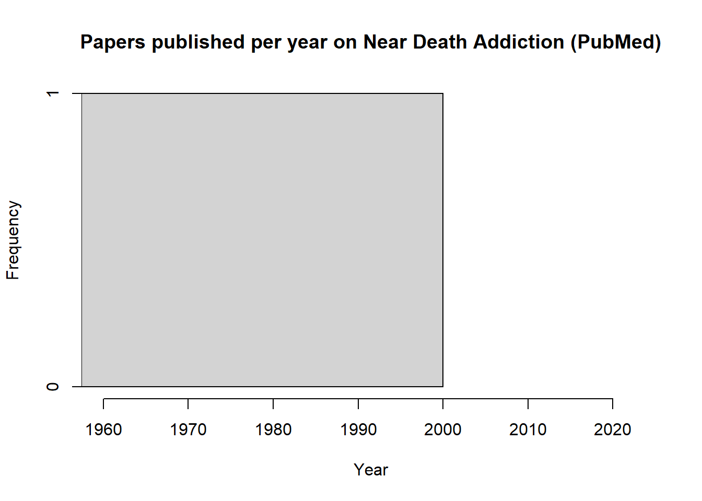
Show code
# Most popular journals:results_near_death3 %>%group_by(Journal_name_short) %>%summarise(n =n() ) %>%arrange(desc(n)) %>%print(n =20)# View(results_near_death2) # Visually inspect results# Now I need to add a label to all of these studies to signify that they Were returned from the near_death search so that we can distinguish them from other studies when we later joined the datasets together:Label_near_death <-rep("near_death", times =count(results_near_death3))results_near_death_final <- results_near_death3 %>%bind_cols(Label_near_death) %>%rename(Label =14)# View(results_near_death_final)# Now save the cleaned resultswrite.csv(results_near_death_final, "Data extraction/near_death_data_cleaned.csv", row.names=FALSE)
Join all final datasets
Now I’ll produce one clean dataset that contains all of the refined datasets for each of the behavioural addictions.
To ensure that every time this script runs it will use the same versions of the packages used during the script development, all packages are loaded using the groundhog.library() function from the groundhog package.
Rendering & publishing
This document is rendered in HTML format and published online using Quarto Pub by using the following command in the terminal:
quarto publish quarto-pub
The published online version of this document can be accessed here[ADD].
Git/ Github
The repository for the code used here can be accessed via this link.
Git and Github set up following the guide presented here. From this book:


Social media addiction
Extract studies and perform a basic clean of dataset
Notes pre-search: Comes under “Internet addiction disorder” when searching for MeSH terms. Nothing of relevance beyond the term “social media addictions”. Looked to literature on the subject to find relevant terms:
“disordered online social networking use” used here: https://pubmed.ncbi.nlm.nih.gov/25170590/
“social-network-use disorder” is the term used in: https://doi.org/10.1556/2006.2020.00035
Actual search used: ((((“social_media addiction”[Title/Abstract]) OR (“social_media dependence”[Title/Abstract])) OR (“compulsory social_media”[Title/Abstract])) OR (“obligatory social_media”[Title/Abstract])) OR (“Addiction to social_media”[Title/Abstract])
Manual search results: link
Notes post-search: I manually inspected all of the results returned on PubMed. There were a few results where the key search terms weren’t in the title or abstract, but they were in the keywords for the studies, which seems perfectly acceptable considering the types of studies we’re trying to detect with this process. All studies appeared relevant as of latest search date (see top of document).
Show code
Extract full title using rvest
Again, we’re going to use the
rvestpackage to scrape the titles returned from the manual search in PubMed, then join the two datasets using the PMID, retaining the title from this new dataset.Show code
Refine dataset
Now we need to identify and remove any duplicates, irrelevant studies, or entries with any other issues (e.g., those that turn out to be erratums)
Show code
Show code